读完这本书，你能回答的七个问题
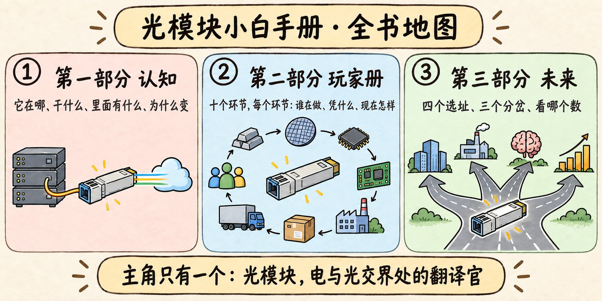
这本书只讲一个东西：光模块，AI 数据中心里站在每一个"电"与"光"交界处的翻译官。第一部分讲它是什么、为什么变；第二部分逐个环节讲谁在做、凭什么、现在过得怎么样；第三部分讲还没定的事。
面对一个陌生行业，难的不是找不到资料，而是资料太多，不知道哪些重要、它们之间是什么关系。这本书不罗列知识点，只回答七个问题。读完之后，你应该能用自己的话把这七句说出来。七句里的词（DSP、硅光、CPO）现在看不懂没关系，每一章会逐个定义，这里只是先把地图摊开：
这本书怎么读
全书只用一个比方：翻译官。GPU 是说话的人，网卡是话筒，交换机是电话总机，光纤是电话线，光模块是每个话筒和听筒旁边的翻译官。翻译官的大脑是 DSP，嘴是激光器加调制器，耳朵是光探测器，助听器是放大器。
这个比方只帮你记住位置，不解释机制。每一章的机制都会单独讲清楚。
本书只讲 AI 数据中心里的光模块，以及它上下游的直接邻居。电信网、海底光缆、家庭宽带不讲；GPU 里的显存和存储是另一本书的主角。数据中心之间的相干光只在交换系统那一页提一句。
开始之前，先猜三道题
不用查资料，凭直觉答。答案分别在第 2、4、9 章，读到的时候对一下。
光纤最大的优势是比铜线传得更快吗？
光模块里负责"把数据发出去"的是激光器吗？
中际旭创、Coherent 这些光模块公司，是这条产业链的技术核心吗？
几万颗 GPU 为什么必须连在一起？
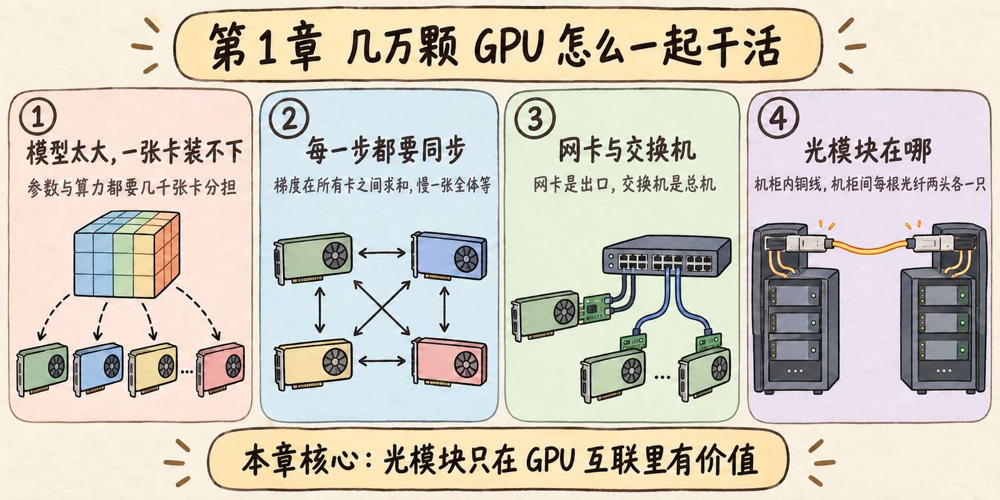
- GPU 是算 AI 的芯片
- 英伟达靠卖 GPU 成了这轮 AI 最大的赢家
- 并行训练与梯度同步
- 服务器、机柜、交换机
- 网卡
- 光模块的位置
"买 GPU 就是买算力，一颗 GPU 算力强集群就强。"错在漏了两件事：一颗 GPU 装不下今天的模型，也算不完今天的训练；把几万颗连起来之后，"连得快不快"就和"算得快不快"一样重要。
为什么一颗 GPU 不够：容量和时间
先看容量。训练一个大模型，要把模型的全部参数、每个参数的梯度和优化器状态都放在显存里。以混合精度加 Adam 优化器为例，每个参数大约要占 16 字节1。一个几千亿参数的模型，光这些"模型状态"就是几个 TB，而一颗 GPU 的显存是几十到几百 GB。所以模型必须被切开，分到很多颗 GPU 上，这叫模型并行。
再看时间。训练需要的总计算量等于"参数量乘数据量乘一个常数"，是天文数字；一颗 GPU 算完要几十年，几千颗一起算才能压到几个月。Meta 训练 Llama 3 405B 用了 16,000 颗 H1002。这叫数据并行：把训练数据切成很多份，每颗 GPU 拿一份算。
为什么它们必须不停地说话：同步
数据并行有个硬约束：每颗 GPU 用自己那份数据算出来的梯度，只是"部分答案"。要更新模型，必须把所有 GPU 的梯度求和平均，再把结果发回每一颗。这个动作叫全归约（all-reduce），每训练一步做一次；一步的通信量和参数量同一个量级1。模型并行更狠：一层算完的中间结果要马上传给持有下一层的 GPU，一步之内要传很多次。
所以 GPU 之间不是偶尔传个文件，而是每一步都要交换和参数量相当的数据。网络慢了，GPU 就在等。业内衡量这件事的指标叫"通信时间占比"：网络越慢、集群越大，GPU 空转的比例越高，算力就浪费了。这就是第 1 章标题的答案：连在一起是训练的数学结构决定的，不是工程偏好。
这几万颗 GPU 怎么装：四层
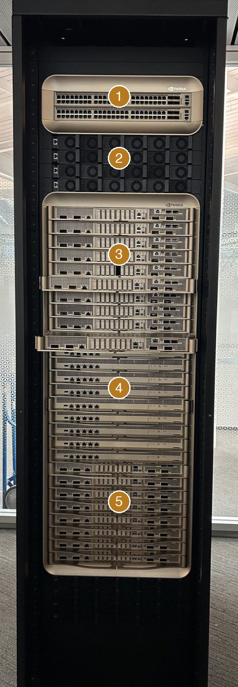
话筒和总机：网卡与交换机
一颗 GPU 要把梯度发给别的 GPU，先要有一个对外的口，这就是网卡（NIC，Network Interface Card，网络接口卡）。网卡把 GPU 显存里的数据打包成网络报文发出去，也接收别人发来的报文。Rubin 一代每颗 GPU 配的网卡带宽是 1.6 Tb/s，也就是两个 800G 口3。
几万个口不能两两拉线，中间要有交换机（switch）：它读每个报文的目的地址，把报文转到正确的出口。机柜顶上先有一级交换机，它们之间再由更大的交换机连起来，两到三层就能把十万张卡连成一张网。论坛上阿里云的十万卡设计用的就是两层结构，讲者的理由是三层会多一层核心交换机，交换机、光纤、光模块的数量都会大增，还多两跳时延4。
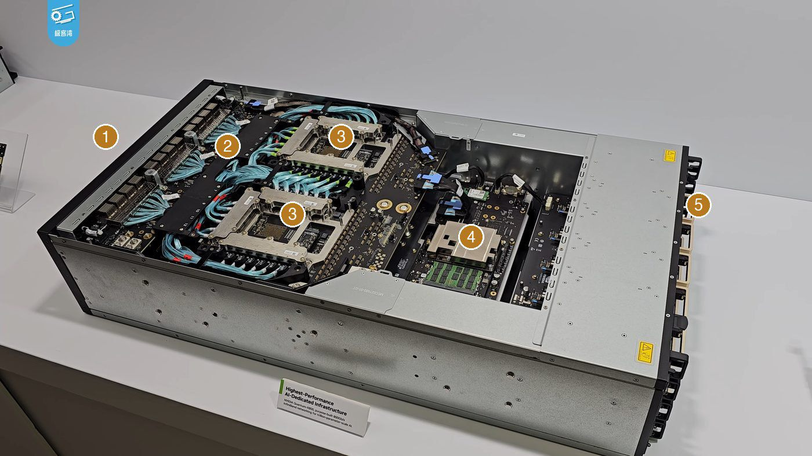
光模块在哪
机柜里面 GPU 之间距离一两米，用铜线直连。一出机柜，距离变成几十到几百米，铜线就撑不住了（为什么撑不住，第 2 章讲）。这时每一根连线的两头各要插一只光模块：这头把电变成光送进光纤，那头把光变回电交给交换机。交换机之间的连线也一样，每一跳、每一头都要一只。
GPU 必须连在一起，是因为模型装不下一颗卡、算不完一颗卡，而且每一步都要同步梯度。光模块不是单独存在的东西，它只在"GPU 互联"里有价值：GPU 越多、集群越大，交界处越多，翻译官就要得越多。
几万个人做同一份作业，每算一步都要对一次答案；谁慢一步，所有人等它。网卡是每个人的话筒，交换机是总机，光模块是话筒和听筒旁边的翻译官。
这就是为什么英伟达的财报会牵动中际旭创、新易盛、Coherent 的股价：它们卖的是翻译官，翻译官的数量跟着 GPU 和交换机的口数走。每颗 GPU 大约配多少只，为什么这个比例不是常数，见本章参考层和第 10 章。
再深一层：物理细节与推导（读不懂可跳过，不影响主线）
梯度同步的通信量。 全归约把 N 颗 GPU 上各自的梯度向量求和后广播回去，常用的环形算法里每颗 GPU 要发送和接收约 2×(N−1)/N 倍参数量的数据，N 大时接近 2 倍参数量。参数以 16 位浮点存储时，一个 4,000 亿参数的模型每步每卡要传约 1.6 TB 量级的数据；实际系统用分层归约和通信计算重叠来压缩这个时间，但量级不变。这也是为什么柜内 NVLink 要做到每颗 GPU 双向 3.6 TB/s，而柜外网卡只有 1.6 Tb/s，两者差约 18 倍3，所以能放柜内的通信尽量放柜内。
16 字节从哪来。 混合精度训练里，每个参数要存 fp16 权重（2 字节）、fp16 梯度（2 字节）、fp32 主权重（4 字节）、Adam 的两个动量（各 4 字节），合计 16 字节。这是 ZeRO 论文的口径，只算模型状态，不算激活值和缓冲区1。
为什么是两层还是三层。 交换机的口数有限，一台 128 口的交换机直连 128 张卡；要连十万张卡，必须让交换机再连交换机。层数越多，每条路径经过的光模块越多，时延也越高。英伟达的多平面设计把每颗 GPU 的带宽拆成多个独立平面，用两层网络连了十几万端点5，所以层数不随规模线性增加。
为什么一颗 GPU 不够？两个理由。
数据并行为什么必须每步通信？
光模块插在哪？机柜里有没有？
参考层：数字、来源与实物照片（首次学习可跳过）
每颗 GPU 配多少只光模块，三套口径不可混用。 唯一的官方物料锚是英伟达 DGX H100 SuperPOD 参考架构：1,016 颗 GPU 配 1,536 只交换机侧加 508 只系统侧 OSFP 模块，约 2 只每 GPU，只适用于 H100 这一代和这一种拓扑6。券商的渠道口径是"GPU 服务器上典型 2 到 3 只每 GPU"7。券商对 Rubin Ultra 的建模假设是每 GPU 2 只 1.6T 加 5 只 3.2T，而上一版假设是 3 只，一次修订就翻了一倍多，这类数字不能当事实引用7。比例不是常数的三个原因：网口速率升级、一只模块顶两个口、CPO 把交换机侧端点搬进封装。
Rubin 一代托盘上的三张网。 每个计算托盘上方一张 800G 的 BlueField-4 通向管理网和存储，四张 1,600G 的 ConnectX-9 通向机柜外的 GPU 网络，NVLink 从托盘底部直接接机柜背板3。
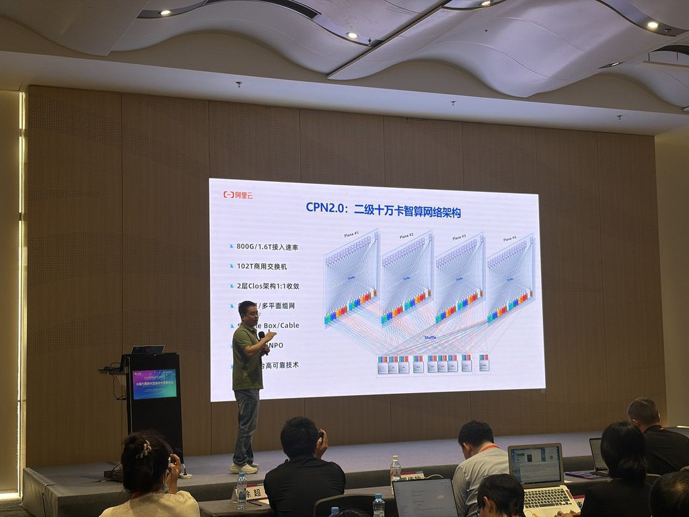
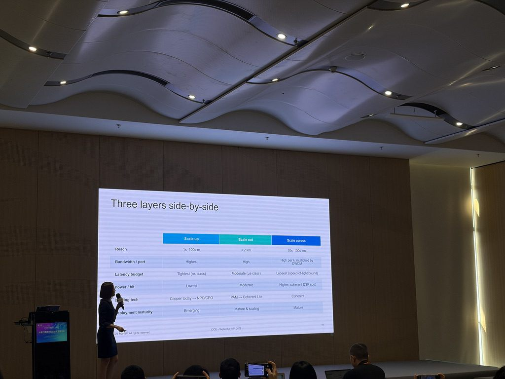
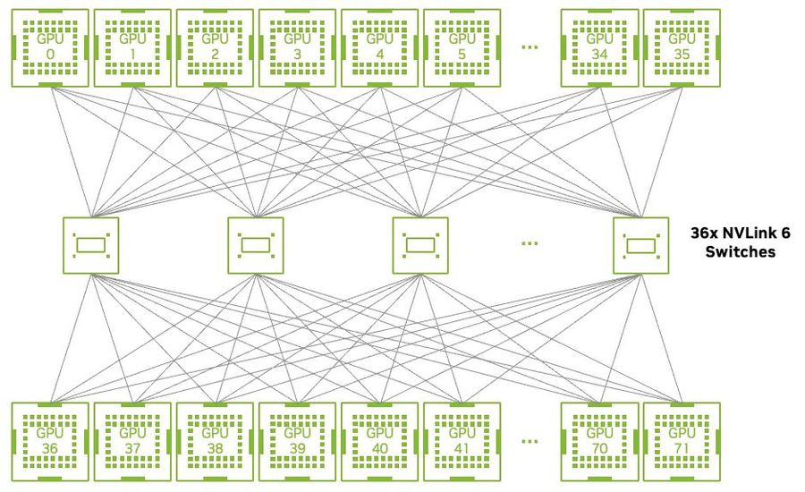
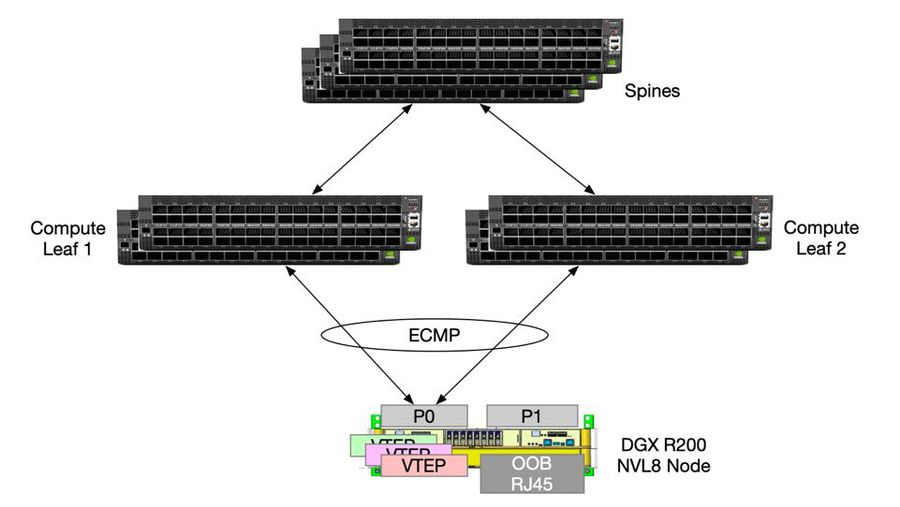
- Rajbhandari 等，《ZeRO: Memory Optimizations Toward Training Trillion Parameter Models》，2020，图 1 与第 3 节（每参数 16 字节的模型状态口径）。
- Meta，《The Llama 3 Herd of Models》，2024-07，第 3.3 节（16,000 颗 H100 与网络分层）。
- NVIDIA，《Inside the NVIDIA Rubin Platform: Six New Chips, One AI Supercomputer》技术博客，2026-01-05（ConnectX-9 每 GPU 1.6 Tb/s；NVLink 6 每 GPU 3.6 TB/s）。
- 徐超（阿里云 · 锐智云联联合实验室），《十万卡智算集群网络的设计与思考》，2026-09-10 CIOE 论坛转写，00:00 至 18:25 段。
- NVIDIA，Spectrum-X multiplane 技术说明，2026-08-24（两层网络连接超过 128K 端点）。
- NVIDIA，《DGX SuperPOD Reference Architecture (DGX H100) V11》，p.13、p.26 表 8。
- 一家外资券商，《Global Optical transceivers: Raising 1.6T and above shipment by 29%/61%/50% for 2026-28E》，2026-09-07，p.5 至 p.6（付费研究，不可转载）。
为什么机柜里用铜、机柜之间必须用光？
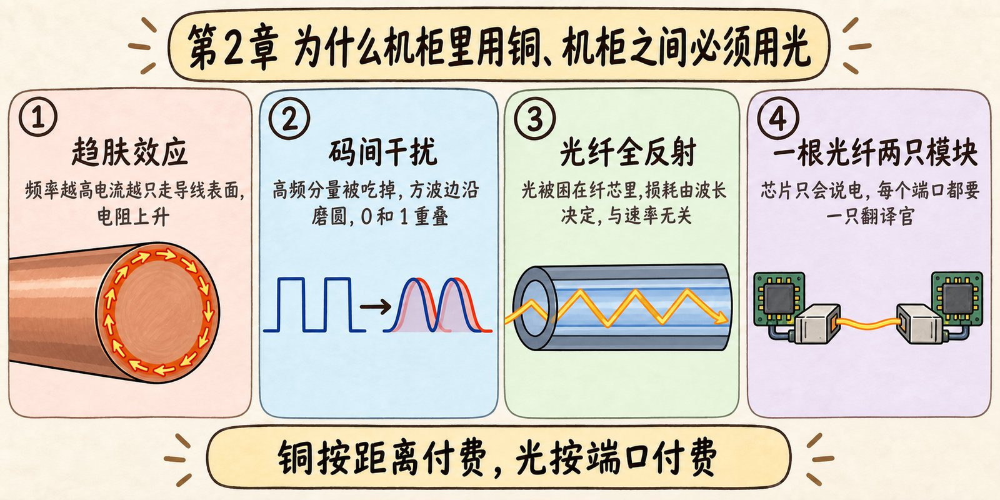
- GPU 之间每一步都要交换数据（第 1 章）
- 机柜内一两米，机柜间几十到几百米（第 1 章）
- 趋肤效应与介质损耗
- 码间干扰（信号为什么"糊"）
- 光纤的全反射与低损耗
- 端口：一根光纤两只模块
"光纤的优势是更快。"光在光纤里的速度约为真空光速的三分之二，电信号在铜线里也差不多。光纤真正的优势是损耗不随速率恶化，所以跑远了还能分清 0 和 1。
电信号为什么跑不远：两种损耗
数字信号是一串方波：高电平是 1，低电平是 0。一个方波不是单一频率，它由一个基频和许多高次谐波叠加而成，边沿越陡、速率越高，包含的高频分量越多。铜线对不同频率的损耗不一样，高频损耗更大，这是问题的根源。
第一种损耗叫趋肤效应（skin effect）。交变电流在导线里会产生变化的磁场，这个磁场在导线内部感应出反向的涡流，抵消中心的电流、加强表面的电流。频率越高，这种抵消越强，电流实际只在导线表面很薄的一层里流动，有效截面积缩小，电阻上升。趋肤深度与频率的平方根成反比，所以电阻随频率的平方根上升1。第二种叫介质损耗：电路板和电缆的绝缘材料在高频电场里反复极化，把一部分电能变成热，这一项随频率线性上升。两者叠加，损耗按分贝计大约和"频率的平方根到一次方"乘"距离"成正比。
后果是：速率翻倍，同样一段铜线上的损耗大约增加一半到一倍，能传清楚的距离就大致砍半。论坛上 Marvell 和立讯给的口径一致：每路信号 100G 时无源铜线约 2 米，200G 时约 1 米，400G 时更短23。"每路信号"在第 3 章会叫"每车道"。
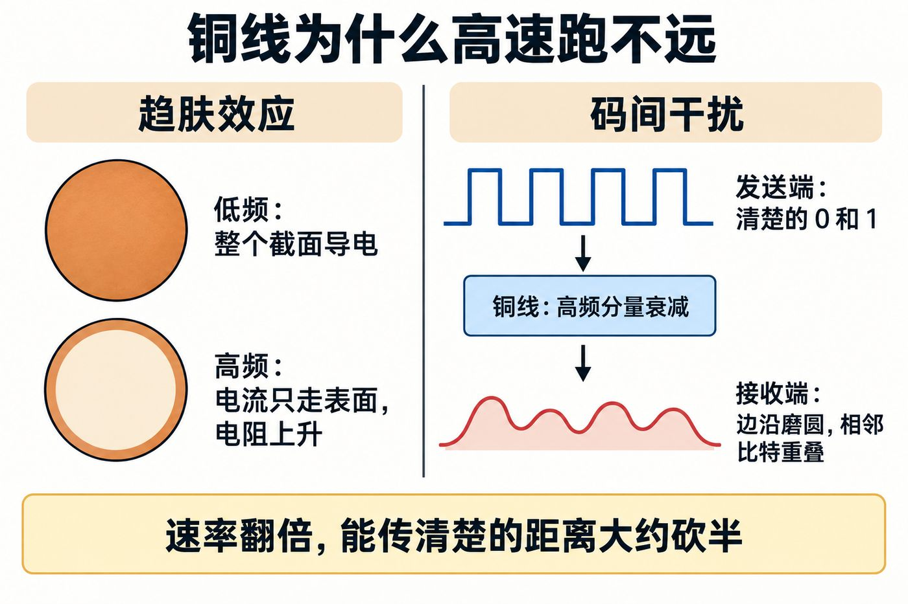
"糊"是什么：码间干扰
高频分量衰减得比低频多，方波的边沿就被磨圆，一个比特的能量拖进了下一个比特的时间窗，相邻的 0 和 1 互相重叠，这叫码间干扰（ISI，Inter-Symbol Interference）。接收端看到的不再是清楚的高低电平，而是一团混在一起的波形，分不清哪个是 0、哪个是 1。工程上用"眼图"来看这件事：把很多比特叠在一起画，中间空的那块"眼睛"越大越好；码间干扰让眼睛闭上。
用大白话说：隔着一堵厚墙喊话，慢慢说还能听清，越说越快就越听不清，因为墙把尖锐的辅音吃掉了，只剩下拖长的元音。这就是第 4 章 DSP 存在的理由：它要在接收端把被磨圆的边沿算回来。
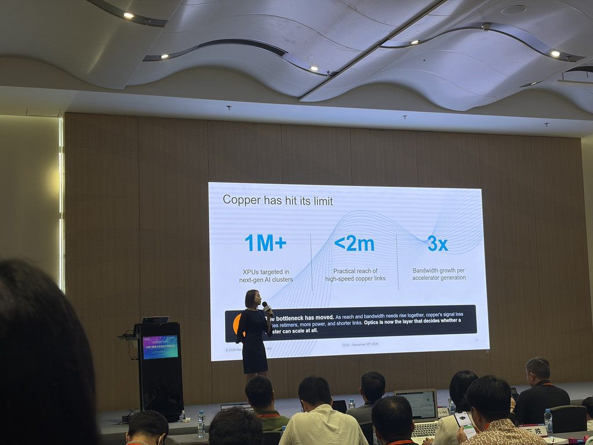
光为什么能
光纤是一根玻璃丝，芯（纤芯）的折射率比外层（包层）略高。光从芯里以小角度射向边界时，因为折射率差会发生全反射，一点都漏不出去，于是被困在芯里一路向前。光的损耗来自玻璃本身的散射和吸收，通信用的石英光纤在 1,310 纳米和 1,550 纳米两个窗口损耗最低，每公里只有零点几分贝4。
关键在于：光纤的损耗由波长决定，不由数据速率决定。把速率从 100G 提到 200G，铜线的损耗会跟着涨，光纤的损耗几乎不变。光信号也不受周围电磁环境的干扰，不会像并排的铜线那样互相串扰。所以同样一段话，用光传，跑几十米、几百米甚至几公里，到了对面还是清楚的。
一根光纤，两只翻译官
芯片不会发光，也听不懂光。GPU、网卡、交换机里的一切都是电信号。要用光纤，就必须在每一根光纤的两头各放一个翻译官：这头把电变成光，那头把光变回电。这个动作叫光电转换，做这个动作的盒子就是光模块。
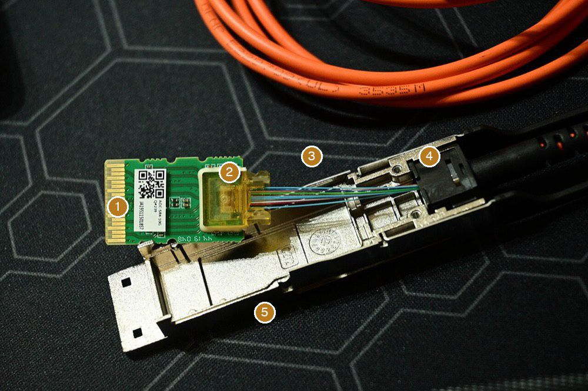
所以光和铜的成本结构不同。铜线本身便宜，贵在距离和速率：越远越贵，越快越贵，到一定程度就传不了。光纤本身也便宜，几乎不随距离变；贵的是两头的翻译官，每一个端口都要买一只。把两条成本曲线画在一起有一个交叉点：短于它铜便宜，长于它光便宜。今天这个交叉点在一两米附近，所以机柜里用铜，机柜外用光。
铜线的损耗随频率上升（趋肤效应加介质损耗），速率翻倍可达距离砍半，高频分量衰减导致码间干扰；光纤的损耗由波长决定，与速率解耦。芯片只会说电，所以每根光纤两头各要一只光模块。铜按距离付费，光按端口付费。
说话的人（GPU）越说越快，隔着墙能听清的距离越来越短；换成光纤就像换成一根隔音的传声管，说多快都不糊。但传声管两头必须各站一个翻译官。
"光进铜退"不是口号，是那个交叉点的位置。GPU 说话每快一代，交叉点就往左挪一格。但铜的厂商也在想办法把交叉点往右拽，第 17 章和第 20 章会看到他们怎么做。
再深一层：物理细节与推导（读不懂可跳过，不影响主线）
趋肤深度。 δ = √(ρ / (π f μ))，ρ 是电阻率，f 是频率，μ 是磁导率。铜在 1 GHz 时趋肤深度约 2 微米，在 50 GHz 时约 0.3 微米。导线截面里只有表面这一薄层在导电，交流电阻按 √f 上升。
损耗的数量级。 每车道 224G 的信号（PAM4 调制下奈奎斯特频率约 56 GHz），1.5 米无源铜缆的插入损耗约 40 dB，即功率只剩万分之一、电压幅度只剩百分之一5。光纤在 1,310 纳米窗口每公里约 0.3 dB，1,550 纳米约 0.2 dB4，一公里的损耗比 1.5 米铜缆小两个数量级。
全反射的条件。 光从折射率高的介质射向折射率低的介质，入射角大于临界角时全部反射。单模光纤纤芯直径约 9 微米，只允许一个传播模式，所以没有多模光纤里不同路径走不同时间造成的脉冲展宽；这也是为什么长距离用单模。
为什么铜还没死。 一米以内的距离上，铜线的功耗、成本和可靠性仍然碾压光：不需要激光器、不需要光电转换、坏了的概率低得多。NVL72 一个机柜里用了五千多根 NVLink 铜缆连 72 颗 GPU6。铜的问题从来不是"不行"，而是它的经济半径每代砍一半。
铜线为什么高速跑不远？说出两种损耗。
"糊"的物理名字是什么？怎么来的？
光纤的损耗由什么决定？为什么这是关键？
参考层：数字、来源与实物照片（首次学习可跳过）
论坛原话。 阿里云韩天："提升带宽最核心的手段其实就是提升速率，但是提升速率铜就撞到了趋肤效应的墙，这是金属的物理特性，不可避免。"光迅科技蒋波："能用铜的时候一定要用铜，铜实在用不了就用光，这是一个产业的共识。"27
距离等级的行业速查。 机柜内 GPU 之间用铜缆（无源 2 米内、有源 5 到 7 米），机柜到第一级交换机 500 米级单模，交换机之间 2 公里级，园区之间 10 公里级。第 3 章讲这些等级的名字8。
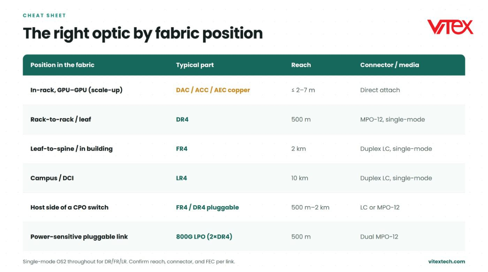
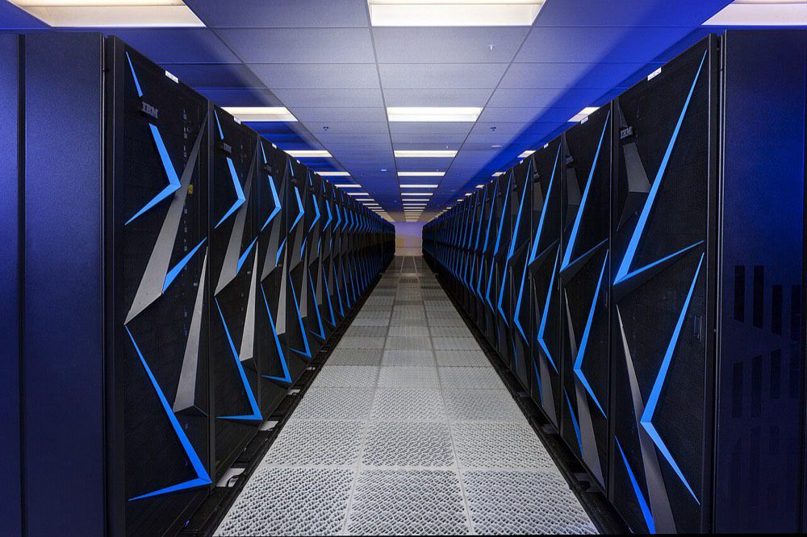
- Pozar，《Microwave Engineering》第 4 版，第 1.7 节（趋肤深度公式与铜的数值）；介质损耗见第 3.1 节。
- 韩天（阿里云），《阿里云 Scale-Up NPO 光互联分享》，2026-09-10 CIOE NPO Summit 转写。
- 彭小伟（立讯），《下一代 AI 光互联：NPO、CPO 与 XPO》，2026-09-10 CIOE 论坛转写，第 44 行（100G 约 2 米、200G 约 1 米）；Annie Liao（Marvell）同日口径一致。
- ITU-T G.652 单模光纤建议书，衰减典型值：1,310 nm ≤0.4 dB/km，1,550 nm ≤0.3 dB/km；商用光纤实测 0.2 至 0.35 dB/km。
- 《十分吸引》Vol.75《光与电的游戏》逐字稿，Kevin，约 38:43（1.5 米铜缆 40 dB、幅度剩 1%）。
- NVIDIA，DGX GB200 NVL72 用户指南（超过 5,000 根 NVLink 铜缆，聚合带宽 130 TB/s）。
- 蒋波（光迅科技），《光联全域算力，多元方案共启 AI 互连新征程》，2026-09-10 CIOE 论坛转写。
- Vitex Direct，《Co-Packaged Optics 2026 技术指南》，按位置选介质速查表。
800G、1.6T 这些名字在说什么，为什么不能一直加通道？
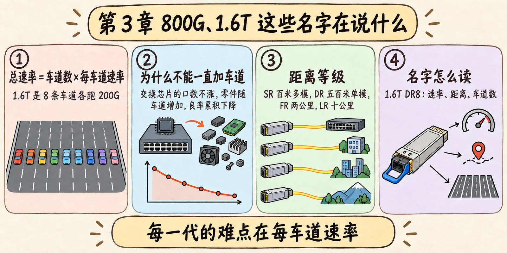
- 光模块是电光翻译官（第 2 章）
- 铜线速率翻倍，可达距离砍半（第 2 章）
- 车道（lane）与总速率
- 交换芯片的口数上限
- 距离等级 SR / DR / FR / LR
- 名字怎么读
"1.6T 比 800G 难，是因为通道翻倍了吧？"不是。两代的车道数可以一样多，难在每条车道要跑两倍快。为什么不干脆多加几条车道，是这一章真正要回答的问题。
一只模块里不止一条路
一只光模块里并排着 4 条或 8 条车道（lane）：每条车道是一路独立的电信号，各自变成一路光。总速率等于车道数乘每车道速率。光迅科技蒋波在论坛上说得直白："速率等于带宽乘以通道数，不管是光口也好，电口也好，都要遵循这样的一个数学题。"1
| 代际 | 怎么凑出来 | 每条车道 | 一句话状态（2026-09） |
|---|---|---|---|
| 400G | 8 × 50G 或 4 × 100G | 50G / 100G | 上一代，云厂商还在大量用 |
| 800G | 8 × 100G，新一代也有 4 × 200G | 100G / 200G | 当前主力 |
| 1.6T | 8 × 200G | 200G | 正在放量 |
| 3.2T | 8 × 400G 或 16 × 200G | 200G / 400G | 展会上的样品，调制格式未收敛 |
为什么不能一直加通道
既然总速率等于车道数乘每车道速率，为什么行业不靠多加车道来提速？三个原因，从交换机那头说起。
第一，交换芯片的口数几乎不涨。 交换芯片对外的每一路高速信号都要占芯片边缘的一段长度和封装上的一组引脚，芯片边长和引脚数受制造工艺限制，一代芯片能放的高速口数大致固定。博通最新一代交换芯片提供两种配置：1,024 条 100G 车道，或 512 条 200G 车道，总带宽都是 102.4T2。要让一颗芯片的总带宽翻倍，只能让每条车道翻倍。芯片这头车道速率翻倍了，插在它口上的模块就必须跟上。
第二，车道多一倍，零件多一倍。 每条车道各要一颗激光器、一颗探测器、一根光纤、一套放大电路和一段封装对准。16 条车道的模块比 8 条的体积大、功耗高、光纤和连接器多一倍，交换机前面板的密度撑不住。
第三，良率是累积的。 立讯彭小伟的原话："光模块的制造，它的良率是累积的，你不是说你 90% 综合起来是 90%，它是取一个累积的概念。"3每条车道每道工序都有自己的良率，最终良率是它们的乘积。四道 90% 相乘只剩 66%，通道越多、工序越多，能出厂的合格品越少。
所以行业选的路是：车道数尽量不动，把每条车道做快。这就把难题推到了两个零件上：发光的零件要闪得更快，收光和整形的零件要分辨得更细。第 4、5、6 章讲这两个零件。
距离等级：名字后面的字母
同样是 800G，跑 50 米和跑 10 公里的模块完全不同，差别在用什么光源、什么光纤。行业用一两个字母表示距离等级：
名字怎么读
把两块拼起来，产品名就能读了。1.6T DR8：总速率 1.6T，五百米级单模，8 条车道。800G SR8：总速率 800G，百米内多模，8 条车道。再看到 OSFP、QSFP-DD，那是外壳尺寸的规格名，决定插进什么笼位；1.6T 基本用 OSFP，因为散热更好4。
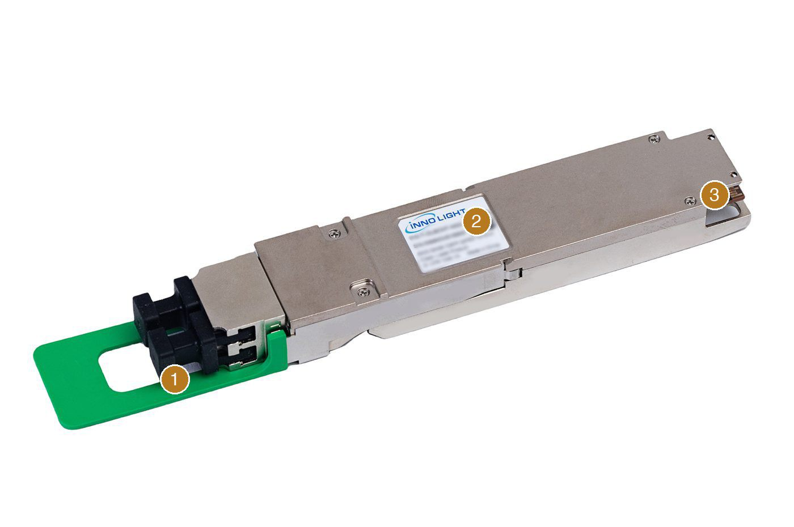
总速率等于车道数乘每车道速率。不能一直加车道，因为交换芯片的口数几乎不涨、零件随车道数线性增加、良率随工序数累积下降。所以每一代的难点是每车道速率。距离等级决定光源和光纤。
翻译官小组里 8 个人并排翻译。要让整组翻得更快，不能再加人，因为门口（交换芯片的口）站不下、每个人都要配一套设备、人越多出错的概率越高。只能让每个人说得更快。
展台上听到"1.6T 缺 200G EML"，现在能听懂前半句了：1.6T 需要每车道跑 200G。后半句"EML 是什么、为什么只有几家能做"，见第 6 章和第 13 章。
再深一层：物理细节与推导（读不懂可跳过，不影响主线）
每车道怎么跑出两倍速。 早期信号只有高低两个电平，一次变化传 1 比特（NRZ）；现在主流用四个电平，一次变化传 2 比特（PAM4），同样的符号速率跑出两倍数据。代价是四个电平之间的间距只有原来的三分之一，更容易被噪声混淆，所以需要更强的 DSP 纠错和更高的信噪比。400G 每车道之后用 PAM4、PAM6 还是更高阶，行业还没收敛；蒋波的判断是 PAM8 对信噪比要求太高，目前不现实1。
符号速率与频率。 每车道 200G PAM4 的符号速率约 112 GBaud，信号的主要频率分量到约 56 GHz。这就是第 2 章损耗计算的输入。
"慢而宽"的另一条路。 论坛上新易盛提到 MicroLED 方案：单通道只有几 Gb/s，用几百条通道并行凑出 1.6T，优点是不需要 DSP、能效极低，缺点是通道排列数量太多5。它绕开了"每车道提速"这条主线，目前处于早期，第 14 章再提。
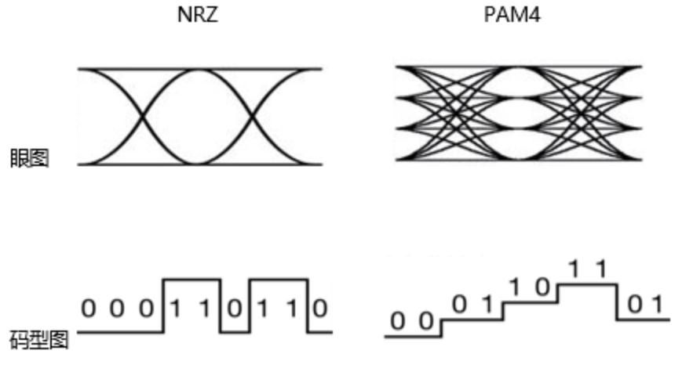
1.6T 是几条车道乘几？
为什么不能靠加车道提速？三个理由。
DR 和 SR 差在哪？
参考层：数字、来源与实物照片（首次学习可跳过）
别从距离表推出"最短的量最大"。 AI 集群里零到两米那段全是铜，没有光模块；量最大的是五百米级的 DR8 单模，SR 多模在萎缩。VCSEL 的份额数据目前没有任何机构单列，第 14 章说明6。
出货量口径。 TrendForce：800G 及以上（含 1.6T）光模块出货 2025 年 2,400 万只，2026 年近 6,300 万只，不是 800G 单档7。Cignal AI：2026 年 1.6T 模块出货预测 1,000 万只（4 月上调自 500 万以上）8。Dell'Oro：800G 端口三年内累计达 2,000 万个，400G 用了六七年；1.6T 一到两年内超 500 万端口，端口口径与模块口径不能直接比9。
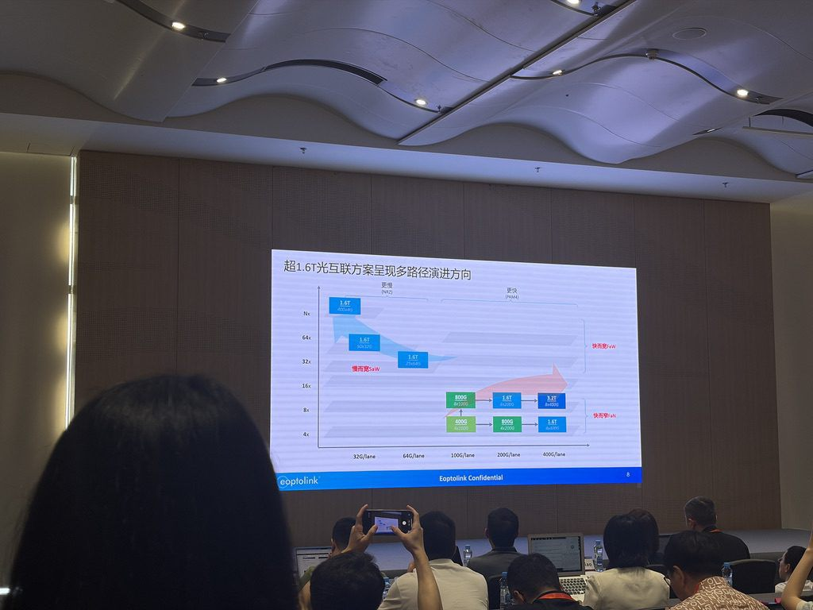
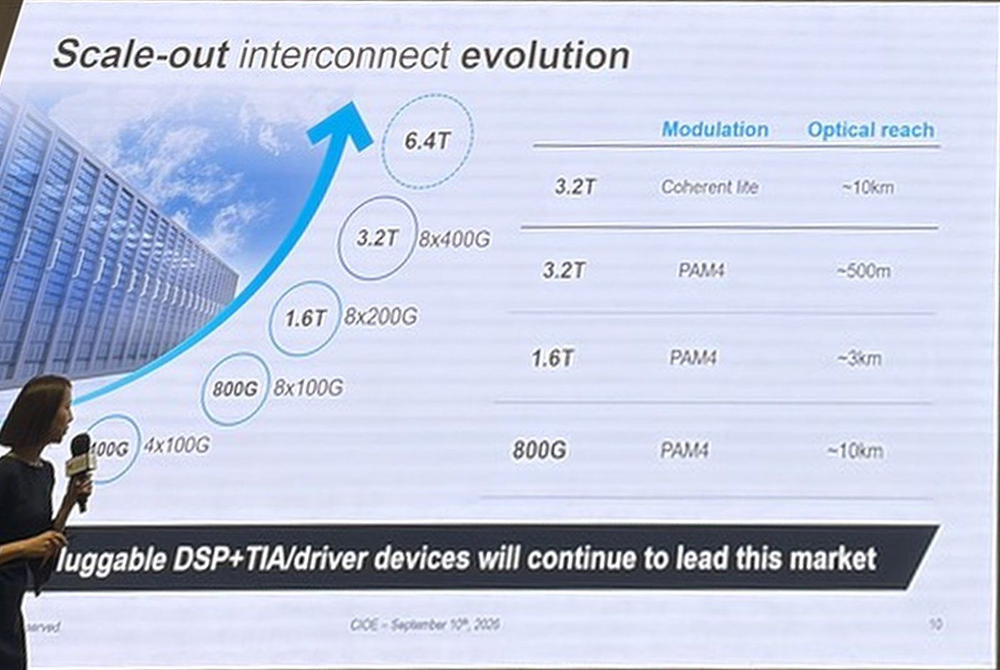
- 蒋波（光迅科技），《光联全域算力，多元方案共启 AI 互连新征程》，2026-09-10 CIOE 论坛转写（"速率等于带宽乘以通道数"；PAM8 判断）。
- Broadcom，《Broadcom Ships Tomahawk 6: World's First 102.4 Tbps Switch》，2025-06-03（1,024×100G 或 512×200G SerDes 两种配置）。
- 彭小伟（立讯），《下一代 AI 光互联：NPO、CPO 与 XPO》，2026-09-10 CIOE 论坛转写，第 128 行（良率累积）。
- 《十分吸引》Vol.75 逐字稿，Kevin，约 23 分（OSFP 散热更好，1.6T 基本用 OSFP）。
- 张金双（新易盛），《与光同行，释放 AI 算力潜能》，2026-09-10 CIOE 论坛转写（MicroLED"慢而宽"方案）。
- 本书调研稿 C_激光器.md 第 C-2 节（VCSEL 份额未查到的说明），2026-09-11。
- TrendForce，《AI Data Centers Ignite a Laser Shortage Wave…》，2025-12-08，https://www.trendforce.com/presscenter/news/20251208-12823.html。
- Cignal AI，《Datacom Optical Component Revenue Surpasses $19B in 2025》，2026-04-21，https://cignal.ai/2026/04/。
- Dell'Oro Group，《Data Center Networking in 2025–2026》，2025-12-17，https://www.delloro.com/2026-predictions-data-center-switch-frontend-ai-backed-networks/。
把翻译官拆开：发射链
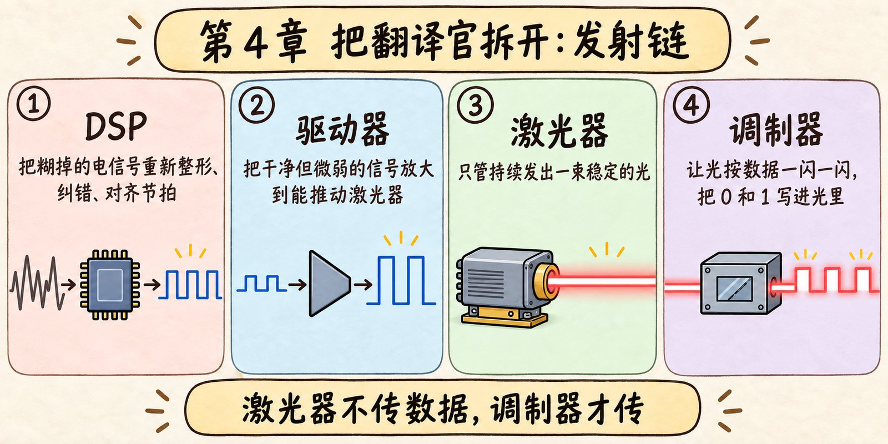
- 电信号跑几十厘米就会码间干扰（第 2 章）
- 每条车道要跑 200G（第 3 章）
- DSP：均衡与重定时
- 驱动器
- 激光器：受激辐射与谐振腔
- 调制器：电吸收
"光模块里负责把数据发出去的是激光器。"不是。激光器只管持续发出一束稳定的光，本身不带信息。真正把 0 和 1 写进光里的，是它旁边或它身上的调制器。
理解光模块最好的办法不是背零件名，而是跟着一份数据走一遍。数据离开交换芯片时是一串每车道 200G 的电信号，先经过几十厘米的电路板走线和一个插座，才到达光模块的电口。第 2 章讲过，这一路高频分量已经衰减、边沿已经磨圆。翻译官的第一件事，是把它算回来。
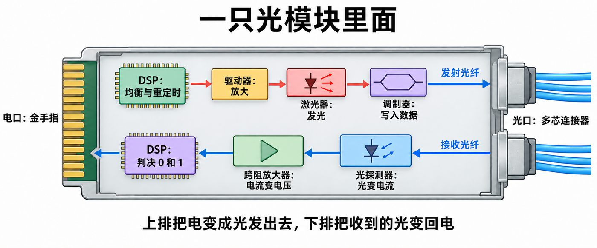
第一站：DSP 做的两件事
DSP（Digital Signal Processor，数字信号处理器；光模块里这一颗常叫 ODSP，O 是 optical）先用模数转换器把进来的模拟波形采样成数字，再做两件事。第一件叫均衡（equalization）：信道对高频分量衰减得多，DSP 就对高频分量补偿得多，相当于把第 2 章那堵墙的传递函数反过来算一遍，把磨圆的边沿重新竖起来。常用的算法是前馈均衡和判决反馈均衡，本质都是用前后几个符号的加权和来抵消码间干扰1。第二件叫重定时（retiming）：从信号里恢复出时钟，把每个符号重新对准节拍，消掉传输中积累的抖动。
这颗芯片为什么最难、最耗电，第 5 章和第 11 章展开。这里只记一点：每车道 224G 时，DSP 要在 55 GHz 以上的模拟带宽下工作，采样时钟的抖动要低于 100 飞秒1，所以要用 3 纳米这样的先进工艺做模拟混合信号设计，全球能做的团队屈指可数。
第二站：驱动器
DSP 输出的信号干净但微弱，推不动光器件。驱动器（driver）是一级高速放大电路，把信号放大到激光器或调制器需要的电压摆幅。不同的光器件要的摆幅不同：直接调制的激光器要电流摆幅，电吸收调制器要一两伏的电压摆幅，硅光的马赫曾德调制器（第 6 章讲）要更大的摆幅。所以驱动器和光器件是配对设计的，换一种光源就要换一种驱动器，这一点第 12 章会用到。
第三站：激光器为什么能发出"一种颜色"的光
普通灯泡发的光是各种波长的混合、各个方向乱射。通信要的光必须是单一波长、方向一致、能持续稳定输出，这是激光（laser）。它的原理有两步。第一步叫受激辐射：半导体材料里的电子被注入电流抬到高能级，当一个光子经过时，电子跳回低能级、放出一个和这个光子波长、相位、方向完全一样的新光子，一个变两个。第二步叫谐振腔：在发光材料两端放两面镜子，光子在两面镜子之间来回反射，每来回一次就被放大一次，只有波长正好能在腔里形成驻波的那一种颜色被反复放大，其余的被压掉。一面镜子留一点透光，放出去的就是激光2。
通信用的激光器是在半导体芯片上做出来的：发光材料是磷化铟或砷化镓体系的量子阱，镜子要么是芯片解理面，要么是刻在芯片里的光栅或多层反射镜。三种做法的区别是第 6 章的主题。激光器对温度敏感：温度升高，材料的能带间隙变小，发出的波长向长波漂移，大约每摄氏度漂 0.1 纳米3，所以不少高速模块在激光器旁边放一片半导体制冷片恒温，也有靠设计做到非制冷的产品4。
第四站：调制器怎么把数据写进光里
最简单的办法是直接调制：直接开关激光器的电流，电流大光就亮，电流小光就暗。速率低的时候这样够用；速率高了不行，因为改变电流会改变半导体里的载流子密度，进而改变折射率，让波长跟着抖动，这叫啁啾，会让脉冲在光纤里展宽2。所以高速模块用外调制：激光器只管恒定亮着，旁边另放一个器件负责"遮光"。
最常见的外调制器是电吸收调制器（EAM）：一段半导体波导，加反向电压时它的吸收边向长波移动，正好把激光器的波长吃掉，光就暗；不加电压时光通过，就亮。电压按数据变化，光强就按数据变化。这个效应叫量子限制斯塔克效应，第 6 章的 EML 就是把激光器和这样一段电吸收调制器长在同一块磷化铟芯片上3。硅光用的是另一种外调制器，原理留到第 6 章。
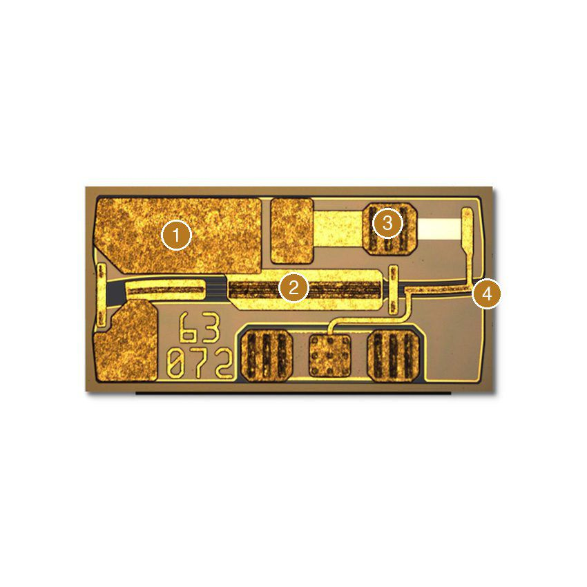
最后，透镜和耦合结构把光束收拢，对准一根纤芯只有 9 微米的单模光纤。这一步看似不起眼，速率越高对准要求越苛刻，第 5 章讲它为什么决定良率。
发射链四站：DSP 做均衡和重定时，驱动器放大，激光器靠受激辐射和谐振腔发出单一波长的稳定光，调制器靠电吸收把数据写进光里。激光器不传数据，调制器才传。
翻译官听到一段含糊的话，先在脑子里把它听清（DSP），清清嗓子提高音量（驱动器），然后开口发声（激光器）、把话说出来（调制器）。
这四站里，能做大脑的公司屈指可数，能做最快的嘴的只有几家。谁是它们、为什么少、现在过得怎么样，第 11 章和第 13 章逐个讲。
再深一层：物理细节与推导（读不懂可跳过，不影响主线）
均衡的数学。 信道可以近似为一个线性时不变系统，输出等于输入与信道冲激响应的卷积。前馈均衡（FFE）用一组抽头对当前和相邻符号加权求和，逼近信道响应的逆；判决反馈均衡（DFE）用已经判决出的前几个符号去减掉它们拖进当前符号的尾巴。更强的算法（最大似然序列检测）在整个序列上找最可能的比特组合。均衡做得越强，功耗越高，这是 DSP 功耗随速率暴涨的根源1。
为什么误码率是黄金指标。 接收端最终把每个符号判成 0 或 1，判错的比例叫误码率（BER）。以太网标准要求在前向纠错之前误码率不高于约 2.4×10⁻⁴，纠错后低于 10⁻¹³ 量级。DSP 的全部工作可以归结为一句话：把误码率压到标准以下，用尽量少的功耗。
受激辐射的三个条件。 粒子数反转（高能级电子比低能级多，靠注入电流实现）、谐振腔提供正反馈、增益大于损耗。半导体激光器在阈值电流以上才起振，阈值以下只是普通发光二极管。
量子限制斯塔克效应。 量子阱里的电子和空穴被限制在几纳米厚的层内，加电场后能带倾斜，有效带隙变小，吸收边向长波移动。EML 的设计核心是激光波长和调制段吸收边之间的"失谐量"：失谐小则消光比高但插损大，失谐大则相反，而且两者随温度漂移的速度不同（激光约 0.1 nm/°C，吸收边约 0.5 nm/°C），所以宽温工作是 EML 的难点3。
DSP 做哪两件事？
激光为什么是单一波长？
高速为什么不用直接调制？
参考层：数字、来源与实物照片（首次学习可跳过）
功耗账。 一只 800G 可插拔模块整机功耗约 16 W，1.6T 逼近 25 W，其中 DSP 约占一半（Vol.75 口径）。注意厂商公布的"800G 模块小于 13 W、1.6T 小于 23 W"是模块整机功耗，不是 DSP 芯片功耗，网上流传的"DSP 吃 6 到 8 瓦"找不到一手出处56。
MCU 与 TEC。 模块里还有一颗微控制器当管家，实时上报温度、光功率、偏置电流；半导体制冷片叫 TEC。这两样不进正文，展台上会听到。
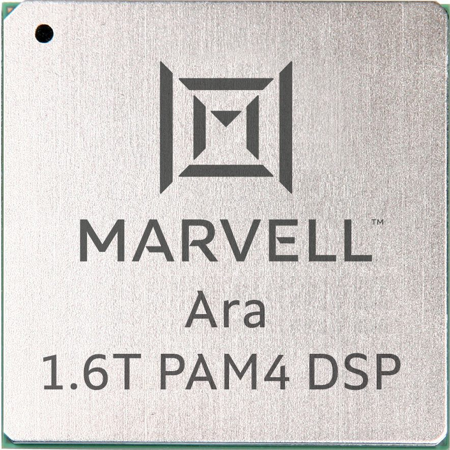
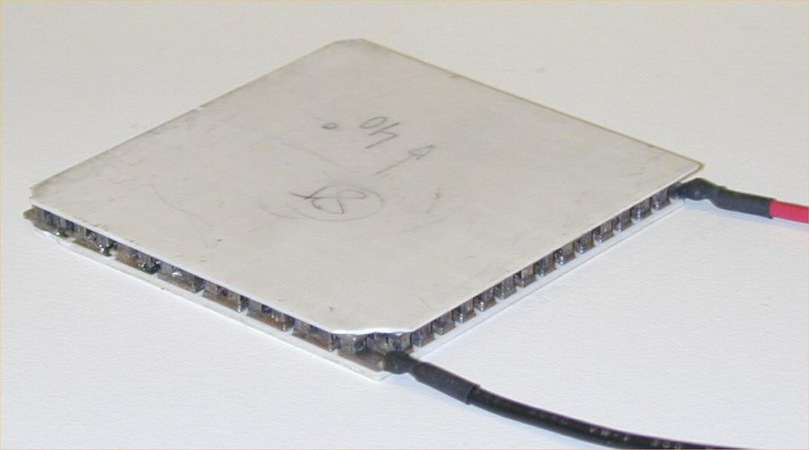
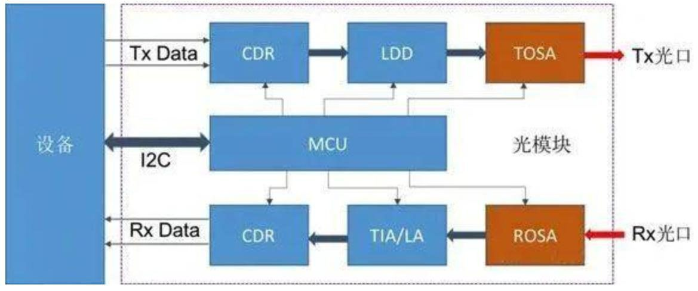
- 《十分吸引》Vol.75 逐字稿，Kevin，约 39:52 至 41:00（FFE、DFE、MLSD 与误码率）及约 53:16（55 GHz 模拟前端、100 飞秒抖动、3 纳米工艺）。
- Agrawal，《Fiber-Optic Communication Systems》第 4 版，第 3 章（半导体激光器原理）与第 3.5 节（直接调制的啁啾）。
- 三菱电机，ADVANCE Vol.184《Wider-temperature-range CWDM 100Gbps EML Chip for Data Centers》，2023-12，p.7 至 p.8，图 1 至图 3（EML 结构、量子限制斯塔克效应、失谐量与温漂系数）。
- Coherent，《56GBd Uncooled FR EML Chip on Carrier》规格书（非制冷 EML 的存在），https://www.coherent.com/resources/datasheet/networking/56gbd-uncooled-fr-eml-chip-on-carrier-ds.pdf。
- Broadcom，《Broadcom Extends 200G/lane DSP PHY Leadership…》，2025-03-25（Sian3 使 800G 模块小于 13 W、1.6T 小于 23 W，模块级口径）。
- 本书调研稿 B_DSP与放大器.md 第 2 节（"DSP 吃 6 到 8 瓦"无一手出处的说明），2026-09-11。
接收链，以及哪块最贵、最耗电、最决定良率
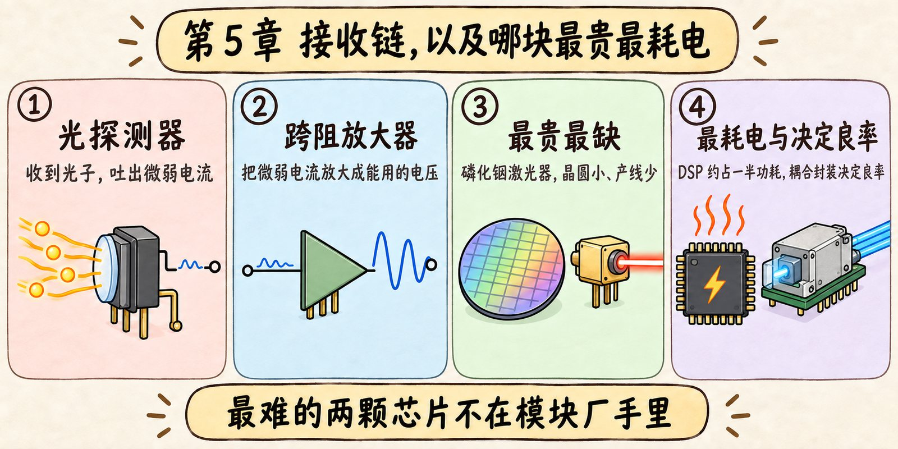
- 发射链四站（第 4 章）
- 单模光纤纤芯只有 9 微米（第 2 章）
- 光电探测器：光电效应
- 跨阻放大器：电流变电压
- 耦合与封装：微米级对准
- 瓶颈部件：激光器与 DSP
"光模块厂就是把零件装起来，没什么技术含量。"装起来这件事，在低速时代确实不难；到今天的速率，把光对准一根 9 微米的芯，误差要在亚微米级，良率就是靠这一步挣的。但最上游的两颗芯片，确实不在模块厂手里。这两句都对。
接收链：三站
光电探测器（PD，photodetector）是一个反向偏置的半导体二极管，材料的带隙比光子能量小：光子进来把一个电子从价带激发到导带，产生一对电子和空穴，被电场扫向两极，形成电流。每个光子最多产生一个电子，所以电流和光功率成正比1。跑了几百米之后到达的光只有几十到几百微瓦，产生的电流只有几十微安，后面的电路认不出来。
所以紧跟着要有一级跨阻放大器（TIA，Transimpedance Amplifier）：它的输入是电流、输出是电压，增益的单位是欧姆，一个几千欧的跨阻能把几十微安变成几十毫伏。TIA 决定了接收端的灵敏度：它自己的噪声电流有多小，就能分辨多弱的光信号，而噪声是一个不能用算法补回来的物理量2。放大后的信号进入 DSP，被重新采样、均衡，判决出每一位是 0 还是 1，交还给交换芯片。至此"电、光、电"一个来回走完。
耦合与封装：良率在哪里
发射端要把激光器发出的光对准光纤的芯，接收端要把光纤出来的光对准探测器的感光面。单模光纤的芯只有 9 微米，激光器的出光模场只有一两微米，两者之间要靠透镜放大匹配；对准误差每偏离一微米，耦合进去的光功率就掉一大截。速率越高，链路允许的光功率损失越少，对准容差越小。这道工序用主动对准设备做：一边通着光，一边挪动位置找耦合效率最大点，然后用胶或激光焊固定3。
一只模块有 8 条车道，每条都要对准；每道工序的良率相乘才是最终良率。立讯彭小伟的原话："光模块的制造，它的良率是累积的。比如有四个 90% 乘起来才是它的最终良率。"4四道 90% 是 66%，八道是 43%。良率高一个百分点，成本就低一截，这是模块厂真正的护城河，也是第 18 章耦合设备和测试设备的生意所在。
哪块最贵、最缺、最耗电
一只 800G 模块的物料成本里，光芯片和光组件合起来约占一半，DSP 单个约占两到三成，是最贵的单一元件5。缺货时最先缺的是激光器，这一点第 13 章有三个独立来源印证。
接收链三站：探测器靠光电效应把光变电流，跨阻放大器把电流变电压并决定灵敏度，DSP 判决。模块的价值在系统集成加亚微米级耦合封装，良率累积；但最难的两颗芯片（激光器、DSP）不在模块厂手里。
耳朵（探测器）听到很轻的声音，助听器（跨阻放大器）放大，大脑（DSP）听懂每个字。翻译官的价值是整个人配合得好、失误少，但他的大脑和嘴是别人给的。
Vol.75 里 Kevin 的比方：模块厂像戴尔和联想，做整机集成，大脑买博通和 Marvell 的，嘴买 Lumentum 和 Coherent 的。他的总结是"中国赢下了封装制造的面，还没有赢下芯片的点"6。第 9 章从这句话开始。
再深一层：物理细节与推导（读不懂可跳过，不影响主线）
探测器的响应度与带宽。 响应度等于每瓦光功率产生的电流，理论上限约 1 安每瓦（1,310 纳米）。带宽受载流子渡越时间和结电容限制，200G 每车道的探测器要做到 50 GHz 以上，就得把吸收层做薄、感光面做小，这又让对准更难。
TIA 的噪声。 输入参考噪声电流密度典型在每根号赫兹几皮安量级，带宽越宽积分噪声越大。灵敏度定义为达到目标误码率所需的最小平均光功率，每提高 3 dB 灵敏度，链路预算就多 3 dB，可以多传一段距离或多容忍一点耦合损失。
光功率预算。 发端出纤功率减去接收灵敏度就是这条链路能承受的总损耗，要分给光纤、连接器、耦合、老化余量。速率越高灵敏度越差，预算越紧，每一道耦合损失都更值钱，这就是"速率越高封装越重要"的定量含义。
接收链三站是什么？各做什么？
为什么良率是"累积"的？
一只模块里最贵最缺的是什么？最耗电的是什么？
参考层：数字、来源与实物照片（首次学习可跳过）
功耗的另一半。 数据中心的电费只有约一半用于设备本身，另一半用于散热，所以模块每多一瓦，实际代价接近两瓦（Vol.75）。
测试也是良率的一部分。 硅光晶圆要在切片前从正面打电、从另一面耦光做探测，挑出合格裸片；Teradyne 与 ficonTEC 2025 年 3 月发布了双面晶圆探测系统，FormFactor 与 Advantest 有单面方案。第 18 章展开3。
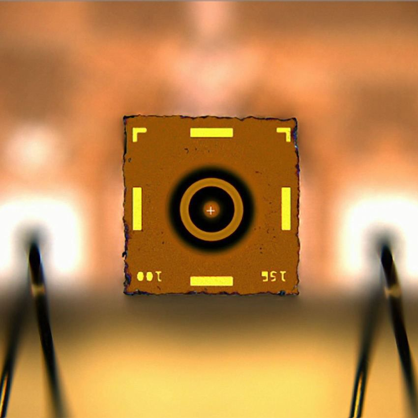
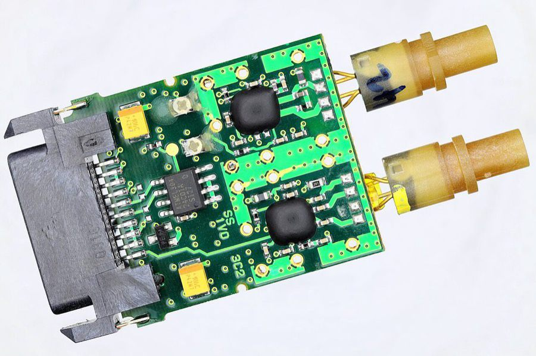
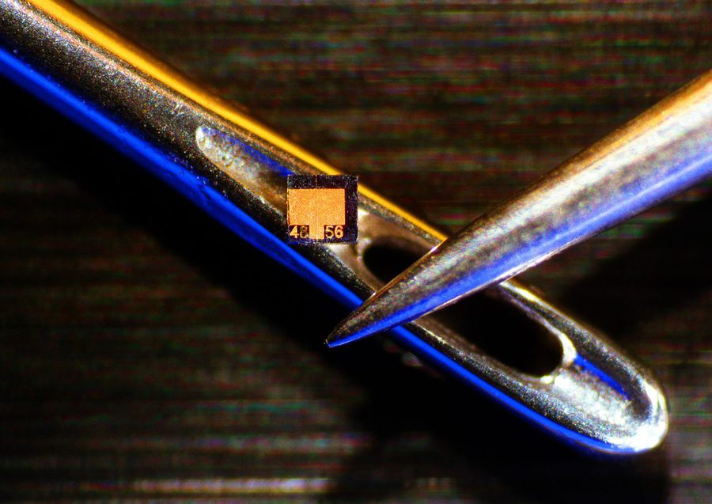
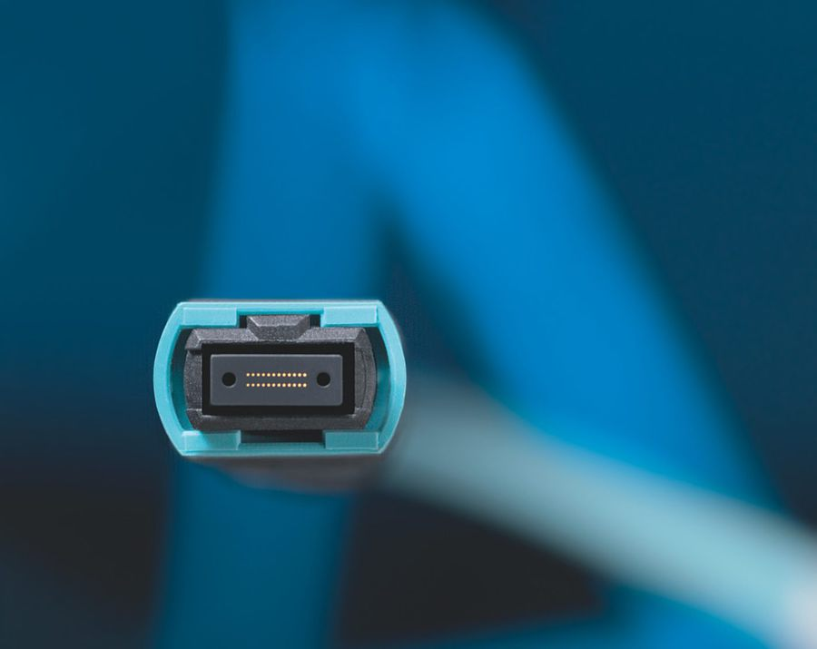
- Agrawal，《Fiber-Optic Communication Systems》第 4 版，第 4 章（光电探测器原理、响应度与带宽）。
- MaxLinear，《MaxLinear Announces Availability of Washington 200G TIA…》，2026-04-30（低噪声 TIA 的定位；噪声不可用算法补偿的表述见本书调研稿 B 第二节）。
- Teradyne，《Teradyne Announces Production System for Double-Sided Wafer Probe Test for Silicon Photonics》，2025-03-31；ASMPT，《ASMPT at OFC 2026》，2026-03（±0.2 微米贴装精度）。
- 彭小伟（立讯），《下一代 AI 光互联：NPO、CPO 与 XPO》，2026-09-10 CIOE 论坛转写，第 128 行。
- 《十分吸引》Vol.75 逐字稿，Kevin，约 50:32（800G 模块成本结构）。
- 《十分吸引》Vol.75 逐字稿，Kevin，约 48 分至 51 分（戴尔联想的比方；"面与点"）。
发光的三条路线：VCSEL、EML、硅光
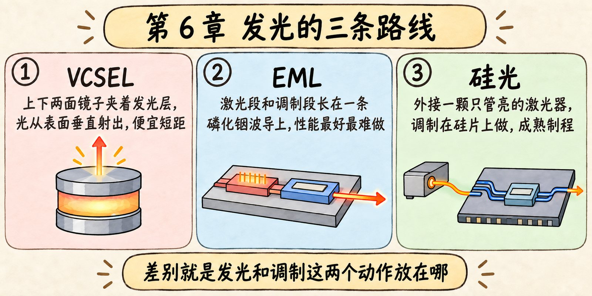
- 受激辐射与谐振腔，激光器要两面镜子（第 4 章）
- 外调制：激光器恒亮，调制器遮光（第 4 章）
- 距离等级 SR / DR / FR（第 3 章）
- VCSEL：垂直腔面发射
- EML：激光段与调制段共波导
- 硅光：硅上调制，激光外置
- 磷化铟与砷化镓
"硅光要是赢了，激光器厂就完了。"不对。硅是间接带隙材料，电子跃迁时要靠晶格振动帮忙，发光效率极低，做不了实用的激光器。硅光模块仍然要一颗磷化铟激光器，通常外置，也可以异质集成。变的是激光器的形态和颗数，不是有没有。
第 4 章说了激光器要两面镜子和一段发光材料，调制器要一段"遮光"结构。三条路线的差别，就是这几样东西各自放在哪、用什么材料做。
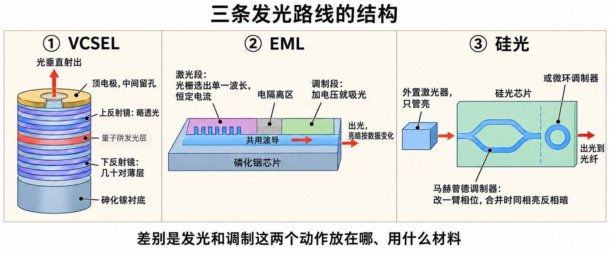
路线一：VCSEL，把镜子叠在上下
VCSEL（Vertical-Cavity Surface-Emitting Laser，垂直腔面发射激光器）把谐振腔竖着做：两面镜子不是芯片的两端，而是在衬底上一层一层长出来的多层反射镜，各几十对，每层四分之一波长厚，靠多层干涉把反射率做到 99% 以上。发光层夹在两镜之间，腔长只有一个波长量级。光从芯片表面垂直射出1。
好处是便宜和省电：一片晶圆上能同时做出成千上万颗，出光面就在表面，测试不用切片，光斑是圆的容易耦合；它用直接调制，不需要单独的调制器。代价是功率小、光谱不够纯，只能配多模光纤跑一百米以内；而且直接调制的带宽受限，传统的氧化孔径结构把带宽卡在约 27 GHz，也就是 100G 每车道的天花板，200G 要靠光刻孔径这类新结构2。所以 VCSEL 是 SR 短距模块的光源，也是手机人脸识别的光源。
路线二：EML，把激光段和调制段长在一条波导上
EML（Electro-absorption Modulated Laser，电吸收调制激光器）是横着做的：一条波导上串两段。前一段是分布反馈激光器（DFB）：不用两端的镜子，而是在波导下方刻一排周期性光栅，光栅对某一个波长产生分布式反射，只有这个波长能起振，所以光谱极纯、波长稳定。后一段是第 4 章讲的电吸收调制器，靠量子限制斯塔克效应遮光。两段长在同一块磷化铟（InP）芯片上，中间留一段电隔离区3。
它是单模中长距的黄金标准：光谱纯所以能跑两公里到十公里，调制段短所以电容小、带宽高，200G 每车道靠它最先量产。难点也在这里：两段要共用同一套量子阱材料，靠"激光波长与调制段吸收边的失谐量"这一个参数在宽温区里同时平衡消光比和输出功率；激光段要埋入式结构以耐高温，调制段要窄高台结构以压小电容，两种结构要在一片晶圆上做出来3。更根本的约束是材料：磷化铟晶圆主流还停在 3 英寸，硅是 12 英寸，产线少、设备交期长，第 13 章讲这个瓶颈。
路线三：硅光，把调制搬到硅片上，激光器外置
硅光（Silicon Photonics）反过来想：既然磷化铟难做，就只让它干一件事，发光。一颗只管恒定亮着的连续光激光器（CW laser）把光耦合进硅片，剩下的事全在硅片上做。硅的折射率高、硅与二氧化硅的折射率差大，能把光束缚在几百纳米宽的波导里拐弯；分束、合波、探测（用锗）都能做在同一片上，形成一颗光子集成电路。一颗激光器可以分给好几条车道用4。
硅光的调制器不能用电吸收，因为硅没有线性电光效应，只能靠载流子等离子色散：往波导里注入或抽走载流子，折射率跟着小幅变化，光的相位跟着变。相位变化本身看不见，所以要用马赫曾德结构把它变成明暗：光分成两臂，给一臂改相位，合并时同相相加就亮、反相相消就暗。或者用微环：一个小环靠近直波导，只有谐振波长的光会被抽进环里，加电压移动谐振波长，就等于开关这个波长的光4。载流子效应弱，所以马赫曾德要做得很长（毫米级），或者微环要做得很谐振、对温度极敏感；调制带宽也被载流子寿命卡住，华工正源罗传能在论坛上的口径是"硅光调制器带宽大约 70 GHz，做单波 400G 还要加补偿"5。
硅光走的是几十纳米的成熟 CMOS 制程，晶圆是 8 到 12 英寸，产能大、不依赖先进工艺。代价是多了一道把光从激光器导进硅片的耦合工序，角度歪一点损耗就大；调制器插损也比 EML 大。
三条路线放在一起
| VCSEL | EML | 硅光 | |
|---|---|---|---|
| 材料 | 砷化镓 | 磷化铟 | 硅片加一颗磷化铟激光器 |
| 镜子 | 上下多层反射镜，垂直腔 | 波导下的光栅，水平腔 | 激光器外置，硅上无腔 |
| 调制 | 直接调制电流 | 电吸收段 | 马赫曾德或微环，载流子效应 |
| 光纤与距离 | 多模，一百米内 | 单模，两到十公里 | 单模，五百米到两公里 |
| 制程 | 化合物半导体 | 化合物半导体，3 到 6 英寸 | CMOS 成熟制程，8 到 12 英寸 |
| 难点 | 200G 带宽 | 两段共波导、宽温、晶圆小 | 耦合损耗、调制带宽、插损 |
三条路线的差别是"发光"和"调制"这两个动作放在哪、用什么材料做：VCSEL 竖着做腔、直接调制、便宜短距；EML 激光段和调制段长在一条磷化铟波导上、性能最好最难做；硅光把调制搬到硅片、激光器外置、成熟制程。硅不发光，所以硅光仍要买磷化铟激光器。
翻译官的嘴有三种：VCSEL 是小声说、只能隔近处听；EML 是一张天生会说话的嘴，又亮又清楚，但这样的嘴很少；硅光是把"发声"和"说话"拆开，用一个普通的声带（外置激光器）配一个精巧的口型（硅片上的调制器）。
投资者看三条路线只需要盯一个问题：硅光占比上升的速度。硅光占比升，理论上缓解 EML 的缺口、抬高连续光激光器的需求；但份额下降不等于 EML 绝对量下降，总市场扩张时两者可以同时发生。每条路线上的公司、份额和现状，第 13、14、15 章逐个讲。
再深一层：物理细节与推导（读不懂可跳过，不影响主线）
分布式反射镜为什么要几十对。 单层界面的反射率只有百分之几，把高低折射率薄层交替叠起来、每层四分之一波长厚，各层反射的光同相叠加，反射率随对数指数上升，几十对可达 99.5% 以上。VCSEL 的腔增益只有几纳米厚的量子阱一次通过，所以镜子必须极高反射率，这是 VCSEL 外延生长厚度控制的极限活1。
为什么硅不发光。 硅的导带底和价带顶在动量空间里不在同一位置（间接带隙），电子跃迁发光必须同时有一个声子参与，概率极低，发光效率比磷化铟、砷化镓低几个数量级。所以硅光的光源要么外置，要么把磷化铟晶片键合到硅上（异质集成），Intel 的光 I/O 芯粒就是后者6。
载流子等离子色散。 自由载流子浓度变化 ΔN 引起折射率变化 Δn 约与 ΔN 成正比，1,550 纳米下每立方厘米 10¹⁷ 量级的载流子变化只带来 10⁻⁴ 量级的折射率变化。要让相位变 π，毫米级长度的波导才够，这就是马赫曾德调制器很长的原因；微环用谐振把相互作用长度"绕"出来，尺寸能缩到几十微米，但谐振波长随温度漂，要加热器锁定。
400G 每车道的争议。 Tower 与 Coherent 2026 年 3 月用量产级硅马赫曾德调制器做出了 400G 每车道的开眼图，Tower 的说法是"可以把硅再延长一代"；华工正源的口径是硅光 70 GHz 做 400G 要加补偿；薄膜铌酸锂器件已有 110 GHz 商用产品。三方都没错，争的是补偿的功耗和良率代价算谁的账57。第 15 章展开。
VCSEL 的镜子和 EML 的镜子分别是什么？
硅光为什么不能用电吸收调制，用什么？
硅光赢了激光器厂会怎样？
参考层：数字、来源与实物照片（首次学习可跳过）
实物对照。 下面四张分别是 VCSEL 阵列、EML 芯片与磷化铟晶圆、硅光晶圆、连续光激光器。
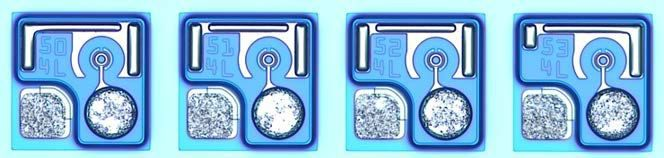
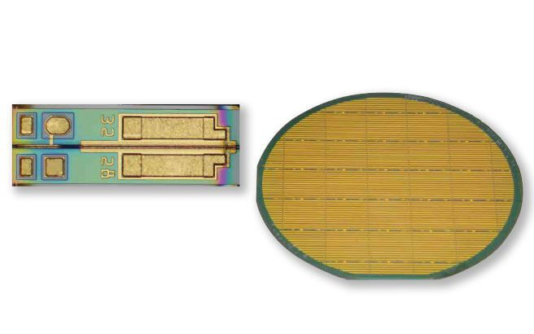
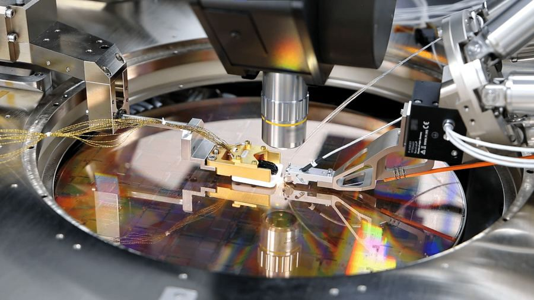
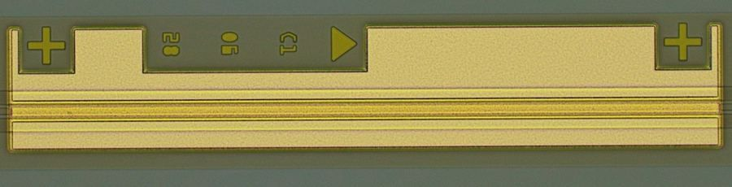
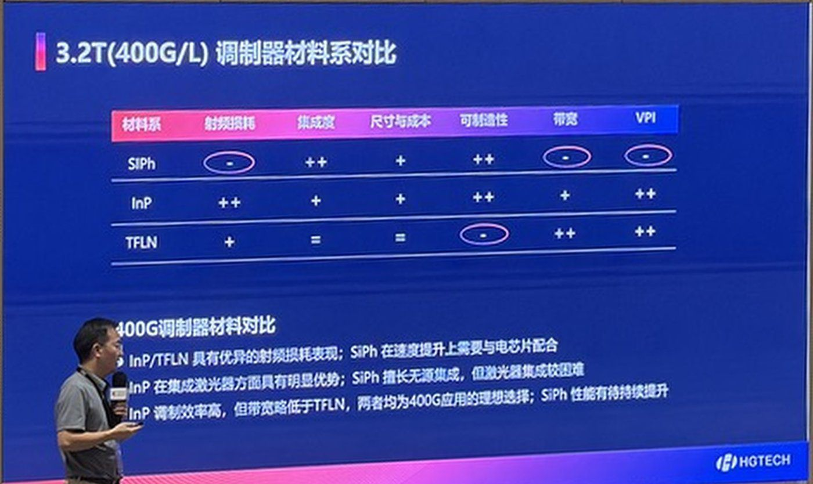
第四条路线：薄膜铌酸锂。 铌酸锂有线性电光效应，调制带宽很高，做成薄膜可做 3.2T 时代的调制器，商用器件已有 110 GHz；供应链和良率待验证。公司：HyperLight、光库科技、富士通。第 15 章提及。
- Wikimedia Commons，File:Simple_vcsel.svg 与 File:Real_vcsel.svg（作者 The Photon，CC BY-SA 3.0 + GFDL），层结构标注；Coldren 等，IEEE Photonics Technology Letters，1995。
- Coherent，《Significant Advancement in VCSEL Performance for Next-Gen AI Networks》，2024-03-25（氧化孔径约 27 GHz、光刻孔径约 45 GHz）。
- 三菱电机，ADVANCE Vol.184，2023-12，p.7 至 p.8；Li 等，《High-speed electro-absorption modulated laser》，Journal of Semiconductors 46(11)，2025-11-04，图 1。
- Doerr，《Silicon photonic integration in telecommunications》，Frontiers in Physics 3:37，2015（CC BY），图 10、图 11、图 14。
- 罗传能（华工正源），《新一代全光互联场景下的技术迭代与应用探讨》，2026-09-10 CIOE 论坛转写，录音 16:52 至 17:38。
- Intel Newsroom，《Intel Demonstrates First Fully Integrated Optical I/O Chiplet》，2024-06（片上集成激光）。
- Tower Semiconductor，《Tower and Coherent Demonstrate 400Gbps/lane…》，2026-03-23，https://towersemi.com/2026/03/23/03232026/。
为什么光越来越靠近芯片：一条解释二十年的线
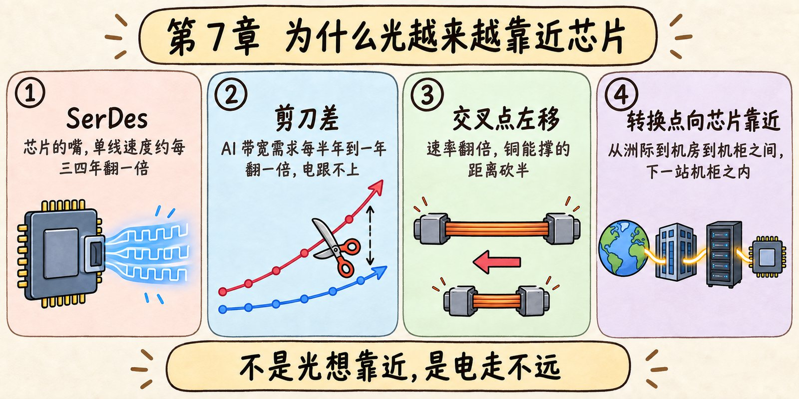
- 速率翻倍，铜能撑的距离砍半（第 2 章）
- 每车道速率是每一代的难点（第 3 章）
- DSP 在补偿信道损伤（第 4 章）
- SerDes
- 剪刀差
- 交叉点左移
- 转换点向芯片靠近
"光进铜退，是因为光技术更先进。"不是。是因为电跟不上：每车道速率翻倍，铜能传清楚的距离砍半，光只是被迫接管了铜守不住的那段。
芯片的嘴：SerDes
芯片内部是几百上千根并行的数据线，对外不能这么连，引脚不够。所以芯片边缘有一圈叫 SerDes（Serializer/Deserializer，串行器和解串器）的电路，把并行数据串成一条高速线发出去，收到时再拆开。USB、PCIe、以太网、NVLink 的底层都是它。SerDes 每条线的速度有一条经验曲线：10G、25G、56G、112G、224G，大约每三四年翻一倍，224G 从 2025 年起大规模商用1。这个节奏受模拟电路和封装的物理限制，很难加快。
而 AI 对带宽的需求是另一条曲线：模型规模和集群规模每半年到一年翻一倍，通信量跟着翻。两条线画在一起，就是一把张开的剪刀：
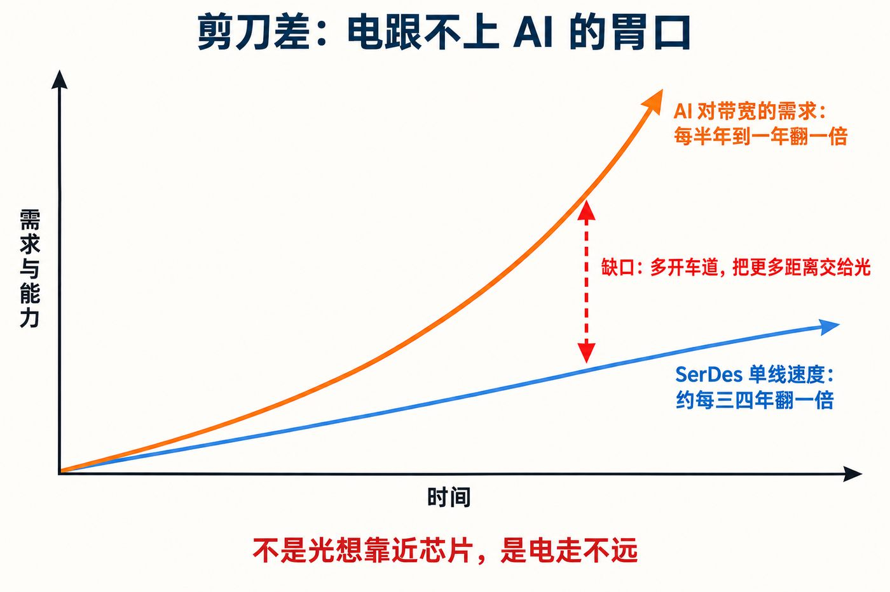
缺口怎么填：两条路，都指向同一个方向
一条路是多开车道：一条线不够就八条，八条不够就十六条。第 3 章讲过它的代价：交换芯片的口数不涨，零件随车道数线性增加，良率累积下降。所以这条路走不远。
另一条路是让光接管更多距离。每一代 SerDes 快一倍，铜能传清楚的距离砍半：每车道 100G 时铜能跑约两米，200G 约一米，400G 更短。第 2 章那个铜和光的交叉点每一代都往左挪一格。光迅科技蒋波在论坛上把这件事说透了："我不是要让光离芯片近，我的本质是要让电的链路越来越短。"2电走得越短，DSP 要补的码间干扰越少，功耗越低。所以光电转换点向芯片靠近，不是因为光想靠近，是因为电走不远。
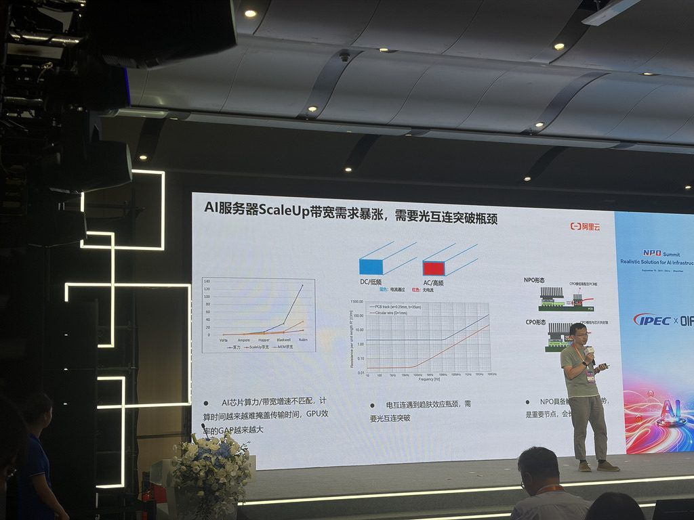
用这条线推未来
有了这句话，后面的事都能推出来。光电转换点会从交换机面板搬到芯片旁边，这是第 19 章的可插拔、LPO、NPO、CPO；铜的厂商会用中继芯片把交叉点往右拽，这是第 17 章和第 20 章的有源铜缆；机柜之内 GPU 之间的互联也会开始用光，这是第 20 章的 Scale-up 光化。这些不是三件事，是一件事的三个表现。
AI 对带宽的需求增速远快于 SerDes 的进步速度，所以铜能跑的距离一代比一代短，光电转换点被迫一步步靠近芯片。过去二十年从 10G 到 1.6T 是这句话的证据，LPO、NPO、CPO、光 I/O 是它的推论。
说话的人越说越快，铜线隔着能听清的距离越来越短，翻译官只好越搬越靠近说话的人：从大门口搬到走廊，再搬到办公桌旁。
Vol.75 里 Kevin 的版本："铜按距离付费，光按端口付费，每一代速率升级，交叉点都要往更短的距离挪一步。"3投资上，这意味着光模块的需求不是一次性风口，而是一条持续二十多年、还会继续的长期趋势；同时每一代的赢家都可能换人。
再深一层：物理细节与推导（读不懂可跳过，不影响主线）
代际时间线。 光模块主流代际：2016 年 100G，2019 年 400G，2023 年 800G，2025 年 1.6T。云计算时代代际周期约三四年，AI 时代快了约一倍1。
PAM4 属于这一章。 在 SerDes 符号速率受限时，让每个符号携带 2 比特而不是 1 比特，是电这一侧榨最后一点性能的办法；代价是对噪声更敏感，DSP 要更强。400G 每车道之后用 PAM4 还是更高阶调制，行业尚未收敛。
Scale-up 与 Scale-out 的准确定义。 按协议域和拓扑划分，不按距离划分：Scale-up 是 GPU 之间的紧耦合直连域（NVLink 一类内存语义协议），Scale-out 是通过交换机的以太网或 InfiniBand 网络。常见部署是 Scale-up 在机柜内、Scale-out 在机柜间，但跨机柜的 NVLink 域也是 Scale-up。本书第 1 章用"机柜内、机柜间"只是常见例子4。
SerDes 是什么？它的进步速度大约多快？
剪刀差的两条线分别是什么？缺口怎么填？
用一句话说清光为什么越来越靠近芯片。
参考层：数字、来源与实物照片（首次学习可跳过）
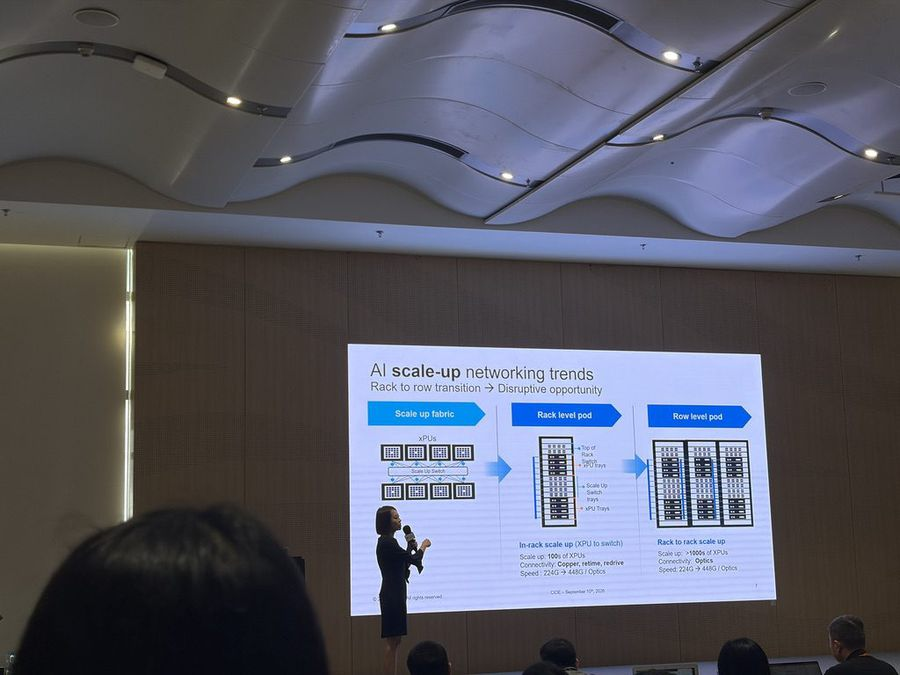
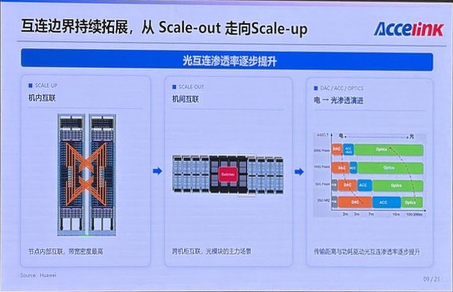
- 《十分吸引》Vol.75 逐字稿，Kevin，约 28 分至 29 分（SerDes 10G 到 224G 的代际与年份；模块代际 2016/2019/2023/2025）。
- 蒋波（光迅科技），《光联全域算力，多元方案共启 AI 互连新征程》，2026-09-10 CIOE 论坛转写（"本质是要让电的链路越来越短"）。
- 《十分吸引》Vol.75 逐字稿，Kevin，约 46:05（"铜按距离付费，光按端口付费，每一代速率升级，交叉点都要往更短的距离挪一步"）。
- 万昳（百度），《Scale-Up 与 Scale-Out：AI 集群光网络的双主线演进》，2026-09-10 CIOE 论坛转写；NVIDIA Vera Rubin POD 文档（八机柜 576 GPU 同一 NVLink 域）。
钱从哪来到哪去：定价权在哪
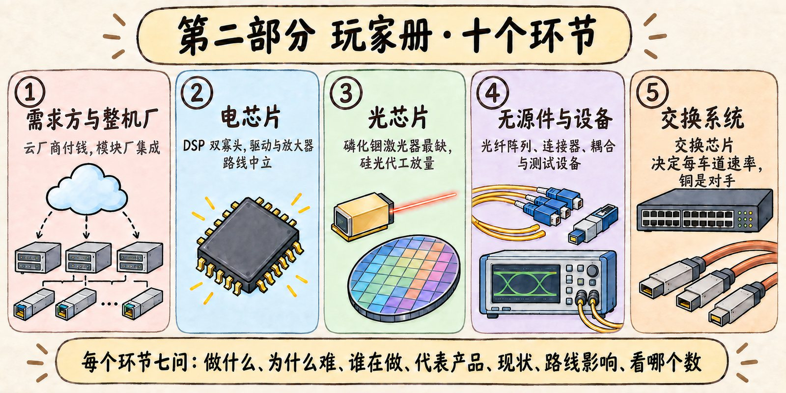
- 模块里最贵最缺是激光器，最耗电是 DSP，都不在模块厂手里（第 5 章）
- 三条光源路线（第 6 章）
- 资本开支到光模块的换算
- 定价权：缺货时谁能涨价
- 路线中立
- 交期与稼动率
"光模块股涨，是因为光模块厂技术领先。"更准确的说法是：模块厂是这条链上量最大、离需求最近、最先感知松紧的环节，所以弹性最大。技术上最难的两颗芯片在它的供应商手里。
钱从云厂商开始
链条的起点是云厂商的资本开支。2026 年前四大云厂商（Amazon、Alphabet、Microsoft、Meta）的资本开支指引合计约 7,250 亿美元，比 2025 年增七成多1。光模块只占其中很小一块：LightCounting 的口径是，卖给前五大云厂商的光器件占其资本开支的比例约 2.7%（2025）、3.1%（2026）、4.1%（2031）2。这个数字很重要，它解释了为什么云厂商在光模块上几乎不讲价也要拿到货：相对整个集群，光模块是最便宜的瓶颈。
读资本开支指引时要小心一件事：2026 年的上修里有相当一部分不是买了更多算力，而是内存和元件涨价。微软把日历年 1,900 亿美元里约 250 亿归因于元件涨价，亚马逊把 2,000 亿到 2,200 亿的上调归因于内存1。把这部分剔掉，才是真实的算力增量。
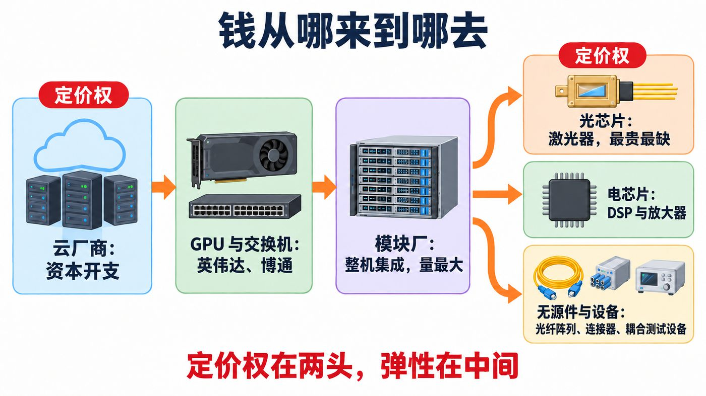
定价权怎么看
定价权是一个很简单的判据：缺货的时候，谁能涨价。这条链上，涨价的权力在两头。最上游的光芯片和电芯片，缺了没有替代：Lumentum 在 2026 年 5 月的电话会上说供需缺口"可能大于 30%"，8 月被问到有无改善时答"EML 大概没变化"3；博通 CEO 说激光器需求"远远超过供给"4。最下游的 GPU 是需求的源头。中间的模块厂在缺货时往往拿不到货，也不敢对客户涨太多，所以利润最薄；但它的量最大，景气时收入涨得最快。
毛利率把这件事写得很清楚：2026 年中，博通整体毛利率约 68%，Lumentum 非 GAAP 毛利率 50%，Coherent 40%，中际旭创模块业务 47%，光迅 26%5。同一条链上，越靠上游、越不可替代，毛利越厚。
路线中立与非中立
第 6 章讲了三条光源路线，第 19 章要讲四个封装选址。每一个分岔都有赢家和输家，但有些环节不管谁赢都要被买，这叫路线中立。激光器厂接近中立：EML 赢要买 EML，硅光赢要买连续光激光器；驱动器和放大器厂更中立：只要还有电光转换就必须有它们，一颗料号能通吃全部封装形态6。模块厂不中立：它在可插拔和 NPO 上是赢家，在纯 CPO 路线上是被绕过的一方。交换芯片厂也不中立：CPO 让它吃掉光引擎的价值。
中立不等于每 Tbps 赚一样的钱。同时卖 EML 和连续光激光器的公司，两者价格、良率、单模块颗数、缺口都不同：1.6T 硅光模块的激光器成本约 15 到 20 美元（4 颗 70 毫瓦连续光），1.6T EML 模块约 160 美元（8 颗 200G EML），差 8 到 10 倍7。
两个能问出来的数
判断松紧有两个不需要财务模型的数：交期（lead time，下单到交货要等几周）和稼动率（产线实际开工的比例）。交期拉长、稼动率满，就是紧。展台上问一句就有。还有一条领先关系值得记：LightCounting 明示，光模块销售转负领先云厂商资本开支转负约 6 个月2。模块厂"最先感知松紧"是有量化版本的。
钱从云厂商流向 GPU 和交换机，再流向模块厂，再流向上游芯片。光器件只占云资本开支约 3%，所以云厂商不讲价。定价权在两头，弹性在中间。看松紧看交期和稼动率。
翻译公司（模块厂）接的单最多，但它的翻译的大脑和嘴都是从两家供应商那里买的。生意好的时候翻译公司收入涨得最快，缺人的时候先涨价的却是供应商。
按石磊的"收益来源三分法"看：光芯片赚的是供给紧的定价权，电芯片赚的是双寡头的结构性利润，模块厂赚的是产业趋势的动量（量、稼动率、良率），设备厂赚的是扩产周期的先行动量，GPU 是需求源。每一种钱的脆弱点不一样，后面十章逐个说。
光器件占云厂商资本开支多大比例？这意味着什么？
定价权的判据是什么？在这条链的哪里？
哪些环节路线中立？哪些不中立？
参考层：数字、来源与实物照片（首次学习可跳过）
市场有多大（机构口径并列）。 LightCounting：2025 年光模块及相关产品销售额 268 亿美元、增 74%；2026 年以太网光模块增速 7 月上调到 73%，2031 年约 800 亿美元。TrendForce：AI 光模块 2025 年 165 亿美元、2026 年 260 亿美元。Cignal AI：2025 年数通光器件收入超 190 亿美元。一家外资券商：全球光模块市场 2026 到 2028 年 680、1,310、1,480 亿美元，且在 4 到 9 月间一次上修了 33% 到 115%。各家统计边界不同，不能互比8。
客户集中度。 LightCounting：前四大云厂商占当前 AI 光模块支出一半以上。新易盛张金双在论坛上：北美前五大云厂商带来的光模块销售占六成以上9。
成本结构。 800G 模块物料成本中光芯片加光组件约一半、DSP 约两到三成（Vol.75）。SemiAnalysis：网络约占 GB300 集群总成本 15%（三层），光模块约占网络成本 60%（付费文章）。
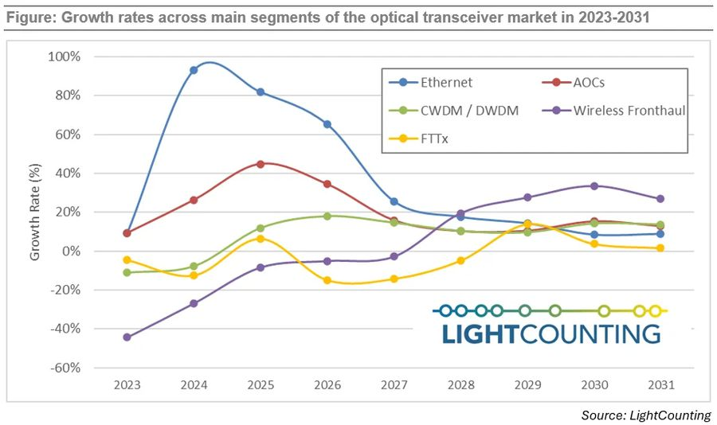
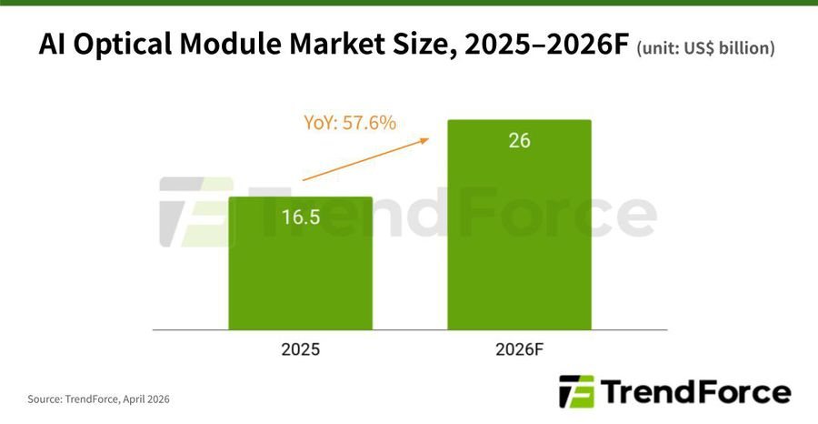
- 各公司 2026 年二季度财报与电话会（经 uncoveralpha、CNBC 汇总；微软 FY2026 Q3/Q4 电话会 2026-04-29、2026-07-29；亚马逊 2026Q2 电话会）。二手汇总，建议回查 10-Q。
- LightCounting，《The industry supply chain remains red hot…》，July 2026 Cloud Data Center Optics，2026-07（原页 403，经 IEEE ComSoc 与搜索摘要转引；光器件占资本开支比例；"转负领先约 6 个月"）。
- Lumentum，Q3 FY2026 电话会 2026-05-05 与 Q4 FY2026 电话会 2026-08-11（Motley Fool 转录）。
- Broadcom，Q3 FY2026 电话会，2026-09-02（Motley Fool 转录）。
- Broadcom 与 Lumentum、Coherent 2026 年中财报；中际旭创 2026 年半年报；光迅科技 2026 年半年度报告摘要，2026-08-19。
- MaxLinear，《Washington 200G TIA》新闻稿，2026-04-30（一颗料号支持全重定时、半重定时、线性接口、NPO、XPO、CPO）。
- 一家外资券商，《Global Optical transceivers》，2026-09-07，p.5（付费研究，不可转载）。
- LightCounting 2026-06 季度更新；TrendForce 2026-04-20；Cignal AI 2026-04-21；外资券商 2026-09-07 p.3、p.7。
- 张金双（新易盛），《与光同行，释放 AI 算力潜能》，2026-09-10 CIOE 论坛转写。
环节一：光模块整机厂
- 模块的价值在集成与耦合封装，最难的芯片不在模块厂手里（第 5 章）
- 定价权在两头，弹性在中间（第 8 章）
- 整机厂的增值点
- 规模与良率的壁垒
- 份额的两种口径
- FCC 风险
做什么
整机厂把上游的光芯片（EML、连续光激光器、硅光芯片）、电芯片（DSP 或线性驱动、放大器、微控制器）、光学件（透镜、光纤阵列）、高阶电路板和金属壳组装成一只符合标准外形的可插拔模块，交给交换机厂、服务器厂或云厂商自采。核心增值不在焊接，在耦合对准、校准、全温测试、良率与一致性。券商反复强调中际旭创的竞争力是新产品导入团队把研发和早期量产打通，以及"同一套设备兼容多种模块产线"的标准化工艺1。所以这是"规模加良率加供应链调度"的生意，不是"技术专利"的生意。
为什么难
物理瓶颈在上游，传导到整机厂：拿不到激光器就没有产能，Coherent 明说磷化铟产能是它的首要约束2。1.6T 当下被点名的另一个瓶颈是电路板：1.6T 模块用的高阶板年内涨价三成以上，供应商称即使大幅扩产，2027 年也只能满足需求的六到七成3。良率是时间换来的壁垒：券商测算中际旭创的产能与产量约为第二名的 1.5 倍，把"高产量下的良率经验"列为 1.6T 竞争有限的主因4。资本开支强度也高：券商预计旭创 2026 年资本开支增两倍半，产能从 2025 年 2,800 万只扩到 2028 年 1.2 亿只1。
谁在做
| 公司 | 代码 | 份额或规模（口径与日期） | 级别 |
|---|---|---|---|
| 中际旭创 Innolight | 300308.SZ | 全球第一。按收入份额 21.2%（2025，LightCounting 加 CIC 口径）；按出货量连续三年第一、23.4%（2025）。2025 年收入 53 亿美元、增 61% | C / ? |
| Coherent | COHR | 约 16%（2025，LightCounting 口径，第二） | ? |
| 新易盛 Eoptolink | 300502.SZ | 2024 年第三；2025 年收入 35 亿美元、增 189% | ? |
| 光迅科技 Accelink | 002281.SZ | 前十；2025/2026 份额未查到 | ? |
| 华工正源 | 000988.SZ | 份额未查到；800G 及以上月产能超 60 万只（公司口径） | ? |
| Lumentum | LITE | 以器件为主，模块份额未查到 | — |
| Cisco / Acacia | CSCO | 相干可插拔为主，另一条赛道 | — |
| Fabrinet | FN | 代工，不计入品牌份额 | — |
| AAOI | AAOI | 量级差两个数量级：2026Q2 800G 收入仅 1,280 万美元 | C |
前五大合计约占 56%，全球前十有七家总部在中国；第三方口径称中国厂商占全球数通模块收入约六成、出货量约三分之二5。两套市场规模口径差一倍以上：LightCounting 2025 年光模块 238 亿美元，券商口径含更宽的光互连 376 亿美元，不可混用5。
代表产品与代际
1.6T 硅光模块已进入规模量产：中际旭创的 1.6T OSFP 率先出货，2026 年上半年海外收入近 400 亿元、占总营收近 95%6；Coherent CEO 说 1.6T 爬坡"比三个月前想的还快"，FY27 基本订满、订到 2027 日历年底、客户在问 20282。谁拿到英伟达的 1.6T 订单：产业口径是旭创加新易盛合计约占英伟达 800G 量的六成，Coherent 加 Lumentum 分剩下四成，这是二手估计，不是公司披露7。华工正源的 1.6T 在海外集成商和渠道批量交付，不是直供云厂商8。
现状（2026 年中）
| 公司 | 期间 | 营收 | 净利或分部 | 毛利率 |
|---|---|---|---|---|
| 中际旭创 | 2026H1 | 417.78 亿元，+182% | 归母净利 136.51 亿元，+242% | 模块 46.59%（上年 39.96%） |
| 新易盛 | 2026H1 | 约 209.1 亿元，+100% | 75.29 亿元，+91% | 未在公告摘要披露 |
| 光迅科技 | 2026H1 | 66.10 亿元，+26% | 5.82 亿元，+56% | 25.53%，环比降 1.31 个点 |
| Coherent | FQ4 26 | 20.5 亿美元，+34% | 数通分部 16.2 亿美元占 79% | 非 GAAP 40.2% |
| Lumentum | FQ4 26 | 10.1 亿美元，+109% | 器件为主 | 非 GAAP 50.4% |
| Fabrinet | FQ4 26 | 13.16 亿美元，+45% | 数据中心 51%；数通环比走平 | — |
两个值得单独看的读数。一是旭创利润暴增但现金背离：经营现金流 18 亿元、同比降 44%，存货从 127 亿升到 198 亿，应收从 63 亿升到 150 亿6。二是光迅在行业最热的半年里毛利率环比下滑，是二线厂商吃不到高端结构升级的信号9。Fabrinet 数通环比走平、管理层点名元件供应，是"上游缺料先打在代工厂身上"的直接证据10。
路线之争对它的影响
受益：硅光渗透（光源成本降 8 到 10 倍，旭创硅光出货占比 50% 升向 86%，毛利率跟着抬）、Scale-up 光化（全新市场）、1.6T 到 3.2T 的单价台阶1。受损：CPO 若真快，模块组装的价值转移到交换芯片厂与光纤阵列、外置光源供应商（第 16、19 章）；LPO 省掉 DSP 会压低单价（净影响未查到量化）。整机厂不是路线中立的，所以旭创和新易盛都在往 NPO 和光引擎延伸；券商假设的 NPO 数量远大于 CPO（2027 年 3.2T NPO 360 万只对 CPO 10 万只）1。公司自己的说法要与第三方分开：Coherent 说 12 月季度开始有 CPO 收入，Lumentum 拿到外置光源（第 19 章）首单，器件厂两边都赚，被绕过的是整机厂。
最大的非技术风险是 FCC：路透 2026 年 8 月起报道 FCC 在起草提案，把中国制造的新型号光模块加入 Covered List，等于进口与销售禁令，但不要求拆除已装设备；"新型号"和"中国厂商"怎么定义未决。旭创的前瞻市盈率从 6 到 7 月的 21 倍压到 8 月的 15 倍；缓解论据是海外产能占比约 85%，风险敞口是美国市场约占其销售六成11。
看哪个数
- 旭创和新易盛的"存货加应收"与经营现金流的背离幅度。背离收窄说明需求真实在出货，继续扩大说明在压渠道或产能空转。查半年报现金流量表首行与资产负债表。
- Coherent 电话会里的两句话：磷化铟产出倍数，以及"订满到哪一年"。这是整条链上最硬的前瞻指标。
- Fabrinet 的数通分部环比。代工厂走平而品牌厂暴涨，通常是缺料或换型。
- FCC Covered List 的官方文本：关键是"新型号"定义与过渡期。
整机厂是规模、良率、供应链调度的生意，量最大、利润最薄、最先感知松紧。中国占七席、六成收入。它在可插拔和 NPO 上是赢家，在纯 CPO 上被绕过，所以都在往光引擎延伸。最大的非技术风险是 FCC。
整机厂的增值点在哪？
旭创 2026 年上半年最该看的两个数是什么？
整机厂路线中立吗？
- 一家外资券商，《Innolight (300308.SZ): Optical specification upgrade towards 1.6T and above…》，2026-09-07，p.2 至 p.8（付费研究，不可转载）。
- Coherent，Q4 FY2026 电话会（Jim Anderson），2026-08-19，Motley Fool 转录。
- 一家外资券商，《Taiwan PCB/CCL: Compeq mgmt visit》，2026-09-07，p.1 至 p.2（付费）。
- UBS，《Zhongji Innolight: Capturing fast-growing TAM…》，2026-08-12（付费）。
- LightCounting 2026-05 vendor landscape（原页 403，二手转引）；Counterpoint（经 Tom's Hardware 2026-08 转引）；券商 2026-09-07 p.3、p.12。
- 中际旭创，2026 年半年度报告，2026-08（经新浪、搜狐转引摘要）。
- PhotonCap，《Chinese Optical Modules Own 7 of the Top 10 Seats》，2026（转引产业口径，未核实）。
- 华工科技公告（经证券之星转引），2026-08-07。
- 光迅科技，2026 年半年度报告摘要，2026-08-19，https://www.cfi.net.cn/p20260819002094.html。
- Fabrinet，Q4 FY2026 8-K Ex-99.1 与电话会，2026-08-18/24。
- Reuters（经财新、Tom's Hardware 转引），2026-08-04 起；券商 2026-09-07 p.1、p.12；UBS 2026-08-12。
- 新易盛，2026 年半年度业绩公告，2026-08-24（经东方财富转引）。
环节二：需求方，云厂商与英伟达
- 光器件占云资本开支约 3%（第 8 章）
- 每颗 GPU 配多少只模块不是常数（第 1 章）
- 资本开支的口径陷阱
- 英伟达网络业务
- 每 GPU 配比的三套口径
- 订单可见度
做什么
需求方把电力、土地、加速器和网络组装成 AI 集群，自用或出租。光模块在其中是"机柜之间的接线"，占比小但不可替代。英伟达既是 GPU 供应商，也是最大的网络供应商之一：Spectrum-X 以太网、InfiniBand 交换机和网卡都是它的，它定义 MGX 机柜参考设计，也就定义了每颗 GPU 配几个网口、每个口多快。博通 CEO 给的单位经济：1 GW 的 AI 集群约对应年收入 300 亿美元、年运营成本 100 亿美元1。
为什么"需求可见度"难
三个口径陷阱。第一，资本开支指引里有元件涨价：微软 1,900 亿美元里约 250 亿归因元件，亚马逊的上调归因内存2。第二，微软报的是"资本开支加融资租赁"的合计口径，还有日历年与财年之分，不写明口径会和流传的另一组数字打架。第三，券商预测极不稳定：一家券商在 2026 年 4 月到 9 月间把光模块金额预测一次上修 33% 到 115%3。把券商预测当真值，是这条链上最常见的错误。
谁在花钱（2026 年指引）
| 需求方 | 2026 资本开支指引 | 最近一季实际 | 日期 |
|---|---|---|---|
| Amazon | 约 2,200 亿美元（上调自约 2,000 亿） | 2026Q2 542 亿美元，+73% | 2026-07/08 |
| Alphabet | 1,950 到 2,050 亿美元 | 2026Q2 449 亿美元 | 2026-07 |
| Microsoft | 日历 2026 年 1,900 亿美元（+61%）；FY2027 约 2,550 到 2,600 亿（含融资租赁） | FY26Q4 单季 410 亿美元（含融资租赁） | 2026-04-29 / 07-29 |
| Meta | 1,300 到 1,450 亿美元 | 2026Q2 311 亿美元 | 2026-07 |
| 四家合计 | 约 7,250 亿美元（+77%） | — | 2026 |
| Oracle | FY2027 毛资本开支 900 到 950 亿美元 | RPO 6,640 亿美元 | 2026-09 |
| CoreWeave | 350 到 390 亿美元 | 2026Q2 收入 25.75 亿美元；订单储备 1,042 亿美元 | 2026-08-11 |
资本开支强度（资本开支除以收入）：Meta 51%、Microsoft 46%、Oracle 超过 80%。Oracle 已不是用自由现金流扩张，而是用负债和客户预付扩张；CoreWeave 资本开支约为收入的 3 倍。这是 2000 年剧本里 vendor financing 那一格的现代版4。
英伟达的网络业务
| 季度 | 总收入 | 数据中心 | 其中网络 |
|---|---|---|---|
| FY27 Q1（截至 2026-04-26） | 816 亿美元，+85% | 752 亿 | 148 亿美元，+199% 同比、+35% 环比 |
| FY27 Q2（截至 2026-07-26） | 962 亿美元，+106% | 890 亿 | 公司未单列绝对额；+138% 同比、+18% 环比，推算约 175 亿 |
管理层口径：Spectrum-X 以太网同比 2.6 倍；每 GW 的收入机会从 Hopper 的 180 亿升到 Blackwell 250 亿、Vera Rubin 400 亿美元，网络是这个台阶的主要贡献项之一5。英伟达在财报新闻稿里的原话是 Spectrum-6 交换系统"同时支持可插拔与共封装光学"，这句一手表述优先于任何"CPO 取代可插拔"的叙事5。
每颗 GPU 配多少只：三套口径不可混用
- 官方物料锚：DGX H100 SuperPOD 参考架构，约 2 只每 GPU（计算网），只适用于 H100 这一代和这一种拓扑6。
- 渠道口径：券商写"GPU 服务器上典型 2 到 3 只每 GPU"，是范围不是常数；两个 400G 口可以封在一只 800G 模块里3。
- 机构建模假设：券商假设 Rubin Ultra 每 GPU 2 只 1.6T 加 5 只 3.2T，上一版是 3 只，一次修订翻倍多；不能当事实引用3。
- 速率与平台映射：GB200 是 GPU 层 400G、交换层 800G；GB300 是 GPU 层 800G、交换层 1.6T；Rubin 走向 1.6T 与 3.2T3。
订单可见度
最硬的可见度证据来自供应侧而不是需求侧：Coherent 说 FY27 基本订满、订到 2027 日历年底、客户在问 20287。Cisco 提供了一个第三方验证窗口：FY26 从超大规模客户拿到 93 亿美元 AI 基础设施订单，同期收入 40 亿，FY27 收入指引 75 亿；订单与收入的差额就是可见度本身8。反向信号来自博通：AI 收入目标 FY27 1,150 亿、FY28 2,300 亿美元，并说"供给是约束"，瓶颈在土地、电力、厂房而不是上游元件1。
看哪个数
- 英伟达"数据中心：网络"这一行的绝对额与环比。网络环比持续快于计算，说明光互连在单位算力里的占比在升；反转是 CPO 内化或配比下调的早期信号。
- LightCounting 的"光器件占前五大云厂商资本开支比例"（2.7% 到 3.1% 到 4.1%），把资本开支叙事翻译成光模块收入的唯一公开系数。
- 云厂商资本开支指引里"内存涨价"的归因金额，剔掉它才是真实算力增量。
- Cisco 来自超大规模客户的 AI 基础设施"订单对收入"剪刀差。
需求方的钱很大，光模块只占 3%。读指引要剔掉元件涨价、认清口径、别把券商预测当真值。每 GPU 配比只有 H100 一代的官方锚。最硬的可见度在供应侧：Coherent 订到 2027 年底。
读云厂商资本开支指引时要剔掉什么？
每 GPU 配几只光模块，唯一的官方锚是什么？
英伟达对可插拔和 CPO 的官方措辞是什么？
- 一家外资券商，《Americas Technology: Communacopia Day 1 Takeaways》（Hock Tan 现场），2026-09-08，p.1、p.3（付费）。
- Microsoft FY2026 Q3 电话会（经 CNBC 2026-04-29 报道）；Amazon 2026Q2 电话会（经 uncoveralpha 转引）。
- 一家外资券商，《Global Optical transceivers》，2026-09-07，p.5 至 p.7（付费）。
- IEEE ComSoc Technology Blog，2026-08-14（资本开支强度汇总，二手）；CoreWeave Q2 2026 电话会官方转录，2026-08-11。
- NVIDIA，Q1 与 Q2 FY2027 财报新闻稿，2026-05 与 2026-08-26；Q2 FY2027 电话会转录（Motley Fool，2026-08-31）。
- NVIDIA，《DGX SuperPOD Reference Architecture (DGX H100) V11》，p.13、p.26 表 8。
- Coherent，Q4 FY2026 电话会，2026-08-19。
- Cisco，Q4 & FY2026 财报与 Earnings Slides，2026-08-12。
环节三：光模块 DSP
- DSP 做均衡与重定时（第 4 章）
- DSP 约占模块一半功耗（第 5 章）
- 3 纳米与模拟设计的门槛
- 双寡头与第三第四家
- LRO 与 LPO 对 DSP 的影响
- 唯一可读的财报分项
"全球只有博通和 Marvell 两家能做 DSP。"头部份额确实集中在这两家，但 Credo 和 MaxLinear 都有在售的高速光 DSP，国内也有追赶者。准确说法是双寡头加第三第四家，份额百分比各口径冲突。
做什么
DSP 是电信号进模块的第一站和出模块的最后一站。正向做均衡与重定时，反向做重采样、均衡与判决，还带前向纠错和遥测：Credo 的规格书把"链路监控与诊断"列为卖点，十万卡集群里链路诊断能力本身就是采购理由1。论坛上光迅蒋波的一句话很准："DSP 把光和电的边界平滑了，脏活累活都给 DSP 干了；现在 NPO、CPO 没有 DSP 给我们兜底了。"2
为什么难
三重门槛。工艺：当前量产旗舰全是 3 纳米（博通 Sian3、Marvell Ara、Credo Bluebird），Marvell 说下一步往 2 纳米走3。模拟设计：每车道 224G 要在几十 GHz 上同时做模数转换、时钟恢复、多抽头均衡、非线性与反射抵消，Credo 把"接收机含非线性与反射抵消，改善良率"当卖点，反过来说明 DSP 的算法余量直接换模块厂的良率，这是它能收高价的根本1。功耗：一代先进节点只换来约两成的功耗下降（Sian3 相对 Sian2 对 1.6T 模块降"超过 20%"）4。资本与并购：Marvell 2021 年约 100 亿美元买下 Inphi，买的就是 PAM4 DSP 的 IP 与团队；Vol.75 的总结是"博通和 Marvell 通过并购形成双寡头"5。
谁在做
| 公司 | 代码 | 产品线 | 200G 每车道状态（2026-09） |
|---|---|---|---|
| Broadcom | AVGO | Sian2、Sian2M、Sian3 | Sian3（3 纳米）2025 年三季度起量产爬坡 |
| Marvell | MRVL | Nova（5 纳米）、Ara 系列（3 纳米） | Ara "大批量出货"（2026-03-12 口径） |
| Credo | CRDO | Bluebird（3 纳米，全 DSP 与 LRO 两版） | 可供货；首笔 1.6T DSP 收入尚在本财年内（截至 2027-04） |
| MaxLinear | MXL | Keystone（800G）、Rushmore（1.6T） | Rushmore 在客户验证，收入 2027 年起 |
| 吉易微（上海） | 未上市 | 400G/800G ODSP | 无 200G 公开证据；两个口径相差两代，待招股书 |
份额是本环节最大的不确定处：博通 CEO 2026 年 9 月说"我们现在是前沿光 DSP 的领导者"，无百分比6；二手转引 LightCounting 的"400G 以上 Marvell 约六成、博通三成多"年份不明、找不到原报告页码。本书只写"头部集中两家，Credo 和 MaxLinear 是第三第四家"，不给百分比。LightCounting 标题级信息：1.6T 芯片组 2026 年销售将超过 20 亿美元（付费墙）7。
代表产品与代际
截至 2026-09-11，有一手证据支撑"3 纳米、200G 每车道、已量产"的只有博通 Sian3（2025-03-25 公告"三季度爬坡"）和 Marvell Ara（2026-03-12"大批量出货"）。Credo Bluebird 以裸片出售、已可供货，但 CEO 在 2026-09-01 电话会说"首笔 1.6T DSP 收入仍在本财年内"8。MaxLinear Rushmore 建在三星先进制程上，公开稿没说 3 纳米，不要替它写节点。400G 每车道的 DSP 尚无量产证据；国内模块厂的做法是光口先跑单波 400G、电口仍是 8 乘 200G，中间加齿轮箱。
现状（2026 年中）
| 公司 | 期间 | 读数 |
|---|---|---|
| Broadcom | FY26Q3（2026-09-02） | 合并收入 296 亿美元，+86%；AI 半导体 +221%；称激光器与磷化铟产能同比增三倍以上 |
| Marvell | FY27Q2（2026-08-27） | 27.39 亿美元；数据中心 21.7 亿占 79%；"800G 需求强劲，1.6T 快速爬坡" |
| Credo | FY27Q1（2026-09-01） | 4.79 亿美元，+115%；光 DSP 创纪录；FY27 光 DSP 指引超 1 亿美元 |
| MaxLinear | 2026Q2（2026-07-23） | 1.688 亿美元，+55%；2026 年光数据中心收入指引 2.1 到 2.3 亿美元 |
口径提醒：博通与 Marvell 都不单独披露光 DSP 收入。全行业唯一把"光 DSP"拆到分项给指引的上市公司是 Credo，所以任何"DSP 市场规模 X 亿"都来自第三方建模8。真正有一手证据的"紧"不在 DSP 而在电路板（第 9 章）。
路线之争的影响
硅光渗透：基本中立，EML 和硅光的可插拔模块都要 DSP。LPO：直接负面，是 DSP 唯一的生存威胁，均衡被拆给交换芯片、驱动器和放大器；但 Marvell 自己也卖 LPO 芯片组（2024-12-10 量产），两头对冲本身就是"不敢赌 LPO 不来"的证据9。第三方的反驳是 LPO 在 200G SerDes 上兼容性难；中国侧有强反例，一家云厂商称已在万卡集群规模落地 LPO，自测功耗降 29%、可靠性升约 70%（单一厂商自测）10。LRO（发射侧保留 DSP）：对 DSP 是减半不是清零，是当前 1.6T 的现实落点；Marvell 讲者在论坛上的口径是 800G 以全重定时为主，到 1.6T 全重定时与半重定时大约一半一半11。NPO 与 CPO：大多去掉 DSP，对可插拔 DSP 负面；Marvell 的应对是把自己重定义成光互连平台厂，收购 Celestial AI（前期对价 32.5 亿美元，或有对价最多 22.5 亿，总对价上限 55 亿，不是"对赌金额"）并把重心放在 NPO12。
看哪个数
- Credo 每季度的光 DSP 分项收入与 1.6T DSP 首次收入的时点：全行业唯一能在财报口径上看到的 DSP 分项。
- 1.6T 里半重定时对全重定时的比例，锚是"大约一半一半"，决定 DSP 的单模块价值量。
- MaxLinear 的光数据中心收入指引与 Rushmore 量产时点：第三家真正量产 200G 才意味着双寡头松动。
DSP 的门槛是 3 纳米工艺加极限模拟设计加并购形成的 IP 集中，头部两家。它的唯一生存威胁是 LPO，现实落点是 LRO 减半；NPO 和 CPO 去掉它，DSP 厂的应对是把自己变成光互连平台。
哪两款 3 纳米 200G 每车道 DSP 有一手量产证据？
哪家上市公司单独披露光 DSP 收入？
LPO、LRO、CPO 对 DSP 分别意味着什么？
- Credo，《Credo Optical DSP Bluebird》规格书，版本 1.2026，https://credosemi.com/wp-content/uploads/Credo-Optical-DSP-Bluebird.1.2026.pdf。
- 蒋波（光迅科技），2026-09-10 CIOE 论坛转写，第 180 行。
- Annie Liao（Marvell），《Lighting Up AI》，2026-09-10 CIOE 论坛转写，第 190 行。
- Broadcom，《Broadcom Extends 200G/lane DSP PHY Leadership…》，2025-03-25。
- Marvell，《Marvell Completes Acquisition of Inphi》，2021-04-20；《十分吸引》Vol.75 逐字稿约 1:43:11。
- Broadcom，FY2026 Q3 电话会转录（AlphaStreet），2026-09-02。
- LightCounting，《February 2026 PAM4 and Coherent DSPs (updated April 2026)》（403，标题级）。
- Credo，FY2027 Q1 电话会转录（Motley Fool），2026-09-01；Marvell，《Marvell Ushers In the 1.6T Era…》，2026-03-12。
- Marvell，《Marvell Introduces 1.6 Tbps LPO Chipset》，2024-12-10（经 IEEE EPS 与 PR Newswire 交叉确认）。
- 徐超（阿里云 · 锐智云联联合实验室），2026-09-10 CIOE 论坛转写，第 76 行；IEEE EPS，《Linear Pluggable Optics – An Overview V2》，2026-03。
- Annie Liao（Marvell），2026-09-10 CIOE 论坛转写，第 166 行。
- Marvell，《Marvell to Acquire Celestial AI》，2025-12-02；FY27Q2 电话会，2026-08-27。
环节四：驱动器与跨阻放大器
- 驱动器与光器件配对设计（第 4 章）
- 放大器的噪声决定灵敏度（第 5 章）
- 线性驱动对放大器的更高要求
- 四家主要玩家
- 纵向整合的风险
- 唯一按季可读的代理指标
做什么
驱动器把 DSP 输出的信号放大到激光器或调制器需要的摆幅；跨阻放大器把探测器的微弱电流变成电压交给 DSP。在 LPO 架构里它们还要兼任均衡器：没有 DSP 之后，信号再生与均衡被拆给交换芯片、驱动器和放大器三方分担，所以 LPO 的放大器被强调为"高线性度"1。一个容易搞错的边界：只要还有电光转换，就必须有驱动与放大，它们不会因为 DSP 消失或 CPO 到来而消失。
为什么难
模拟带宽：224G 每车道要求驱动器与放大器进到几十 GHz，MACOM 的代际是"每车道 227 Gbps"，Semtech 在 OFC 2026 演示到 448G，这是纯模拟指标，靠工艺节点堆不出来2。噪声：放大器的输入噪声电流直接决定灵敏度和可达距离，是一个不能用算法补回来的物理量3。产能：Semtech CEO 在 2026-08-25 电话会上说已把产能提升三到四倍，并且"已锁产能可能不足以支撑 FY28 下半年"，这是本次调研中唯一一条公司自己明确的产能不足表述4。被整合的风险是门槛的另一面：博通从 2023 年起把放大器和驱动器集成进 DSP，Sian3 内嵌激光驱动器，集成度越高，独立料号的插槽越少5。
谁在做
| 公司 | 代码 | 产品线 | 200G 每车道状态 |
|---|---|---|---|
| MACOM | MTSI | PURE DRIVE 线性驱动与放大器、200G 探测器 | 227G 均衡器 2025-01 量产；200G 探测器放量；200G 与 400G 放大器送样 |
| Semtech | SMTC | FiberEdge、CopperEdge | 1.6T FiberEdge 放量；224G 线性放大器面向 NPO 和 CPO（OFC 2026） |
| Marvell | MRVL | LPO 芯片组、硅光光引擎内含 | 芯片组 2024-12 量产 |
| Broadcom | AVGO | 不单卖，集成进 DSP | 随 Sian 系列出货 |
| MaxLinear | MXL | Washington 200G 放大器 | 2026-04 送样，下半年量产 |
| 厦门优迅 | 688807.SH | 驱动、放大、时钟恢复 | 800G 硅光驱动与放大在客户验证，200G 已启动研发 |
份额未查到可靠的第三方数据。公司自称的一条要连口径带上：Semtech 说预期本财年末在 1.6T 目标市场拿到"超过五成份额"，并称"在目标市场设计进了每一家模块厂，部分独家"4。IEEE 的综述点名 LPO 阵营是 MACOM、Semtech、MaxLinear 三家1。
现状（2026 年中）
| 公司 | 期间 | 读数 |
|---|---|---|
| MACOM | FY26Q3（2026-08-06） | 3.42 亿美元，+36%；数据中心 1.376 亿、环比约 +40%；订单出货比 1.6 创纪录 |
| Semtech | FY27Q2（2026-08-25） | 3.42 亿美元，+33%；数据中心创纪录 1.00 亿，+91% 同比、+39% 环比；1.6T 产品将超数据中心收入一半 |
| MaxLinear | 2026Q2（2026-07-23） | 1.688 亿美元，+55%；基础设施分部 +145% |
路线之争的影响：最接近中立
LPO 直接受益且是价值转移的接收方：DSP 拿掉后均衡落到放大器上，规格更高、单价更高，Semtech 数据中心收入增九成是实证。LRO 同样受益。NPO 与 CPO 不受损但收入确认晚：MACOM 有"十到二十个 NPO 开发项目，收入 2028 年开始贡献"6。硅光渗透是换料号不是丢插槽。真正的风险是纵向整合：只要 DSP 还在，DSP 厂就有动机把驱动器和放大器吞进去；只有在 LPO 和 LRO 架构里独立料号才拿回完整插槽。这解释了为什么 Semtech、MACOM 与博通在 LPO 上的公开表态方向相反。MaxLinear 的 Washington 一颗料号通吃全重定时、半重定时、线性、NPO、XPO、CPO，是"路线中立"最直接的一手证据3。
看哪个数
- Semtech 季度数据中心分项收入与 1.6T 占比，以及"目标市场超五成份额"是否在 2027 年 1 月兑现。注意把光与铜（CopperEdge）拆开问。
- MACOM 数据中心分项、订单出货比、NPO 收入确认时点：从 2028 往前挪说明 Scale-up 光化比券商建模更快。
- 标准进度：OIF CEI-224G-Linear 定稿与 LPO MSA 200G 规范发布，是 LPO 从 100G 过渡到 200G 的硬门槛。展台该问"你们 1.6T 的 LPO 模块互操作性测过几家主机芯片"。
驱动器和放大器只要有电光转换就必须有，是全链最中立的环节；LPO 和 LRO 让它拿回完整插槽。它的风险不是路线，是 DSP 厂的纵向整合。
放大器有什么是算法补不回来的？
这个环节的真正风险是什么？
哪条是公司自己明确说产能不足的？
- IEEE EPS，《Linear Pluggable Optics – An Overview》V2（Celestial AI 与 Cisco 作者），2026-03，https://eps.ieee.org/wp-content/uploads/2026/03/Linear-Pluggable-Optics_V2-UPDATED.pdf。
- MACOM，《MACOM Announces Production Availability of 227 Gbps Equalizers…》，2025-01-28；Semtech OFC 2026 博客。
- MaxLinear，《Washington 200G TIA》新闻稿，2026-04-30。
- Semtech，FY2027 Q2 电话会转录（Motley Fool），2026-08-25。
- Broadcom，《Industry's First 5nm 100G/lane Optical PAM-4 DSP PHY with Integrated TIA and Laser Driver》，2023-03-06；Sian3 公告 2025-03-25。
- MACOM，FY2026 Q3 电话会转录（Motley Fool），2026-08-06。
环节五：EML 与连续光激光器，以及磷化铟衬底
- EML 把激光段和调制段长在一块磷化铟上（第 6 章）
- 连续光激光器给硅光和 CPO 供光（第 6 章）
- 3 英寸对 12 英寸
- 缺口三成的三个来源
- 英伟达 20 亿美元的准确口径
- 衬底与外延的月度指标
"英伟达花 40 亿美元锁定了 Lumentum 和 Coherent 的激光器产能。"不准确。SEC 文件原话是各 20 亿美元的股权投资，加"非独家"的多年期采购承诺和未来产能接入权。它是股权投资，不是订单额，也不是独家锁单。
做什么
EML 在一颗磷化铟芯片上把发光和写数据两件事做完，供 EML 路线的可插拔模块；连续光激光器只发光不调制，给硅光模块和 CPO 的光引擎供"电源"。一只 1.6T EML 模块用 8 颗 200G EML，一只 1.6T 硅光模块用 4 颗 70 毫瓦连续光激光器1。往上游两层：磷化铟衬底（晶圆）、磷化铟外延片（长出量子阱与光栅层），EML、连续光激光器和 200G 探测器全吃同一块衬底，这是整条链的物理公分母2。
为什么难
衬底是瓶颈的起点，而且晶圆很小。Coherent CEO 在电话会上把老产线称作"我们的 3 英寸线"，6 英寸线 2026 年才在德州和瑞典投产，苏黎世要到 2027 年上半年3。磷化铟主流长期停在 3 英寸，硅是 12 英寸，同样一片晶圆出的芯片数差十几倍。设备交期是硬约束：能量产 CPO 级磷化铟外延片的全球只有四家，扩产被 MOCVD 设备 18 到 24 个月的交期卡住4。EML 的难点在一条波导上做两件相反的事（第 6 章）。从决定扩产到出货约两年：Lumentum 2026 年 3 月宣布买下第五座磷化铟厂（北卡，从砷化镓改造），第一笔收入要到 2028 年初5。需求量级跳了三个数量级：Lumentum CEO 说客户要的量从传统电信的"几百只"跳到"几亿只"6。
谁在做
| 公司 | 代码 | 口径与状态（2026-09） |
|---|---|---|
| Lumentum | LITE | 4 座磷化铟厂在产加北卡改造中；200G EML 占其 EML 收入超 25%（2026-08） |
| Coherent | COHR | 6 英寸线德州、瑞典已产，苏黎世 2027 上半年；3 英寸线仍在 |
| Broadcom | AVGO | EML、连续光、VCSEL、磷化铟厂在美国与新加坡；2024-03 最早宣布 200G EML 量产 |
| 三菱电机 | 6503.T | 200G EML 2024 年 4 月量产 |
| 住友电工 | 5802.T | 磷化铟衬底与器件；连续光激光器产能领先 |
| AAOI | AAOI | 自有磷化铟激光厂，垂直一体 |
| 源杰、长光华芯、仕佳（中国） | 688498 / 688048 / 688313 | 100G EML 量产，200G EML 在客户验证或目标 2026Q3 小批量 |
份额务必连口径引用。TrendForce 的口径是月产能：EML 前三家（Lumentum、博通、三菱）合计约 72%；连续光激光器前四家（博通、住友、Coherent、联亚）约 74%；全行业 EML 加连续光 2026 年月产能约 5,070 万只7。券商的口径是材料价值：EML 在光模块市场里的占比从 2025 年 74% 降到 2028 年 36%，但同期 EML 方案的出货量仍从 2,472 万只涨到 4,398 万只，份额下滑与绝对量增长同时成立1。每车道 200G 的 EML 谁在批量供货，街上有互斥说法且都是自媒体；可确认的是博通、三菱、Lumentum 三家在出货，单独的 200G 份额没有可信公开数据。
代表产品与代际
200G EML：博通 2024-03-13 宣布量产发布；三菱 2024 年 4 月量产；Lumentum 在售 200G PAM4 CWDM 型号，2026-08 电话会说"200G EML 势头加速，占 EML 收入超 25%"，OFC 2026 演示了 400G 每车道 EML5。连续光激光器的功率等级是 CPO 时代最值得盯的规格线：70 到 100 毫瓦是可插拔硅光，100 毫瓦以上是 NPO，300 到 400 毫瓦是 CPO；Coherent 的 400 毫瓦产品量产预计 2026 年三季度，AOI 预计年底8。
现状：缺口三成的三个独立来源
LightCounting 2026 年 4 月：需求超供给约 30%，增长被磷化铟 EML 和激光芯片产能限制；8 月版本口径不变9。Lumentum 2026-05-05 电话会："供需失衡可能大于 30%"，"我们显著地供不上需求"；2026-08-11 被问 EML 缺口有无改善："EML 大概没变化"，并点名从 AXT 找到额外衬底5。Coherent 2026-08-12："磷化铟产能仍是我们的首要约束"，6 月季度磷化铟激光器产出同比增 80%，计划到 9 月季度末内部产能翻倍、2027 年底再翻倍以上3。博通 2026-09-02：激光器需求"远远超过供给"，产能同比增三倍以上10。
英伟达 2026-03-02 各 20 亿美元的准确口径，务必照抄：以私募方式购买普通股；Coherent 8-K 原话"投资 20 亿美元以支持研发、未来产能和运营"，协议"非独家，包含英伟达数十亿美元级的采购承诺和未来接入与产能权"；Lumentum 侧同构。TrendForce 的判断"英伟达预占了主要 EML 产能，交期拉到 2027 年后"是机构推断，与公司口径分开写11。
衬底与外延
| 公司 | 代码 | 2026 年最新口径 |
|---|---|---|
| 住友电工 | 5802.T | 磷化铟衬底投资加码至约 180 亿日元，目标 FY2028 产能为 FY2024 的 3.1 倍 |
| AXT | AXTI | 2026Q2 营收创纪录 4,760 万美元；磷化铟订单储备超 1 亿美元；募资 6.3 亿美元扩产并研发 6 英寸 |
| IQE | IQE.L | 2026H1 光子分部增 45%；与 Tower 签多年期磷化铟外延供货协议 |
| 联亚光电 LandMark | 3081.TWO | 2026Q2 营收增 121%、毛利率 57%；主扩连续光激光器外延 |
| 全新光电 VPEC | 2455.TW | 外延片从 70/100 毫瓦向 300/400 毫瓦迁移 |
| 云南锗业 | 002428.SZ | 2026 年计划磷化铟晶片 18 万片，新增 30 万片产能建设中 |
路线之争的影响
硅光渗透对这个环节不是输赢而是换产品：EML 的量让给连续光激光器，但单模块价值差 8 到 10 倍。CPO 对连续光是升级：外置光源功率从 70 毫瓦跳到 400 毫瓦，单颗价值上移。公司口径分歧值得并列：Coherent 说"EML 和硅光模块的毛利差不大"，Lumentum 说"EML 毛利机会仍更好，但差距已大幅缩小"35。Scale-up 光化是 2026 年最大的新增量，但它可能不走磷化铟（第 14 章的 VCSEL）。
看哪个数
- Coherent 的"内部磷化铟产出倍数"与 6 英寸产线地点、时点，逐季兑现承诺的唯一产能数列。
- Lumentum 的"200G EML 占 EML 收入比"与"供不上需求的百分比"，任何一个反转就是周期拐点的第一信号。
- 衬底与外延的高频数：AXT 的磷化铟订单储备，全新光电与联亚的台股月营收（每月 10 日前公布）。
- 展台问：连续光你现在交的是 100 毫瓦还是 400 毫瓦，400 毫瓦良率差几倍；200G EML 在 6 英寸上跑通了没。
磷化铟激光器是整条链最缺的一颗：晶圆主流 3 英寸、设备交期两年、扩产到出货两年。缺口三成有三个独立来源印证。英伟达的 20 亿美元是股权投资加非独家采购承诺。硅光让 EML 的量转成连续光的量，CPO 让连续光的功率和单价上移。
磷化铟晶圆主流多大？硅呢？
"缺口三成"的三个来源是什么？
英伟达 20 亿美元的准确口径？
参考层：数字、来源与实物照片（首次学习可跳过）
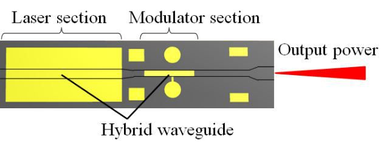
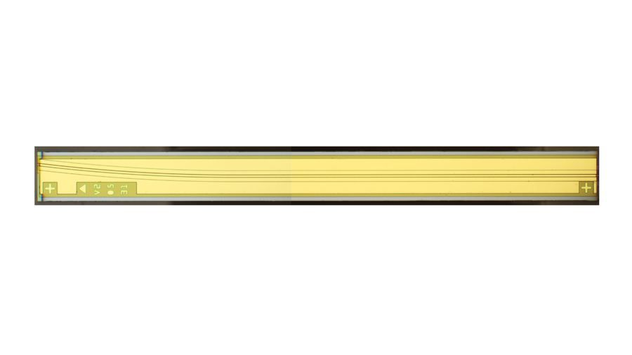
没查到的东西。 任何公司自己公布的交期周数；单独的 200G EML 份额；住友 200G EML 状态；英伟达采购承诺的具体金额。
- 一家外资券商，《Global Optical transceivers》，2026-09-07，p.3、p.5、Exhibit 5（付费）。
- TrendForce，《AI Data Centers Ignite a Laser Shortage Wave…》，2025-12-08。
- Coherent，Q3 FY2026 电话会 2026-05-06 与 Q4 FY2026 电话会 2026-08-12（Motley Fool 转录）。
- TechNews，联亚光电 2026Q2 法说整理，2026-08-18（媒体整理，非公司原文）；TrendForce 2025-12-08。
- Lumentum，Q3 FY2026 电话会 2026-05-05 与 Q4 FY2026 电话会 2026-08-11（Motley Fool 转录）；产品页 EML 200G PAM4 CWDM。
- XenoSpectrum 报道 Lumentum CEO 2026-07-08 演讲（二手，未找到原文）。
- TrendForce（经 semiconductor-today 转载），《AI data-center expansion to drive monthly capacity of EML and CW-DFB lasers to 50.7 million in 2026》，2026-06-04。
- Coherent，《Coherent Samples Low-Noise 400 mW CW Lasers…》新闻稿（日期未核）；AOI 新闻稿 2025-12-18；券商《Semicon Taiwan Takeaways》2026-09-08 p.2。
- LightCounting，April 2026 Market Forecast（原页 403，搜索摘要）；IEEE ComSoc 转述 2026-08 报告，2026-08-14。
- Broadcom，Q3 FY2026 电话会转录，2026-09-02。
- Coherent 8-K Ex-99.1，2026-03-02，https://www.sec.gov/Archives/edgar/data/820318/000119312526084366/d42735dex991.htm；NVIDIA Newsroom 同日新闻稿；TrendForce 2025-12-08。
环节六：VCSEL
- VCSEL 竖着做腔、直接调制、砷化镓（第 6 章）
- SR 短距用多模光纤（第 3 章）
- 氧化孔径与光刻孔径
- 不吃磷化铟
- 200G 量产的现状
- "慢而宽"的翻身机会
做什么与为什么难
VCSEL 是 SR 多模模块和有源光缆的光源；在 CPO 里它是"不需要外置光源、不需要微环锁定"的那条路线。它的门槛比 EML 低三处：不吃磷化铟而吃砷化镓，绕开了当前最紧的衬底；直接调制，省掉调制器、DSP 和多数场景下的制冷片；手机人脸识别给它留下了巨大的量产基座，Lumentum 称累计出货超过 100 亿颗发射单元1。难在两处：上下反射镜各几十对四分之一波长薄层，厚度偏差直接移动谐振波长，是外延厚度控制的极限活；传统氧化孔径把带宽卡在约 27 GHz，也就是 100G 每车道的天花板，Coherent 的突破是光刻孔径，把带宽推到约 45 GHz 够得上 200G2。多模光纤的带宽距离乘积也限制它只能跑一两百米，但 AI 机柜内 Scale-up 的实际需求只有 0.3 到 30 米，这个限制在新场景里基本不构成约束3。
谁在做
| 公司 | 代码 | 口径 |
|---|---|---|
| Coherent | COHR | 多模收发主要供应商；光刻孔径路线提出方 |
| Broadcom | AVGO | 2024-03 演示业界首颗 200G VCSEL；产能同比增三倍以上 |
| Lumentum | LITE | 1,060 纳米多模阵列，OFC 2026 演示与主芯片共封装 |
| TRUMPF Photonic Components | 未上市 | ECOC 2025 发布 850 纳米 100G VCSEL，200G 推进中 |
| 长光华芯 | 688048.SH | 100G VCSEL 量产出货水平 |
份额：未查到。 券商报告只分硅光与 EML，TrendForce 的产能表只统计 EML 与连续光激光器，三家上市公司都不单列 VCSEL。这是整个光芯片环节最大的数据空洞。
代表产品与代际：200G 量产了吗
按可查证据排时间线：2024-03 博通演示首颗 200G VCSEL（演示，非量产）；2024-03 Coherent 公布光刻孔径；2025-09 TRUMPF 发布的仍是 100G；2026-01 一篇预印本称 200G VCSEL"接近实现"；2026-03 博通发布集成 VCSEL 驱动器的 200G DSP；2026-05-06 Coherent CEO 原话"我们的 200G VCSEL 开发进展很好，预计会被用在部分 CPO 或 NPO 应用"，是开发不是量产24。结论：截至 2026-09-11，没有任何公司声明 200G 每车道 VCSEL 已量产。
现状与路线影响
没有单独的 VCSEL 财务披露。间接信号有两个：博通说 EML、连续光、VCSEL 与磷化铟工厂产能同比增三倍以上；IQE 提到砷化镓外延在为 AI 光互连做资格认证5。反向的实物证据更直接：Lumentum 的北卡厂是从砷化镓改造成磷化铟，2026 年的资本开支方向是把 VCSEL 产能转成 EML 和连续光产能，这是 VCSEL 在 Scale-out 战场失势的直接证据1。
Scale-up 是它的翻身机会。一篇 2026 年 1 月的预印本给出论证结构：训练阶段 Scale-up 占数据中心带宽八成以上；NVL72 一个机柜五千多根铜缆、总长 3.2 公里，空间已见底；铜在 200G 每车道下约 1 米、整链能效约 5 皮焦每比特；硅光引擎约 6.7 皮焦每比特；VCSEL 用"慢而宽"（更多通道、较低速率、不用 DSP 和纠错）被估到 1.5 皮焦每比特3。Coherent 2026 年 3 月的博客与此一致，称慢而宽的 VCSEL 共封装"有潜力接近端到端 1 皮焦每比特以下"，是厂商观点6。对立面是 MicroLED（Avicena），同一块市场。SR 多模在 Scale-out 里的份额趋势，方向上是共识（单模化），但具体百分比全部出自电商博客，不可引用。
看哪个数
- 英伟达 Scale-up 那一层选不选光，选光之后选 VCSEL 还是硅光。这是这条线唯一的需求开关。
- "200G VCSEL"在 Coherent、博通、Lumentum 电话会里从开发变成量产的那一刻。
- 砷化镓外延与衬底的资格认证与订单信号（IQE 光子分部；AXT 的砷化镓业务是否跟涨）。
VCSEL 便宜、不吃磷化铟、不用 DSP，但 200G 尚未量产，在 Scale-out 里被单模挤走，在 Scale-up 里靠"慢而宽"等翻身。份额数据是整个光芯片环节最大的空洞。
VCSEL 的三个门槛优势是什么？
200G VCSEL 量产了吗？
VCSEL 在 Scale-out 失势的实物证据是什么？
- Lumentum，《Showcases Breakthrough Optical Scale-Up Demonstration at OFC 2026 Using VCSEL Technology》，2026-03-17；Q3 FY2026 电话会 2026-05-05（砷化镓改磷化铟）。
- Coherent，《Significant Advancement in VCSEL Performance for Next-Gen AI Networks》，2024-03-25；Broadcom 2024-03-13 公告。
- Kohli 与 Teissier，《VCSEL-based CPO for Scale-Up in A.I. Datacenter》，arXiv:2601.14342，2026-01-20（预印本，作者机构未披露）。
- Coherent，Q3 FY2026 电话会，2026-05-06；Broadcom Sian2M 公告，2026-03。
- Broadcom Q3 FY2026 电话会 2026-09-02；IQE 2026H1 报告（经 semiconductor-today 2026-09-09）。
- Coherent 博客，《Wide-and-Slow VCSEL Co-Packaged Optics》，2026-03-16。
环节七：硅光芯片与代工
- 硅光把调制搬到硅片，激光器外置（第 6 章）
- 硅光调制带宽约 70 GHz 的争议（第 6 章）
- 设计方与代工方靠 PDK 绑定
- 四个渗透率口径
- 代工端的硬数字
- 材料的三难
做什么
硅光把除激光器之外的光学功能刻在一片硅晶圆上做成光子集成电路。分工是：设计方（模块厂自研或芯片公司）出版图与器件库，代工方（Tower、GlobalFoundries、台积电、三星）出工艺与产能，两者靠工艺设计套件绑定，换代工厂等于重做器件库。硅光的经济意义是省激光器：1.6T 硅光模块 4 颗 70 毫瓦连续光激光器约 15 到 20 美元，同速率 EML 方案 8 颗约 160 美元1。
为什么难
调制带宽是物理天花板：硅靠载流子改折射率，速度受载流子寿命限制，华工正源的口径是约 70 GHz、做单波 400G 要加补偿2。材料三难：薄膜铌酸锂性能最好但"还没有哪家代工厂能对外大批量发货"，磷化铟相对成熟，硅光供应链最强但性能最吃紧2。良率与生态：光子集成电路被要求在一两年内追平电集成电路几十年积累的自动化生产与测试生态，晶圆级测试时间要缩短五到六成3。激光器功率随封装形态跳档：外置光源出光超过 20 dBm 时端面容易被烧毁，对洁净度要求极高2。
谁在做
| 角色 | 公司 | 代码 | 状态（2026-09） |
|---|---|---|---|
| 设计：模块厂自研 | 中际旭创 | 300308.SZ | 全球首家把硅光高速模块规模商业化；硅光出货占比 50% 升向 86%（券商） |
| 设计：模块厂自研 | 新易盛 | 300502.SZ | 自研团队加外部代工 |
| 设计：器件厂 | Coherent | COHR | 自做硅光芯片，同时是磷化铟激光器主供 |
| 设计：芯片厂 | Marvell | MRVL | 6.4T 3D 硅光引擎；并购 Celestial AI、Polariton |
| 设计：芯片厂 | Broadcom | AVGO | TH6-Davisson CPO 交换机自带 16 颗 6.4T 光引擎 |
| 设计 | Intel | INTC | 保留硅光器件与光 I/O 芯粒，可插拔模块业务 2023 年转 Jabil |
| 设计：初创 | Ayar Labs、Lightmatter | 未上市 | 光 I/O 芯粒；Ayar 2026 年累计融资 6.5 亿美元 |
| 代工 | Tower | TSEM | 硅光年化运行率超 6.8 亿美元，2027 年已签约 13 亿 |
| 代工 | GlobalFoundries | GFS | 通信与数据中心板块 +62%，硅光收入翻倍以上 |
| 代工 | 台积电 COUPE | 2330.TW | NVIDIA 与博通 CPO 的封装平台 |
| 代工 | 三星 | 005930.KS | 2026-03 宣布进入，2029 年 turnkey CPO |
Intel 与 Jabil 的边界要写准：2023 年 Jabil 只承接 Intel 硅光可插拔模块产品线，Intel 保留硅光器件和光 I/O 芯粒（片上集成激光，4 Tbps 双向）4。台积电 COUPE 已确认的落地是 NVIDIA 光子交换机和博通 TH6-Davisson，但不要写成"所有 CPO 只能用 COUPE"，Intel 与 Ayar 是反例。
代表产品与代际
200G 每车道已量产（1.6T 等于 8 乘 200G）。400G 每车道在送样与论文阶段：华工正源展出了单波 400G 的 1.6T 与 3.2T 模块眼图；Tower 与 Coherent 2026-03-23 在量产级硅光工艺上用硅马赫曾德调制器做到 400G 每车道开眼图，Tower CEO 说"可以把硅再延长一代"5；学术侧硅微环报告 400G 每波长，但审核记录警示那是 PAM6 眼图，不能写成 PAM4 无误码6。薄膜铌酸锂商用器件普遍超过 100 GHz，HyperLight 2026-03 发布单波 400G 的铌酸锂芯片；Marvell 2026-04-22 收购 Polariton 押注等离子体调制器，是绕开硅带宽上限的第三条材料路线7。
现状：渗透率四个口径不可互换
| 口径 | 数字 | 出处 |
|---|---|---|
| 按销售额（LightCounting） | 2026 年硅光调制器收发器首次超过约 400 亿美元市场的一半 | 2026-05（原页 403） |
| 按速率档（券商） | 800G / 1.6T / 3.2T 中硅光占 60% / 80% / 80%（2026 到 2028） | 2026-09-07 |
| 按总出货数量（券商） | 6% 升到 18%（2025 到 2028）；按材料金额 26% 升到 64% | 2026-09-07 |
| 公司自述 | 数通市场硅光渗透 38%（2025）升到 73%（2030） | 中际旭创 2026 半年报（二手转述） |
代工端的数字比渗透率预测可靠得多：Tower 2026Q2 硅光收入环比增六成、同比增 2.7 倍，年化超 6.8 亿美元，目标四季度 10 亿美元年化，日本 300 毫米新厂 2027 年四季度就绪8；GlobalFoundries 称现有 300 毫米厂硅光产能可扩十倍，2028 年底年化 10 亿美元9。真正的瓶颈在磷化铟：Coherent 说近期"看不到任何时点会对外销售磷化铟激光器"，硅光模块想买连续光激光器，要和 Coherent 自家收发器抢同一条产线10。
路线之争的影响
硅光渗透显然受益，且受益不均：代工受益于所有硅光形态，自研硅光的模块厂受益于可插拔硅光，做 EML 的 Coherent 靠卖连续光激光器两头下注。LPO 中立偏不利：硅光调制器插损大于 EML，在线性链路里更吃光功率预算。NPO 与 CPO 强烈受益，因为几十个通道塞进一颗引擎几乎只能用硅光。Scale-up 光化是硅光代工最大的增量票，但券商与 SemiAnalysis 对时点分歧巨大，必须并列不选边。
看哪个数
- Tower 每季度的硅光年化运行率与产能倍数：全链最早反映硅光订单真实落地的单一数字，代工要提前两三季备产能。
- GlobalFoundries 通信与数据中心板块的同比：与 Tower 同时加速是真需求，一家加速一家掉是份额转移。
- Coherent 是否改口对外供应磷化铟连续光激光器：改口意味着瓶颈解除。
- 展台问：单波 400G 用不用额外补偿，功耗加了多少瓦；400G 硅调制器的晶圆良率报不报。
硅光靠省激光器赢得成本，靠成熟制程赢得产能；天花板是调制带宽。渗透率四个口径分母不同不可互换，代工端的数字更硬。硅光越多，磷化铟连续光激光器越紧，瓶颈没有消失，只是换了形态。
硅光设计方和代工方靠什么绑定？
渗透率为什么不能互比？
硅光放量后瓶颈在哪？
- 一家外资券商，《Global Optical transceivers》，2026-09-07，p.5（付费）。
- 罗传能（华工正源），2026-09-10 CIOE 论坛转写，录音 07:18、08:01、16:52 至 17:38。
- 一家外资券商，《Semicon Taiwan: Takeaways》，2026-09-08，p.1 至 p.2（付费）。
- Jabil，《Jabil Invests in the Future of AI with Intel Silicon Photonics Transceiver Deal》，2023-10-31；Intel Newsroom，OFC 2024 光 I/O 芯粒。
- Tower Semiconductor，《Tower and Coherent Demonstrate 400Gbps/lane…》，2026-03-23。
- 本仓库审核记录 审核_2026-09-10/v2_routes.md 第 81 至 85 行（arXiv 2509.01555 的口径限定）。
- Marvell，《Marvell Announces Acquisition of Polariton Technologies》，2026-04-22；HyperLight 与 Light: Advanced Manufacturing 2025（铌酸锂器件）。
- Tower Semiconductor，Q2 2026 电话会转录（Motley Fool），2026-08-11。
- GlobalFoundries，Q2 2026 电话会，2026-08；券商《Communacopia Day 1》2026-09-08 p.4 至 p.5。
- Coherent，Q4 FY2026 电话会，2026-08-19。
环节八：无源件，光纤阵列、连接器与外置光源
- 耦合对准是亚微米级（第 5 章）
- CPO 把激光器外置（第 6 章提到，第 19 章展开）
- 光纤阵列单元
- 插芯与多芯连接器
- 外置光源模块
- 插座标准之争
做什么与为什么难
光纤阵列单元（FAU）把一排光纤端面按固定间距排在 V 型槽基板上，与光引擎上的波导阵列一根根对上，是光从芯片出来的第一道门；MT 插芯是多芯连接器里带精密孔阵的芯，MPO 是基于它的可插拔多芯连接器，MMC 是更小的新一代；外置光源模块把连续光激光器从引擎里搬到前面板可插拔盒里，坏了换模块不拆交换机。难在精度是微米与纳米级且公差累积：天孚自述的底座是"亚微米级高精密光耦合、纳米级模具设计"，波若威公开的光纤阵列间距公差正负 0.5 微米1。通道数每跳一档都是新工艺：CPO 用光纤阵列从 40 通道（3.2T，2026 年三季度）到 80 通道（6.4T，年内）到 100 通道（研发中）2。行业自己承认的结构性痛点是验证周期与方案迭代周期不匹配：圆桌上一位连接器厂代表说 NPO 项目"没有一个是完全一样的"，连接器验证以半年为单位，方案落地以月计3。
谁在做
| 零件 | 玩家 | 备注 |
|---|---|---|
| 光纤阵列 | 天孚通信 300394.SZ、Corning GLW、Senko、Browave 3163.TWO、Fujikura、FOCI 6509.TWO | 份额未查到；第三方市场规模口径互相矛盾 |
| 插芯与连接器 | US Conec（私有）、太辰光 300570.SZ、住友、Fujikura、Sanwa、Hakusan | US Conec 2026-02 才把 MMC 插芯开放给两家日本厂多源，此前单点供应 |
| 光纤与光缆 | Corning、长飞 601869.SH、Fujikura、Prysmian | AI 数据中心要抗弯单模、超高芯数带状、空芯光纤 |
| 外置光源 | Lumentum、住友、Coherent、天孚（组件）、中际旭创（自做） | 模块单价约 400 美元（券商建模） |
NVIDIA 2025-03-27 技术博客按功能点名了 CPO 供应链：台积电做 COUPE，矽品做封装测试，Lumentum、住友、Coherent 做外置光源组装，Coherent、Browave、Corning、Senko、天孚做光连接件，富士康与 Fabrinet 做系统组装。这是例举不是完整名单，Computex 2026 同台展 CPO 的还有 FOCI、Molex、TE4。
现状：天孚半年报是最硬的一组数
| 项目 | 2026H1 | 同比 |
|---|---|---|
| 营业收入 | 28.28 亿元 | +15.15% |
| 归母净利润 | 12.04 亿元 | +33.92% |
| 无源光器件收入 | 15.30 亿元 | +77.40% |
| 无源光器件毛利率 | 71.90% | +8.33 个点 |
| 有源光器件收入 | 12.60 亿元 | −19.57% |
怎么读这张表：收入只涨 15% 而净利涨 34%，原因全在结构，高毛利的无源件涨 77%，低毛利的有源件因"个别物料阶段性供给紧缺"掉近两成。激光器缺货把天孚的结构推向了更赚钱的一边；反过来，一旦激光器供给缓解、有源件恢复增长，整体毛利率会被稀释回去5。对照太辰光：收入增 21% 而利润几乎不增，同在无源件里，做 CPO 级光纤阵列的和做通用连接器的定价权完全不同6。Corning 2026Q2 光通信增 32%、企业业务增 65%，2026 年资本开支约 20 亿美元扩光通信，NVIDIA 5 月投资 5 亿美元共建三座光学工厂7。
插座标准之争：LGA 对扣板
NPO 的光引擎靠插座装在交换芯片旁的板上，插座是什么形态还没定。触点阵列（LGA）：电路板侧与光引擎侧都是触点，不需要回流焊，规范一旦定下各家容易互联互通，连接器公司也有优化自家界面的积极性。扣板（Mezzanine）：上下可拆，但需要回流焊。圆桌上连接器厂代表的判断很尖锐：技术早就不是瓶颈，"20G 已经量产快两年了"；没有商业授权只靠标准界定尺寸，模块厂和系统厂是两个不同的客人，最后很可能配不上；而商业授权意味着"一家设计、多家生产"，会压制创新3。华工正源的痛点是"最难定的就是插座，每一家给的方案都不一样，每一家我要做一个方案"8。三方摆一起：模块厂要插座只有一种，连接器厂要规范定尺寸但留创新空间，标准组织要"管住交互层、放开实现层"。结局决定连接器环节是多家竞争的标准件生意还是一家授权多家代工的许可生意，毛利率天差地别。
路线之争的影响与看哪个数
硅光渗透中性偏受益（光纤阵列跟着硅光走，通道更密）；NPO 受益且比 CPO 更受益（保留插拔界面又多了引擎级需求）；CPO 强受益但集中度高，门槛由 NVIDIA 和博通的认证决定；Scale-up 光化是最大的潜在增量，三家云厂商给的时间点差两年（阿里猜 2028，腾讯说明年到后年）3。要警惕的竞争：中际旭创 2027 到 2028 年把光纤阵列和外置光源列为自己的新产品线，天孚最大的客户群正在往它的主业里走2。
- 天孚半年报"分产品"表里无源光器件的收入增速与毛利率，同时看有源那一行。
- 光纤阵列通道数与单价的同步推进（40 到 80 到 100 通道；约 51 到 77 到 91 美元）。
- Corning 企业业务的季度同比与资本开支。
- 展台问：80 通道的良率比 40 通道差多少，哪道工序限制；你们押触点阵列还是扣板，客户两种都要你开几套模。
无源件不耗电不转换，但 CPO 和 NPO 让光纤阵列、插芯、外置光源从辅料变成决定能否量产的结构件。天孚 2026 年上半年无源件增 77%、毛利率 72%，是这件事在财报上的落痕。插座标准之争决定连接器是标准件生意还是许可生意。
天孚 2026 年上半年净利增速为什么远高于收入增速？
触点阵列和扣板的争议本质是什么？
NVIDIA 点名的 CPO 供应链是完整名单吗？
- 苏州天孚光通信，2026 年半年度报告全文，2026-08-19，核心竞争力章节；Browave 光纤阵列产品页（访问 2026-09-11）。
- 一家外资券商，《Semicon Taiwan: Takeaways》，2026-09-08，p.2；《Innolight》2026-09-07，p.6（付费）。
- NPO 产业发展圆桌讨论转写校订稿，2026-09-10，录音 01:22 至 04:41、11:16、12:17 至 14:24（连接器厂代表未具名，疑为安费诺，未证实）。
- NVIDIA，《A New Era in Data Center Networking with NVIDIA Silicon Photonics-based Network Switching》，2025-03-27；Wiwynn Computex 2026 新闻稿。
- 苏州天孚光通信，2026 年半年度报告全文，2026-08-19，p.14 与分产品收入表，http://static.cninfo.com.cn/finalpage/2026-08-19/1225480328.PDF。
- 太辰光 2026 年半年报相关报道（二手）。
- Corning，Q2 2026 财报，2026-07-27；CNBC，《Nvidia, Corning partner on three new optical factories》，2026-05-06。
- 罗传能（华工正源），2026-09-10 CIOE 论坛转写，录音 13:00 至 14:04。
环节九：交换芯片与系统厂，含光交换、相干与铜的对手
- 交换芯片的口数几乎不涨，靠每车道提速（第 3 章）
- SerDes 是芯片的嘴（第 7 章）
- 交换芯片与系统厂的分工
- 光交换机
- 相干与数据中心互联
- 有源铜缆
做什么
交换芯片一侧接几百上千条 SerDes，另一侧是决定每个报文往哪个口走的交换结构，输入输出都是电；面板上那排光模块笼子是把电交给光模块。所以交换芯片的每车道速率直接决定面板上能插什么模块。系统厂把芯片做成整机：电路板、电源、散热（1.6T 代际已普遍液冷）、网络操作系统、认证；分品牌机（Arista、Cisco）和白牌（Celestica、Accton、Quanta），区别是谁拥有操作系统和客户关系。光交换机（OCS）是另一类东西：不看报文、不做转发决策，用微镜或液晶把一根光纤的光切到另一根，是自动配线架。相干管楼与楼、城与城之间，用光的相位和幅度同时载信息。铜是这一环的对手：铜够得到的短距链路不需要光模块。
为什么难
SerDes 是模拟设计，不靠制程堆：博通 Tomahawk 6 单芯片 102.4T，给两种配置，1,024 条 100G 或 512 条 200G，让 200G 的眼图在封装和电路板上活下来是这一环最硬的门槛1。CPO 把封装难度搬进交换芯片：TH6-Davisson 在同一封装里放 16 颗 6.4T 光引擎，任何一颗坏，整个封装件报废2。光交换的难点不在开关在光学余量：谷歌 Palomar 用三维微镜做到 136 乘 136 无阻塞、最大插损 2 dB、整机 108 瓦，把 2 dB 做到量产一致且十年不漂是真门槛3。系统厂的门槛是规模和认证：白牌里 Accton 加 Celestica 约占九成4。
谁在做
| 类别 | 玩家 | 状态（2026-09） |
|---|---|---|
| 交换芯片 | Broadcom AVGO | TH6 102.4T 2025-06 出货；TH6-Davisson CPO 2025-10 宣布出货，第三代 CPO；TH7 200T 已流片 |
| 交换芯片 | NVIDIA NVDA | Spectrum-X SN6810 102.4T、SN6800 409.6T；Quantum-X 144 乘 800G |
| 交换芯片 | Marvell、Cisco、盛科 | Teralynx 10 51.2T；Silicon One G300 102.4T；Arctic 25.6T |
| 系统厂 | Arista ANET | 2Q26 收入 30.4 亿美元 +38%；2026 指引 126 亿；AI 网络至少 35 亿 |
| 系统厂 | Celestica CLS | 2Q26 收入 47.0 亿美元 +62%；2026 指引 205 亿；2027 增速超 65% |
| 光交换 | Google 自用、Coherent、Lumentum | Palomar 136 乘 136 数万台；Coherent 64 到 512 乘 512 液晶；Lumentum R300 300 乘 300 微镜 |
| 相干 | Cisco Acacia、Ciena、Coherent、Marvell、Nokia | 2026 年 800ZR 出货急增，1.6T ZR 2027 年底前商用 |
| 铜的对手 | Credo CRDO、Amphenol APH、Molex、TE、立讯、兆龙 | Credo FY27Q1 收入 4.79 亿美元 +115% |
两处要写准的事实：Coherent 的商用光交换机是 64 乘 64 到 512 乘 512 的液晶方案，300 乘 300 是 Lumentum 的 R300 微镜方案，两家的客户数和单价目前只有二手转述5。交换芯片的收入份额未查到可引用的机构数字。
现状与 CPO 交换机的可用时间
Arista 与 Celestica 的二季度是这一环最干净的需求读数：品牌机增 38%，白牌代表增 62%，两者都上调全年，Celestica 点名 800G 与 1.6T 交换机4。CPO 交换机：博通 TH6-Davisson 2025-10-08 宣布向早期客户送样、随后正式发布，第四代目标 400G 每通道；NVIDIA Quantum-X Photonics 商用"2026 年初"，Spectrum-X Photonics"2026 下半年"；首批可确认的生产部署是 Lambda 2026 年 6 月在一个万卡 GB300 集群上，功耗口径常规交换机约 7.0 千瓦、CPO 交换机 3.95 千瓦6。
铜的对手，以及一个改叙事的发现
每车道 224G 下无源铜约 1 到 2 米，带中继芯片的有源铜缆在 112G 代际覆盖 0.5 到 7 米，升到 200G 约 5 米（后者只有二手）7。NVL72 每柜五千多根铜缆，供应商归属是渠道推断；Rubin 一代改为中置背板加盲插连接器，会改变这条需求的性质8。Credo 已经不是纯有源铜缆标的：FY27Q1 收入 4.79 亿美元、增 115%，管理层指引 FY27 光 DSP、硅光芯片、ZeroFlap 光模块各超 1 亿美元、光学总收入超 6 亿美元，CEO 原话"有源铜缆继续增长，光学增长更快"；前四大客户合计 84%9。用"SerDes 升级则铜缩短则 Credo 受损"这条单线会漏掉公司主动换赛道。博通是两头下注的典型：TH6 发布稿宣传"200G SerDes 提供业界最长的无源铜可达距离"，TH6-Davisson 宣传 CPO 降功耗七成12。
路线之争的影响与看哪个数
交换芯片厂不中立：CPO 让它吃掉光引擎的价值，可插拔让它只卖芯片。系统厂相对中立：模块在面板还是封装里，整机都要它做；白牌在 NPO 下受益更明确。铜缆与中继芯片厂随 SerDes 代际受损，这是物理性侵蚀，但受损的是"铜"这个产品，不一定是卖铜的公司。光交换与 CPO 不是替代关系，是网络的不同层面，可以并存。
- TH6-Davisson 从早期客户到正式发布的时间点，以及第四代 400G 平台的宣布时点：这是"CPO 到底是 2026 还是 2029"最早能被证伪的地方。
- Arista 的 AI 网络年度指引与 Etherlink 客户数；Celestica 的分部收入与 800G、1.6T 的提及方式。
- Credo 的"光学收入对有源铜缆收入"增速差与 10-Q 客户集中度。
- 光交换：Coherent 与 Lumentum 电话会里的客户数与月产能；展台问"这一代 300 乘 300 还是 512 乘 512，插损预算多少，切一次光路多少毫秒"。
交换芯片决定每车道速率，是 CPO 的主导者也是铜的推销者；系统厂靠规模与操作系统；光交换是配线架不是替代品；铜的对手在被物理侵蚀的同时主动换赛道。
交换芯片的每车道速率为什么决定模块代际？
光交换机和普通交换机的根本区别？
Credo 的叙事为什么变了？
- Broadcom，《Broadcom Ships Tomahawk 6》，2025-06-03；Q3 FY2026 电话会 2026-09-02（TH7 流片）。
- Broadcom，《Tomahawk 6 – Davisson》公告，2025-10-08（经 StorageReview 同日报道核对）。
- Google，《Mission Apollo: Landing Optical Circuit Switching at Datacenter Scale》，SIGCOMM 2022，arxiv.org/abs/2208.10041。
- Dell'Oro（二手转述）白牌份额；Arista 2Q26 财报 2026-08-04；Celestica 2Q26 财报 2026-07-28。
- Coherent 光交换产品页；Lumentum R300 产品页；客户数与单价经 Futurum、Substack 转述（未核实）。
- NVIDIA 技术博客《Scaling AI Factories with Co-Packaged Optics》2025-08-18；Lambda 部署与功耗口径经 SDxCentral 转述 2026-06。
- 彭小伟（立讯）2026-09-10 CIOE 论坛转写第 44 行；Credo ZeroFlap AEC 产品页；TE 224G 页面不含米数。
- NVIDIA DGX GB200 用户指南（5,000 根铜缆）；供应商归属与 Rubin 背板为渠道推断（SemiAnalysis、X）。
- Credo，FY27Q1 财报与电话会，2026-09-08（Motley Fool 转录）。
环节十：耦合封装设备与测试
- 良率是累积的（第 5 章）
- 硅光晶圆要在切片前测（第 5 章）
- 耦合与贴装设备
- 三到四个测试插入点
- 封测代工
- 设备需求的量纲
"CPO 多两道测试，测试设备销量就翻倍。"不对。设备需求取决于件次、单件时间、并行站数和稼动率四个变量，Teradyne 自己的 10-K 把"并行测试可能缩小测试市场"列为风险。插入点增加不等于设备销量线性增加。
做什么与为什么难
耦合封装设备把激光器裸片、硅光芯片、光纤阵列以亚微米精度贴到一起并固化：高精度贴片机、主动对准台（一边通光一边挪位置找最大耦合效率）、激光焊接。测试分三到四个插入点：晶圆级电光探测（切片前挑出合格裸片）、晶圆级老化（筛早期失效）、光引擎级、模组级。封测代工把这两件事当服务卖：日月光与矽品、Amkor、台积电 COUPE。难在精度是亚微米（ASMPT 的贴装精度标称正负 0.2 微米，这个量级上设备热膨胀、胶水收缩、基板平整度都会吃掉余量）1；良率累积（四道 90% 是 66%）；硅光晶圆要正面打电、另一面耦光，Teradyne 与 ficonTEC 2025-03-31 发布业界首个双面晶圆探测系统2；整个光子生态的自动化成熟度落后电芯片几十年，却被要求一两年内追上3。
谁在做
| 插入点 | 代表设备 | 厂商与状态 |
|---|---|---|
| 亚微米贴装 | AMICRA NANO（±0.2 微米） | ASMPT 0522.HK（中国本地品牌奥芯明） |
| 主动对准耦合 | 光学对准与光纤搬运单元 | ficonTEC（罗博特科 300757.SZ 控股，2025 年 5 月并表） |
| 贴装 | 亚微米 die bonding | MRSI / Mycronic；Palomar |
| 晶圆级探测（双面） | UltraFLEXplus 加 ficonTEC 单元 | Teradyne TER，2025-03-31 |
| 晶圆级探测（单面） | TRITON / V93000-Triton | FormFactor FORM 加 Advantest 加 TEL，2025-04；2026 已产生收入 |
| 晶圆级老化 | FOX 全自动 WLBI | Aehr AEHR |
| 晶圆到模组三个插入点 | Photon 100 | Teradyne，OFC 2026 |
| 封测代工 | COUPE；矽品 | 台积电；矽品在 NVIDIA 点名名单内 |
| 设计与测试仪器 | 光子仿真、OCS 测试环境 | Keysight KEYS，2026 年四则公告 |
两处纠正：奥芯明不是独立第三方，是 ASMPT 2023 年在中国大陆设立的本地品牌；ASMPT 近期公布的 15 台与 19 台热压键合订单是 AI 芯片与高带宽内存用途，不是光子用途1。TRITON（单面）与 Teradyne 加 ficonTEC（双面）在硅光晶圆级电光测试上功能重叠，不能说三家不竞争4。
现状（2026 年中）
FormFactor 2Q26 收入 2.58 亿美元创纪录、增 32%，Systems 分部增长"主要由 Triton 驱动"，CPO 收入口径 2026 年约 2,000 万美元，以季度收入为分母，光子测试今天还很小，但"今天小"不等于增速低5。Aehr FY26Q4 收入 1,880 万美元、季度订单 6,070 万创纪录，FY27 指引 1.30 到 1.50 亿美元、增 160% 到 200%；但"AI 处理器占 71%"这类应用占比新闻稿里没有，三个流传数字互不相同，必须用 10-K 复核6。ficonTEC：罗博特科并表的业绩承诺是 2025 到 2027 累计扣非净利不低于 5,814.5 万欧元；公司口径"未来一年出货台数超过过去 25 年总量的一半"，流传的"18 个月再出 1,000 台"上一轮审核已标注计划、订单、出货三者必须区分7。Teradyne 整体分部里光子只是小块，不能拿 Photon 100 给整家公司定价2。
路线之争的影响：先写三条被纠正过的推理
纠正一，插入点增加不等于设备销量线性增加。 设备需求约等于各站件次乘单件时间除以并行站数、年可用小时、稼动率之和。透明算例：件次增 50%、单件时间增 20%，但并行翻倍、稼动率从 60% 升到 80%，所需设备反而减少 32.5%；并行与稼动率不变则增 80%。同一套需求叙事可以推出相反的设备销量方向8。纠正二，良率提升不必然降低测试需求。 合格品需求翻倍、良率从 80% 升到 95%，投入仍增约 68%。纠正三，CPO 的晶圆级老化不是所有架构都必选。 NVIDIA 用可现场更换的外置光源，激光器有老化风险不能直接推出每颗硅光芯片都需要相同的老化工序9。
在此基础上：NPO 对设备是温和增量，立讯彭小伟说 NPO 的耦合"沿用原来可插拔光模块的耦合设备，工艺可以迁移"，但同一场也说 NPO 要用先进封装、传统与先进封装厂都在抢10；CPO 是新增插入点，但要经过纠正一的折算；高精度贴装设备相对中立（三条路都要贴），晶圆级老化最不中立（随激光架构分叉），晶圆级探测介于两者之间（硅光渗透上升就受益）。Aehr 的归因边界：AI 处理器烧机、碳化硅、硅光是三个独立需求变量，把它的指引当 CPO 验证跨越了公司从未披露的应用占比。
看哪个数
- FormFactor 的 CPO 收入绝对数与 Systems 分部环比：目前唯一按季披露的"CPO 测试收入"。
- Aehr 的订单与储备按终端应用拆分：只有客户明确说明用于 CPO 的订单才算纯 CPO 暴露。
- 设备厂口径的"每片晶圆有效测试小时、并行站数、稼动率"，把需求叙事换算成设备销量的唯一桥梁，任何公开来源都没有，只能展台问。
- 罗博特科定期报告里 ficonTEC 的并表收入与业绩承诺完成度。
耦合与测试设备是把良率做出来的人。它的需求不随插入点线性增长，要看件次、单件时间、并行和稼动率。贴装设备中立，晶圆级老化最不中立，晶圆级探测跟硅光渗透走。
设备需求的四个变量是什么？
为什么"良率提升则测试需求下降"不成立？
哪家上市公司按季披露 CPO 测试收入？
- ASMPT，《ASMPT at OFC 2026 Los Angeles》，2026-03；热压键合订单公告 2026；奥芯明官网。
- Teradyne，《Production System for Double-Sided Wafer Probe Test for Silicon Photonics》，2025-03-31；《Photon 100》OFC 2026；2Q26 财报。
- 一家外资券商，《Semicon Taiwan: Takeaways》，2026-09-08，p.1 至 p.2（付费）。
- 本仓库审核记录 审核_2026-09-10/v2_testing_tam.md V2-T7。
- FormFactor，2Q26 10-Q，https://www.sec.gov/Archives/edgar/data/0001039399/000103939926000033/form-20260627.htm；TRITON 产品页。
- Aehr Test Systems，FY26Q4 8-K Ex-99.1，2026-07-14。
- 罗博特科，2025 年度业绩预告 2026-01-29 与购买资产报告书草案；券商《Semicon Taiwan》p.1。
- Teradyne，2025 年 10-K，印刷页 15 风险因素（并行测试可能缩小测试市场）；算例为本书推算。
- NVIDIA 技术博客，外置光源使可靠、可扩展的光传输成为可能，2026。
- 彭小伟（立讯），2026-09-10 CIOE 论坛转写第 88、92 行。
翻译官搬到哪：可插拔、LPO、NPO、CPO
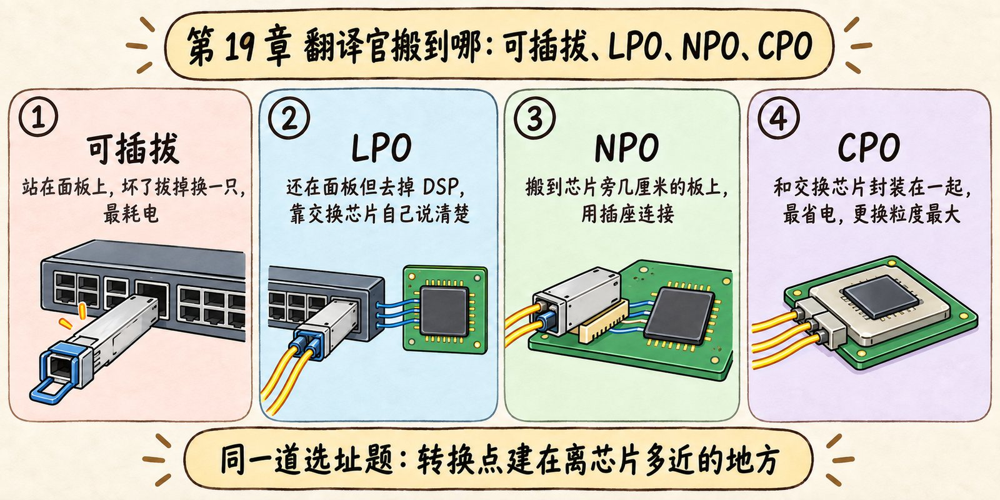
- 电走得越短越省电，转换点被迫靠近芯片（第 7 章）
- DSP 在补偿码间干扰（第 4 章）
- 激光器最怕热、最容易坏（第 13 章）
- 可插拔
- LPO 与 LRO
- NPO
- CPO 与外置光源
"CPO 一出来，可插拔光模块就没了。"第 1 章说过光模块插在两种设备上：交换机和网卡。CPO 改的是交换机这一侧，网卡那一侧的模块还在；英伟达自己的新闻稿写的是 Spectrum-6"同时支持可插拔与共封装光学"。
所有方案本质上是同一道选址题：翻译官站在离交换芯片多近的地方。离得远，好换好修但电走得长、码间干扰重、DSP 补偿多、最耗电；离得近，电走得短最省电，但光引擎坏了更换的粒度变大。
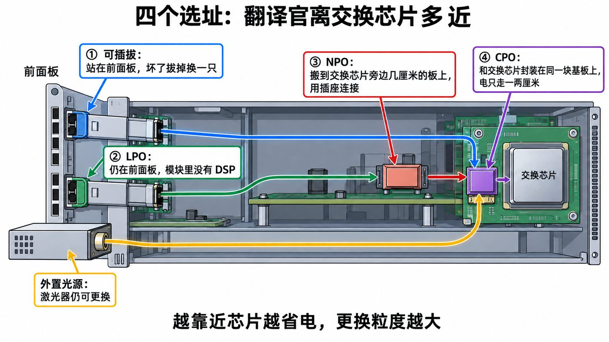
每个选址付什么代价
| 选址 | 省电 | 可维护 | 谁受益 | 谁受损 |
|---|---|---|---|---|
| 可插拔 | 最耗电 | 最好，一分钟换一只 | 所有模块厂 | 无 |
| LPO / LRO | 省一半左右 / 省一部分 | 好，仍可插拔 | 驱动器与放大器厂 | DSP 厂（LPO 清零，LRO 减半） |
| NPO | 接近 CPO | 中，开盖换 | 延续可插拔工艺的模块厂、连接器厂、无源件厂 | 视是否保留重定时而定 |
| CPO | 最省 | 更换粒度大；激光器外置才能换 | 交换芯片厂、封装与设备厂、激光器厂、光纤阵列厂 | 可插拔模块厂（交换机侧） |
CPO 的一个关键设计：既然激光器最怕热、最容易坏，就不封进芯片，而是拿到面板上做成可插拔的外置光源模块，用保偏光纤把光送进去。这也是激光器厂在 CPO 时代依然有生意、且单颗功率和单价上移的原因（第 13 章）。但外置不是 CPO 的物理必然，Intel 的光 I/O 芯粒把激光集成在片上。
2026 年 9 月站在哪
博通的 CPO 交换机 TH6-Davisson 2025 年 10 月宣布出货，是它的第三代 CPO；英伟达的 Quantum-X Photonics 2026 年 6 月在 Lambda 的万卡集群投入生产，Spectrum-X Photonics 官网写 2026 下半年可用，英伟达在 LightCounting 7 月的会上称 CPO 已进入 Scale-out 量产1。但在光博会的论坛上，中国的云厂商和模块厂几乎一致把重心放在 NPO：立讯彭小伟的原话是"NPO 本质是一个可插拔产业链的延续"，耦合沿用原设备、工艺可迁移、运维仍可插拔，"完全避免了 CPO 一坏了要整体返修的问题"，但"没有自己的光、没有先进封装，要跟人合作"；百度、阿里、腾讯的判断都是 NPO 会比 CPO 先落地，因为 NPO 是开放生态、多家竞价，CPO 意味着被交换芯片厂绑定2。Marvell 的重心也放在 NPO3。
光迅科技蒋波把这场迁移说成"责任主体的迁移"：可插拔时代模块厂管光学和良率，系统厂管电路板和散热；到了 NPO 和 CPO，系统厂要自己管全部环节。谁管，谁就有定价权4。LPO 的现实落点：100G 每车道的 LPO 已在一家云厂商的万卡集群规模落地；200G 每车道上第三方判断 LRO 更现实，Marvell 讲者的口径是 1.6T 全重定时与半重定时大约一半一半（第 11 章）。
再深一层：功耗和可靠性的账
再深一层：物理细节与推导（读不懂可跳过，不影响主线）
英伟达的功耗账。 同一个 1.6T 端口：传统可插拔约 30 瓦（DSP 约 20 瓦加激光约 10 瓦），CPO 约 9 瓦（光引擎约 7 瓦加外置激光约 2 瓦）。官方倍数改过口径：2025 年 3 月说能效提升 3.5 倍，2026 年官网说 5 倍；激光器数量减少约 4 倍。引用要带年份5。
第三方账。 SemiAnalysis 估算 800G 可插拔约 16 到 17 瓦，英伟达 CPO 折合每 800G 约 4 到 5 瓦；Meta 实测博通 CPO 交换机每 800G 从 15 瓦降到 5.4 瓦。切到 CPO 后光模块成本降约 86%，但交换机本体成本涨约 81%，三层网络整集群成本只省约 3%。可靠性：可插拔模块返修中约 80% 是"没查出问题"（付费文章，需自行复核）6。Lambda 的部署口径：常规交换机约 7.0 千瓦、CPO 交换机 3.95 千瓦1。
光迅现场的"封装革命"一页 把三级台阶各自先撞的墙列出来：前面板可插拔先撞面板密度、散热、走线损耗；近封装先撞插座、光纤阵列、冷板维护；共封装先撞封装良率、热、测试与维护。结论一句："光电转换的位置不是路线之争，而是在电路径、密度、能耗与维护之间选择最优边界。"
四个选址是同一道题：光电转换点建在离芯片多近的地方。这是一道"哪条成本曲线先弯下去"的经济题，不是"哪条技术更先进"的技术题。答案取决于电价、良率和可维护性，这些都是能在展台上问出来的数。2026 年的现实是北美 CPO 已出货、中国重心在 NPO、LPO 在 100G 落地而 200G 走 LRO。
翻译官从大门口（可插拔）搬到走廊（NPO）再搬到办公桌旁（CPO）。搬得越近，说话的人越省力，但翻译官病了就得整间办公室停工，所以最娇贵的那位（激光器）还是留在门口随时能换。
Vol.75 里 Kevin 的判断是"三分天下"：机柜内看铜和 LPO，跨机柜看可插拔，超大规模高密度场景 CPO 渐渐渗透；"哪条场景先放量、哪条产业先成熟，这个产业很可能就是它的了"。券商与 SemiAnalysis 对 CPO 时点的分歧（2026 年已出货 72 万只对 2029 年才行）是全书最该并列的分歧，第 20 章讲怎么看。
四个选址按离芯片由远到近排一下。
CPO 为什么要把激光器拿到外面？
为什么中国厂商更倾向 NPO？
参考层：数字、来源与实物照片（首次学习可跳过）
论坛上的时间表。 阿里云韩天对国内 Scale-up 光互联放量："瞎猜一个，28 年"；腾讯代表："至少明年才能量产准备好，爆发点可能在明年到后年"；百度万昳："从工程落地来说 NPO 会更早一些"。Vol.75 里 Kevin 对 CPO 的判断是"至少两三年才能看到初步的重大进展"（2025 年录制）。
- Broadcom TH6-Davisson 公告 2025-10-08；NVIDIA Spectrum-X Photonics 产品页（2026-09 访问）；LightCounting CPO/NPO 会议纪要 2026-07-23；Lambda 部署经 SDxCentral 转述 2026-06。
- 彭小伟（立讯）2026-09-10 CIOE 论坛转写第 92、128 行；NPO 圆桌讨论转写，2026-09-10。
- Marvell，FY27Q2 电话会，2026-08-27。
- 蒋波（光迅科技），2026-09-10 CIOE 论坛转写。
- NVIDIA 技术博客 2025-08-18（30 瓦对 9 瓦）；NVIDIA 新闻稿 2025-03-18（3.5 倍）；NVIDIA 官网 2026-09 访问（5 倍）。
- SemiAnalysis，《Co-Packaged Optics》，2026-01-01（付费，需自行复核）。
三个分岔，各看哪个数
- 解释引擎：电走不远，转换点靠近芯片（第 7 章）
- 三条光源路线（第 6 章）与它们的玩家（第 13 到 15 章）
- 四个选址（第 19 章）
- 分岔的"物理量"
- 有源铜缆与 Scale-up 光化
- 机构分歧的读法
"投资光通信就是判断哪条技术路线更先进。"每个分岔的胜负都由成本曲线决定，成本曲线的拐点表现为几个能观察的物理量。盯数，不盯口号。
第 7 章那句话推出了三件事，它们就是今天这个行业最大的三个分岔。每个分岔都不需要预测，只需要知道看哪个数、目前的读数是多少。
分岔一：硅光占比升多快
硅光占比升，理论上缓解 EML 的缺口、抬高连续光激光器的需求；但份额下降不等于 EML 绝对量下降。看：硅光在 800G、1.6T 出货里的占比；EML 与连续光激光器的交期与缺口。目前读数：四个口径并列，LightCounting 称 2026 年硅光调制器收发器销售额首次过半，券商按速率档 60/80/80%，按总数量只有 10%，中际旭创自述 38% 升向 73%，分母不同不可互换（第 15 章）；磷化铟需求超供给约三成，Lumentum 8 月说"EML 大概没变化"（第 13 章）。代工端的数字更硬：Tower 硅光年化超 6.8 亿美元、2027 年签约 13 亿1。
分岔二：CPO 何时量产替代交换机侧可插拔
CPO 交换机全面量产，是交换机侧可插拔份额开始被替代的临界事件，不是可插拔利润消失；网卡侧的模块不受影响。分层替代的示意模型：两层网络里只换脊层，可插拔壳数减约 25%，只换叶层减约 50%，全换 75%2。看：CPO 交换机的良率与出货量；模块厂有没有拿到光引擎和外置光源的订单；博通第四代 400G 平台的宣布时点。目前读数与分歧：券商称 CPO 占 800G 以上出货 1%/6%/9%（2026 到 2028），SemiAnalysis 称 CPO 要到 2029 年，比街上预期晚两年；TrendForce 称 2030 年渗透率或达 35%，LightCounting 基准只假设 10% 到 15% 的 Scale-up 互连在 2030 到 2031 年迁移到 NPO 或 CPO，Yole 把大规模部署定在 2028 到 20303。这是最值得做成"分歧监控项"的一条，不要替读者裁决。
分岔三：铜还能守几米
有源铜缆（AEC）是在铜缆里加一颗中继芯片，把信号在半路整形一次，让铜从一两米撑到五到七米，机柜内和相邻机柜可以继续用铜，它直接决定第 2 章那个交叉点往哪边挪。交叉点的另一边也在动：英伟达公布了把多个机柜连成一个 NVLink 域的方案，跨机柜那段用光；谷歌的 TPU 集群用光交换把上百个机柜连成一个域。机柜内 GPU 互联开始用光，是一块新增的光市场，要和交换机侧的替代分开算。看：下一代 SerDes 速率下有源铜缆的可用距离；机柜内 GPU 互联有没有开始用光；Credo 光学收入对有源铜缆收入的增速差。目前读数：224G 下无源铜约 1 到 2 米、有源约 5 米（后者二手）；Marvell 与立讯口径 400G 每车道"势必导入光"；三家云厂商对国内 Scale-up 光化的时间点差两年（第 16 章）；英伟达 NVL576 量产日期官方未给；Credo 指引 FY27 光学收入超 6 亿美元（第 17 章）。
两条旁支
光交换机（OCS）不做光电转换，用微镜或液晶直接切光路，不看内容所以不能做复杂路由，但功耗和附加延迟都很低（仍有控制功耗和毫秒级切换时间），速率无关；谷歌用它去掉了一层电交换机，其余各层的光模块还在，OCS 与 CPO 不是替代关系。空芯光纤把玻璃芯换成空气，延迟低三成、损耗更低，目前很贵，早期概念。两者的玩家见第 17 章。
把三个分岔接回那一句话
三个分岔看起来是三件事，其实是第 7 章那句话的三个表现。硅光占比是"发光和调制分不分开"，CPO 是"转换点搬多近"，铜的反击是"交叉点往哪边挪"。都是电走不远、光被迫接管之后，产业链在不同位置的应对。谁赢，取决于谁的成本曲线先弯下去。
三个分岔：硅光占比、CPO 量产、铜守几米。每一个都落到一个能观察的物理量：出货占比、交期、良率、可用距离、订单。机构分歧并列写出，不裁决。
翻译官的嘴换不换（硅光）、翻译官搬多近（CPO）、隔着墙还能听清几米（铜）。三个问题的答案都写在同一张成本账上。
Vol.75 结尾 Kevin 留了两个悬念：AI 这波资本开支是否重演 2000 年；CPO、LPO、空芯光纤谁赢，取决于哪条成本线先弯下去。第一个悬念不属于本书，第二个就是这一章。作业层的路标信号（SC-09、SC-10）与持仓映射单独成文，不在本书展开。
三个分岔各看哪个数？
CPO 的机构分歧有多大？
为什么说三个分岔是一件事？
参考层：数字、来源与实物照片（首次学习可跳过）
光交换的数。 谷歌 Palomar 单台 136 乘 136 端口、功耗约 108 瓦，同端口数的电交换机约 3,000 瓦；Coherent 商用 64 到 512 乘 512 液晶方案，Lumentum R300 微镜方案；券商对中际旭创的建模里 OCS 2027 年只有 200 台，单价约 13 万美元，是单价极高、数量极小的细分4。
- Tower Semiconductor，Q2 2026 电话会，2026-08-11。
- 本书前作《光模块小白手册》2026-09-10 二轮审核修订口径（分层替代示意模型）。
- 一家外资券商《Global Optical transceivers》2026-09-07 p.6；SemiAnalysis 2026 夏季观点梳理（2026-07-10 播客，二手）；TrendForce 2026-05-01；LightCounting 2026-05；Yole 2025-09-02。
- Google，《Mission Apollo》，SIGCOMM 2022；Coherent 与 Lumentum 产品页；券商《Innolight》2026-09-07 p.6。
一页纸复习、词汇表、自测、材料
把整本书压成一页。先看七句话，再看一张图，然后做十二道题。词汇表放在最后，正文里带下划线的词点一下会跳到这里。
七句话
一张图
打掉的错误直觉
| 直觉 | 实际 |
|---|---|
| 买 GPU 就是买算力 | 模型装不下也算不完一颗卡，每步同步梯度，连接和算力一样重要 |
| 光纤的优势是更快 | 是损耗与速率解耦，跑远了不糊 |
| 1.6T 难在通道多 | 难在每条车道跑两倍快；加车道受口数、零件和累积良率限制 |
| 激光器负责传数据 | 激光器只管亮，调制器写数据 |
| 硅光赢了激光器厂就输了 | 硅不发光，硅光仍要磷化铟激光器 |
| 光进铜退因为光更先进 | 因为电跟不上 |
| 英伟达锁定了激光器产能 | 是股权投资加非独家采购承诺 |
| 只有两家能做 DSP | 头部两家，Credo 和 MaxLinear 是第三第四家 |
| CPO 出来可插拔就没了 | 网卡侧还在；英伟达自己说同时支持两者 |
| 多两道测试设备销量翻倍 | 看件次、单件时间、并行和稼动率 |
| 投资是判断哪条路线先进 | 是盯成本曲线拐点表现出来的物理量 |
十二道题
词汇表
- 光模块optical transceiver
- 插在交换机或网卡口上、把电变光和把光变电的可插拔盒子，收发一体。
- 光引擎optical engine
- 光模块去掉外壳和电口后的核心光电部分，NPO 和 CPO 里用的就是它。
- 网卡 NICNetwork Interface Card
- GPU 或服务器对外打电话的口。
- 交换机switch
- 总机，读报文地址把数据转到正确出口。柜顶第一级叫叶，更上一级叫脊。
- 全归约all-reduce
- 数据并行训练里每步把所有 GPU 的梯度求和平均再发回的操作，通信量与参数量同量级。
- 趋肤效应skin effect
- 高频交变电流被自身磁场感应的涡流推向导线表面，有效截面缩小，电阻随频率平方根上升。
- 介质损耗dielectric loss
- 绝缘材料在高频电场里反复极化生热，随频率线性上升。
- 码间干扰inter-symbol interference
- 高频分量衰减多，方波边沿磨圆，相邻比特重叠，接收端分不清 0 和 1。
- 全反射total internal reflection
- 光从高折射率介质射向低折射率介质、入射角大于临界角时全部反射，光纤靠它把光困在纤芯里。
- 车道 lanelane
- 模块里并排的一路信号。800G 是 8 条 100G。
- SR / DR / FR / LR / ZR距离等级
- 约 100 米 / 500 米 / 2 公里 / 10 公里 / 80 公里以上。SR 用多模光纤，其余单模。
- OSFP / QSFP-DD外壳规格
- 模块的机械尺寸标准。1.6T 基本用 OSFP。
- DSP / ODSPDigital Signal Processor
- 模块的大脑：均衡（反向补偿信道）与重定时（恢复时钟），最耗电，头部集中在两家。
- 均衡equalization
- 用前后几个符号的加权和抵消码间干扰，把磨圆的边沿竖回来。
- 驱动器driver
- 把 DSP 的微弱信号放大到激光器或调制器需要的摆幅，与光器件配对设计。
- 受激辐射stimulated emission
- 高能级电子被经过的光子触发跳回低能级，放出一个波长相位方向完全相同的新光子。
- 谐振腔resonant cavity
- 两面镜子之间让光反复放大，只有能形成驻波的波长被选出。
- 调制器modulator
- 把连续的光按数据变成明暗。电吸收调制器靠加电压吸光，硅光靠改相位。
- 光电探测器 PDphotodetector
- 反向偏置的半导体二极管，光子进来激发电子空穴对，形成与光功率成正比的电流。
- 跨阻放大器 TIATransimpedance Amplifier
- 把探测器的微弱电流变成电压，它的噪声决定接收灵敏度。
- VCSEL垂直腔面发射激光器
- 上下各几十对四分之一波长薄层做镜子，腔竖着，光从表面射出；砷化镓；直接调制；多模短距。
- EML电吸收调制激光器
- 一条磷化铟波导上串一段分布反馈激光器和一段电吸收调制器；单模中长距，最难做。
- DFB分布反馈激光器
- 波导下方刻周期性光栅做分布式反射，只让一种波长起振，光谱极纯。
- 磷化铟 InPindium phosphide
- 做 EML、连续光激光器和高速探测器的化合物半导体，晶圆主流 3 英寸，产能紧。
- 硅光Silicon Photonics
- 把调制器、波导、探测器做在硅片上，用成熟 CMOS 制程；硅不发光，激光器外置或异质集成。
- 马赫曾德调制器Mach-Zehnder modulator
- 光分两臂，改一臂相位，合并时同相亮反相暗；硅光常用，毫米级长。
- 微环调制器micro-ring modulator
- 小环靠近直波导，加电压移动谐振波长来开关这个波长的光；尺寸小但对温度敏感。
- 连续光激光器 CWContinuous Wave laser
- 只管亮不管闪，给硅光和 CPO 供光；功率从 70 毫瓦到 400 毫瓦分档。
- 薄膜铌酸锂 TFLNthin-film lithium niobate
- 有线性电光效应的材料，调制带宽超过 100 GHz，供应链待验证。
- PAM4四电平脉冲幅度调制
- 一个符号传 2 比特而不是 1 比特，同样符号速率跑出两倍数据，代价是对噪声更敏感。
- SerDes串行器 / 解串器
- 芯片边缘把并行数据串成一条高速线的电路，单线速度约每三四年翻一倍。
- 可插拔pluggable
- 光模块插在设备面板上，坏了拔掉换一只。现状主流。
- LPO / LRO线性直驱 / 线性接收
- 去掉全部 / 接收侧 DSP 的可插拔模块，均衡拆给交换芯片、驱动器和放大器。
- NPO近封装光学
- 光引擎搬到交换芯片旁几厘米的板上，用插座连接，开盖能换；延续可插拔产业链。
- CPO共封装光学
- 光引擎和交换芯片封装在同一块基板上，最省电，更换粒度最大。
- 外置光源 ELSExternal Laser Source
- CPO 时代把连续光激光器做成前面板可插拔的盒子，用保偏光纤送光进去。
- 光纤阵列单元 FAUFiber Array Unit
- 一排光纤按固定间距排在 V 槽基板上，与光引擎的波导阵列对准，CPO 的第一道门。
- MT 插芯 / MPO / MMC多芯连接器
- MT 是带精密孔阵的芯，MPO 是基于它的可插拔多芯连接器，MMC 是更小的新一代。
- 有源铜缆 AECActive Electrical Cable
- 铜缆里加中继芯片，把铜从一两米撑到五到七米。
- 光交换机 OCSOptical Circuit Switch
- 不做光电转换，用微镜或液晶直接切光路；功耗与附加延迟很低，有毫秒级切换时间。
- 相干coherent
- 用光的幅度和相位同时载信息，用于几十到几千公里的数据中心互联。
- Scale-up / Scale-out纵向 / 横向扩展
- 按协议域划分：GPU 之间的紧耦合直连域 / 通过交换机扩展的网。常见部署在机柜内 / 机柜间，但跨机柜的 NVLink 域也是 Scale-up。
- 累积良率cumulative yield
- 各工序良率相乘；四道 90% 只剩 66%。
- 定价权pricing power
- 缺货时谁能涨价。
- 交期lead time
- 下单到交货的周数，供应链松紧最直接的物理量。
- 稼动率utilization
- 产线实际开工的比例。
- 路线中立route-neutral
- 不管哪条技术路线赢都要被买的环节。
这本书用了什么材料
- 一手现场：2026-09-10 深圳光博会两场论坛 12 场演讲的录音转写与 125 张现场照片（讲者含中国信通院赵文玉、新易盛张金双、Marvell Annie Liao、华工正源罗传能、光迅科技蒋波、立讯彭小伟、阿里云与锐智云联联合实验室徐超、百度万昳、阿里云韩天，以及 NPO 圆桌的腾讯、华为、连接器厂代表）。转写为 ASR 校订稿，引用处注明录音时间点；未逐句听校。
- 一手播客：《十分吸引》Vol.75《光与电的游戏》逐字稿（Kevin 主讲，孙悦主持），引用处注明时间点。
- 公司一手：Lumentum、Coherent、Broadcom、Marvell、Credo、MACOM、Semtech、MaxLinear、Tower、GlobalFoundries、Arista、Celestica、Fabrinet、FormFactor、Aehr、Teradyne、AXT、IQE、NVIDIA、Cisco、CoreWeave 等 2026 年财报电话会转录、8-K 与新闻稿；中际旭创、新易盛、光迅、天孚、罗博特科等 2026 年半年报或公告；Coherent 8-K Ex-99.1（2026-03-02）。
- 机构公开稿：LightCounting 2026 年 1 至 9 月各期 newsletter（多数原页 403，经搜索摘要与 IEEE ComSoc 转引，标注需付费复核）；TrendForce 2025-12 至 2026-07；Dell'Oro；Cignal AI；Yole；650 Group；SemiAnalysis 付费文章（标注需自行复核）；一家外资券商 2026-09-07 与 2026-09-08 的四份报告（付费研究，不可转载，仅内部参考）。
- 教材与论文：Agrawal《Fiber-Optic Communication Systems》；Pozar《Microwave Engineering》；三菱电机 ADVANCE Vol.184；Doerr 2015《Frontiers in Physics》（CC BY）；Li 等 2025《Journal of Semiconductors》；Kohli 与 Teissier 2026 预印本；Google《Mission Apollo》SIGCOMM 2022；ZeRO 论文 2020；Llama 3 论文 2024。
- 图片：标注"现场照片"的为本书作者 2026-09-10 现场拍摄的讲者 PPT；标注公司名的为该公司公开资料；编号标注的实物照片由本书添加编号；标注"AI 生成示意图"的由 Codex imagegen 生成并经人工逐字校对；西南证券、Vitex Direct 的图已注明。
- 本书的事实层沿用了 2026-09-10 两轮对抗审核的修订口径，并在写作前比对了审核记录里的全部被纠正说法。
版本：2026-09-12 第二版。第一版（2026-09-11）保留在仓库另一目录以便对比。所有"当前""最新"类数字都带日期；读到时请默认它们可能已经过时，以各章来源为准。
本书为产业学习材料，不构成投资建议。提到的公司均为说明产业链位置，不是推荐。